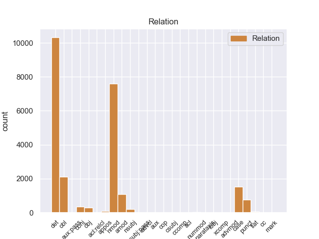
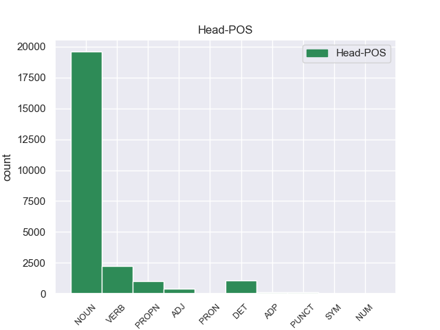
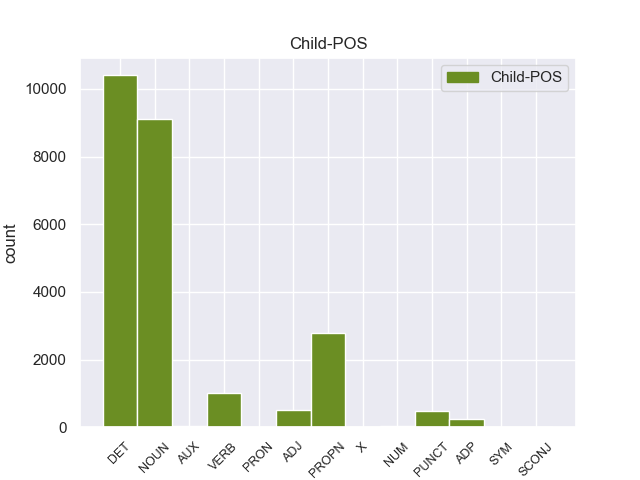

Distribution of features within this leaf



Agreement Rules sorted by frequency.
When the head token is NOUN and the dependent token is DET.
1 En _ _ _ _ 0 _ _ _
2 1991 _ _ _ _ 0 _ _ _
3 , _ _ _ _ 0 _ _ _
4 como _ _ _ _ 0 _ _ _
5 ya _ _ _ _ 0 _ _ _
6 está _ _ _ _ 0 _ _ _
7 indicado _ _ _ _ 0 _ _ _
8 en _ _ _ _ 0 _ _ _
9 el _ _ _ _ 0 _ _ _
10 párrafo _ _ _ _ 0 _ _ _
11 anterior _ _ _ _ 0 _ _ _
12 , _ _ _ _ 0 _ _ _
13 se _ _ _ _ 0 _ _ _
14 creó _ _ _ _ 0 _ _ _
15 un _ _ _ _ 0 _ _ _
16 equipo _ _ _ _ 0 _ _ _
17 ad _ _ _ _ 0 _ _ _
18 hoc _ _ _ _ 0 _ _ _
19 para _ _ _ _ 0 _ _ _
20 averiguar _ _ _ _ 0 _ _ _
21 como _ _ _ _ 0 _ _ _
22 se _ _ _ _ 0 _ _ _
23 podía _ _ _ _ 0 _ _ _
24 desarrollar _ _ _ _ 0 _ _ _
25 el _ _ _ _ 0 _ _ _
26 Dialogo _ _ _ _ 0 _ _ _
27 Social _ _ _ _ 0 _ _ _
28 , _ _ _ _ 0 _ _ _
29 este este DET _ Gender=Masc|Number=Sing 30 det _ _
30 equipo equipo NOUN _ Gender=Masc|Number=Sing 0 _ _ _
31 estaba _ _ _ _ 0 _ _ _
32 formado _ _ _ _ 0 _ _ _
33 por _ _ _ _ 0 _ _ _
34 representantes _ _ _ _ 0 _ _ _
35 de _ _ _ _ 0 _ _ _
36 todas _ _ _ _ 0 _ _ _
37 las _ _ _ _ 0 _ _ _
38 organizaciones _ _ _ _ 0 _ _ _
39 relacionadas _ _ _ _ 0 _ _ _
40 con _ _ _ _ 0 _ _ _
41 CES _ _ _ _ 0 _ _ _
42 , _ _ _ _ 0 _ _ _
43 UNICE _ _ _ _ 0 _ _ _
44 y _ _ _ _ 0 _ _ _
45 CEEP _ _ _ _ 0 _ _ _
46 ; _ _ _ _ 0 _ _ _
When the head token is NOUN and the dependent token is DET. and the head token is NOUN and the dependent token is NOUN.
1 En _ _ _ _ 0 _ _ _
2 1991 _ _ _ _ 0 _ _ _
3 , _ _ _ _ 0 _ _ _
4 como _ _ _ _ 0 _ _ _
5 ya _ _ _ _ 0 _ _ _
6 está _ _ _ _ 0 _ _ _
7 indicado _ _ _ _ 0 _ _ _
8 en _ _ _ _ 0 _ _ _
9 el _ _ _ _ 0 _ _ _
10 párrafo _ _ _ _ 0 _ _ _
11 anterior _ _ _ _ 0 _ _ _
12 , _ _ _ _ 0 _ _ _
13 se _ _ _ _ 0 _ _ _
14 creó _ _ _ _ 0 _ _ _
15 un _ _ _ _ 0 _ _ _
16 equipo equipo NOUN _ Gender=Masc|Number=Sing 0 _ _ _
17 ad _ _ _ _ 0 _ _ _
18 hoc _ _ _ _ 0 _ _ _
19 para _ _ _ _ 0 _ _ _
20 averiguar _ _ _ _ 0 _ _ _
21 como _ _ _ _ 0 _ _ _
22 se _ _ _ _ 0 _ _ _
23 podía _ _ _ _ 0 _ _ _
24 desarrollar _ _ _ _ 0 _ _ _
25 el _ _ _ _ 0 _ _ _
26 Dialogo dialogo NOUN _ Gender=Masc|Number=Sing 16 nmod _ _
27 Social _ _ _ _ 0 _ _ _
28 , _ _ _ _ 0 _ _ _
29 este _ _ _ _ 0 _ _ _
30 equipo _ _ _ _ 0 _ _ _
31 estaba _ _ _ _ 0 _ _ _
32 formado _ _ _ _ 0 _ _ _
33 por _ _ _ _ 0 _ _ _
34 representantes _ _ _ _ 0 _ _ _
35 de _ _ _ _ 0 _ _ _
36 todas _ _ _ _ 0 _ _ _
37 las _ _ _ _ 0 _ _ _
38 organizaciones _ _ _ _ 0 _ _ _
39 relacionadas _ _ _ _ 0 _ _ _
40 con _ _ _ _ 0 _ _ _
41 CES _ _ _ _ 0 _ _ _
42 , _ _ _ _ 0 _ _ _
43 UNICE _ _ _ _ 0 _ _ _
44 y _ _ _ _ 0 _ _ _
45 CEEP _ _ _ _ 0 _ _ _
46 ; _ _ _ _ 0 _ _ _
When the head token is NOUN and the dependent token is DET. and the head token is NOUN and the dependent token is NOUN. and the head token is NOUN and the dependent token is PROPN.
1 En _ _ _ _ 0 _ _ _
2 1991 _ _ _ _ 0 _ _ _
3 , _ _ _ _ 0 _ _ _
4 como _ _ _ _ 0 _ _ _
5 ya _ _ _ _ 0 _ _ _
6 está _ _ _ _ 0 _ _ _
7 indicado _ _ _ _ 0 _ _ _
8 en _ _ _ _ 0 _ _ _
9 el _ _ _ _ 0 _ _ _
10 párrafo _ _ _ _ 0 _ _ _
11 anterior _ _ _ _ 0 _ _ _
12 , _ _ _ _ 0 _ _ _
13 se _ _ _ _ 0 _ _ _
14 creó _ _ _ _ 0 _ _ _
15 un _ _ _ _ 0 _ _ _
16 equipo _ _ _ _ 0 _ _ _
17 ad _ _ _ _ 0 _ _ _
18 hoc _ _ _ _ 0 _ _ _
19 para _ _ _ _ 0 _ _ _
20 averiguar _ _ _ _ 0 _ _ _
21 como _ _ _ _ 0 _ _ _
22 se _ _ _ _ 0 _ _ _
23 podía _ _ _ _ 0 _ _ _
24 desarrollar _ _ _ _ 0 _ _ _
25 el _ _ _ _ 0 _ _ _
26 Dialogo dialogo NOUN _ Gender=Masc|Number=Sing 0 _ _ _
27 Social _ _ _ _ 0 _ _ _
28 , _ _ _ _ 0 _ _ _
29 este _ _ _ _ 0 _ _ _
30 equipo _ _ _ _ 0 _ _ _
31 estaba _ _ _ _ 0 _ _ _
32 formado _ _ _ _ 0 _ _ _
33 por _ _ _ _ 0 _ _ _
34 representantes _ _ _ _ 0 _ _ _
35 de _ _ _ _ 0 _ _ _
36 todas _ _ _ _ 0 _ _ _
37 las _ _ _ _ 0 _ _ _
38 organizaciones _ _ _ _ 0 _ _ _
39 relacionadas _ _ _ _ 0 _ _ _
40 con _ _ _ _ 0 _ _ _
41 CES _ _ _ _ 0 _ _ _
42 , _ _ _ _ 0 _ _ _
43 UNICE unice PROPN _ Gender=Fem|Number=Sing 26 nmod _ _
44 y _ _ _ _ 0 _ _ _
45 CEEP _ _ _ _ 0 _ _ _
46 ; _ _ _ _ 0 _ _ _
When the head token is NOUN and the dependent token is DET. and the head token is NOUN and the dependent token is NOUN. and the head token is NOUN and the dependent token is PROPN. and the head token is VERB and the dependent token is NOUN.
1 Más _ _ _ _ 0 _ _ _
2 tarde _ _ _ _ 0 _ _ _
3 en _ _ _ _ 0 _ _ _
4 1960 _ _ _ _ 0 _ _ _
5 , _ _ _ _ 0 _ _ _
6 The _ _ _ _ 0 _ _ _
7 Boss _ _ _ _ 0 _ _ _
8 fue _ _ _ _ 0 _ _ _
9 enviada _ _ _ _ 0 _ _ _
10 a _ _ _ _ 0 _ _ _
11 el _ _ _ _ 0 _ _ _
12 espacio _ _ _ _ 0 _ _ _
13 en _ _ _ _ 0 _ _ _
14 una _ _ _ _ 0 _ _ _
15 misión _ _ _ _ 0 _ _ _
16 cuyo _ _ _ _ 0 _ _ _
17 propósito _ _ _ _ 0 _ _ _
18 era _ _ _ _ 0 _ _ _
19 estudiar _ _ _ _ 0 _ _ _
20 como _ _ _ _ 0 _ _ _
21 el _ _ _ _ 0 _ _ _
22 cuerpo _ _ _ _ 0 _ _ _
23 humano _ _ _ _ 0 _ _ _
24 se _ _ _ _ 0 _ _ _
25 adaptaba adaptaba VERB _ Gender=Masc|Number=Sing 0 _ _ _
26 a _ _ _ _ 0 _ _ _
27 las _ _ _ _ 0 _ _ _
28 condiciones condiciones NOUN _ Gender=Masc|Number=Sing 25 nmod _ _
29 extremas _ _ _ _ 0 _ _ _
30 . _ _ _ _ 0 _ _ _
When the head token is NOUN and the dependent token is DET. and the head token is NOUN and the dependent token is NOUN. and the head token is NOUN and the dependent token is PROPN. and the head token is VERB and the dependent token is NOUN. and the head token is NOUN and the dependent token is VERB.
1 Ahora _ _ _ _ 0 _ _ _
2 se _ _ _ _ 0 _ _ _
3 aunan _ _ _ _ 0 _ _ _
4 cocina _ _ _ _ 0 _ _ _
5 y _ _ _ _ 0 _ _ _
6 entorno _ _ _ _ 0 _ _ _
7 , _ _ _ _ 0 _ _ _
8 me _ _ _ _ 0 _ _ _
9 encanto _ _ _ _ 0 _ _ _
10 la _ _ _ _ 0 _ _ _
11 bodega _ _ _ _ 0 _ _ _
12 , _ _ _ _ 0 _ _ _
13 las _ _ _ _ 0 _ _ _
14 sillas _ _ _ _ 0 _ _ _
15 son _ _ _ _ 0 _ _ _
16 comodisimas _ _ _ _ 0 _ _ _
17 , _ _ _ _ 0 _ _ _
18 la _ _ _ _ 0 _ _ _
19 iluminacion _ _ _ _ 0 _ _ _
20 es _ _ _ _ 0 _ _ _
21 excepcional _ _ _ _ 0 _ _ _
22 , _ _ _ _ 0 _ _ _
23 alcanzas _ _ _ _ 0 _ _ _
24 un _ _ _ _ 0 _ _ _
25 grado _ _ _ _ 0 _ _ _
26 de _ _ _ _ 0 _ _ _
27 satisfaccion _ _ _ _ 0 _ _ _
28 que _ _ _ _ 0 _ _ _
29 no _ _ _ _ 0 _ _ _
30 se _ _ _ _ 0 _ _ _
31 puede _ _ _ _ 0 _ _ _
32 describir _ _ _ _ 0 _ _ _
33 , _ _ _ _ 0 _ _ _
34 hay _ _ _ _ 0 _ _ _
35 que _ _ _ _ 0 _ _ _
36 probar _ _ _ _ 0 _ _ _
37 lo _ _ _ _ 0 _ _ _
38 , _ _ _ _ 0 _ _ _
39 es _ _ _ _ 0 _ _ _
40 la _ _ _ _ 0 _ _ _
41 primera primera VERB _ Gender=Masc|Number=Sing 53 det _ _
42 vez _ _ _ _ 0 _ _ _
43 en _ _ _ _ 0 _ _ _
44 mi _ _ _ _ 0 _ _ _
45 vda _ _ _ _ 0 _ _ _
46 que _ _ _ _ 0 _ _ _
47 una _ _ _ _ 0 _ _ _
48 cocina _ _ _ _ 0 _ _ _
49 me _ _ _ _ 0 _ _ _
50 emociona _ _ _ _ 0 _ _ _
51 hasta _ _ _ _ 0 _ _ _
52 ese _ _ _ _ 0 _ _ _
53 punto punto NOUN _ Gender=Masc|Number=Sing 0 _ _ _
54 . _ _ _ _ 0 _ _ _
When the head token is NOUN and the dependent token is DET. and the head token is NOUN and the dependent token is NOUN. and the head token is NOUN and the dependent token is PROPN. and the head token is VERB and the dependent token is NOUN. and the head token is NOUN and the dependent token is VERB. and the head token is DET and the dependent token is DET.
1 Ahora _ _ _ _ 0 _ _ _
2 se _ _ _ _ 0 _ _ _
3 aunan _ _ _ _ 0 _ _ _
4 cocina _ _ _ _ 0 _ _ _
5 y _ _ _ _ 0 _ _ _
6 entorno _ _ _ _ 0 _ _ _
7 , _ _ _ _ 0 _ _ _
8 me _ _ _ _ 0 _ _ _
9 encanto _ _ _ _ 0 _ _ _
10 la _ _ _ _ 0 _ _ _
11 bodega _ _ _ _ 0 _ _ _
12 , _ _ _ _ 0 _ _ _
13 las _ _ _ _ 0 _ _ _
14 sillas _ _ _ _ 0 _ _ _
15 son _ _ _ _ 0 _ _ _
16 comodisimas _ _ _ _ 0 _ _ _
17 , _ _ _ _ 0 _ _ _
18 la _ _ _ _ 0 _ _ _
19 iluminacion _ _ _ _ 0 _ _ _
20 es _ _ _ _ 0 _ _ _
21 excepcional _ _ _ _ 0 _ _ _
22 , _ _ _ _ 0 _ _ _
23 alcanzas _ _ _ _ 0 _ _ _
24 un _ _ _ _ 0 _ _ _
25 grado _ _ _ _ 0 _ _ _
26 de _ _ _ _ 0 _ _ _
27 satisfaccion _ _ _ _ 0 _ _ _
28 que _ _ _ _ 0 _ _ _
29 no _ _ _ _ 0 _ _ _
30 se _ _ _ _ 0 _ _ _
31 puede _ _ _ _ 0 _ _ _
32 describir describir DET _ Gender=Masc|Number=Sing 0 _ _ _
33 , _ _ _ _ 0 _ _ _
34 hay _ _ _ _ 0 _ _ _
35 que _ _ _ _ 0 _ _ _
36 probar _ _ _ _ 0 _ _ _
37 lo _ _ _ _ 0 _ _ _
38 , _ _ _ _ 0 _ _ _
39 es _ _ _ _ 0 _ _ _
40 la _ _ _ _ 0 _ _ _
41 primera _ _ _ _ 0 _ _ _
42 vez _ _ _ _ 0 _ _ _
43 en _ _ _ _ 0 _ _ _
44 mi mi DET _ Gender=Fem|Number=Sing 32 det _ _
45 vda _ _ _ _ 0 _ _ _
46 que _ _ _ _ 0 _ _ _
47 una _ _ _ _ 0 _ _ _
48 cocina _ _ _ _ 0 _ _ _
49 me _ _ _ _ 0 _ _ _
50 emociona _ _ _ _ 0 _ _ _
51 hasta _ _ _ _ 0 _ _ _
52 ese _ _ _ _ 0 _ _ _
53 punto _ _ _ _ 0 _ _ _
54 . _ _ _ _ 0 _ _ _
When the head token is NOUN and the dependent token is DET. and the head token is NOUN and the dependent token is NOUN. and the head token is NOUN and the dependent token is PROPN. and the head token is VERB and the dependent token is NOUN. and the head token is NOUN and the dependent token is VERB. and the head token is DET and the dependent token is DET. and the head token is PROPN and the dependent token is DET.
1 Esta _ _ _ _ 0 _ _ _
2 teoría _ _ _ _ 0 _ _ _
3 se _ _ _ _ 0 _ _ _
4 avenía _ _ _ _ 0 _ _ _
5 bien _ _ _ _ 0 _ _ _
6 con _ _ _ _ 0 _ _ _
7 la _ _ _ _ 0 _ _ _
8 creencia _ _ _ _ 0 _ _ _
9 de _ _ _ _ 0 _ _ _
10 el _ _ _ _ 0 _ _ _
11 Romanticismo romanticismo PROPN _ Mood=Ind|Number=Sing|Person=3|Tense=Pres|VerbForm=Fin 0 _ _ _
12 en _ _ _ _ 0 _ _ _
13 un _ _ _ _ 0 _ _ _
14 volkgeist _ _ _ _ 0 _ _ _
15 , _ _ _ _ 0 _ _ _
16 " _ _ _ _ 0 _ _ _
17 genio _ _ _ _ 0 _ _ _
18 o _ _ _ _ 0 _ _ _
19 espíritu _ _ _ _ 0 _ _ _
20 de _ _ _ _ 0 _ _ _
21 el el DET _ Definite=Def|Gender=Masc|Number=Sing|PronType=Art 11 det _ _
22 pueblo _ _ _ _ 0 _ _ _
23 " _ _ _ _ 0 _ _ _
24 , _ _ _ _ 0 _ _ _
25 autor _ _ _ _ 0 _ _ _
26 colectivo _ _ _ _ 0 _ _ _
27 y _ _ _ _ 0 _ _ _
28 anónimo _ _ _ _ 0 _ _ _
29 de _ _ _ _ 0 _ _ _
30 una _ _ _ _ 0 _ _ _
31 poesía _ _ _ _ 0 _ _ _
32 nacional _ _ _ _ 0 _ _ _
33 . _ _ _ _ 0 _ _ _
When the head token is NOUN and the dependent token is DET. and the head token is NOUN and the dependent token is NOUN. and the head token is NOUN and the dependent token is PROPN. and the head token is VERB and the dependent token is NOUN. and the head token is NOUN and the dependent token is VERB. and the head token is DET and the dependent token is DET. and the head token is PROPN and the dependent token is DET. and the head token is NOUN and the dependent token is ADJ.
1 En _ _ _ _ 0 _ _ _
2 el _ _ _ _ 0 _ _ _
3 caso _ _ _ _ 0 _ _ _
4 de _ _ _ _ 0 _ _ _
5 estrellas _ _ _ _ 0 _ _ _
6 variables _ _ _ _ 0 _ _ _
7 regulares _ _ _ _ 0 _ _ _
8 , _ _ _ _ 0 _ _ _
9 puede _ _ _ _ 0 _ _ _
10 determinar _ _ _ _ 0 _ _ _
11 se _ _ _ _ 0 _ _ _
12 con _ _ _ _ 0 _ _ _
13 precisión _ _ _ _ 0 _ _ _
14 su _ _ _ _ 0 _ _ _
15 período período NOUN _ Gender=Masc|Number=Sing 0 _ _ _
16 de _ _ _ _ 0 _ _ _
17 variabilidad _ _ _ _ 0 _ _ _
18 y _ _ _ _ 0 _ _ _
19 la _ _ _ _ 0 _ _ _
20 amplitud _ _ _ _ 0 _ _ _
21 de _ _ _ _ 0 _ _ _
22 el _ _ _ _ 0 _ _ _
23 mismo mismo ADJ _ Gender=Masc|Number=Sing 15 det _ _
24 . _ _ _ _ 0 _ _ _
When the head token is NOUN and the dependent token is DET. and the head token is NOUN and the dependent token is NOUN. and the head token is NOUN and the dependent token is PROPN. and the head token is VERB and the dependent token is NOUN. and the head token is NOUN and the dependent token is VERB. and the head token is DET and the dependent token is DET. and the head token is PROPN and the dependent token is DET. and the head token is NOUN and the dependent token is ADJ. and the head token is DET and the dependent token is NOUN.
1 Ahora _ _ _ _ 0 _ _ _
2 se _ _ _ _ 0 _ _ _
3 aunan _ _ _ _ 0 _ _ _
4 cocina _ _ _ _ 0 _ _ _
5 y _ _ _ _ 0 _ _ _
6 entorno _ _ _ _ 0 _ _ _
7 , _ _ _ _ 0 _ _ _
8 me _ _ _ _ 0 _ _ _
9 encanto _ _ _ _ 0 _ _ _
10 la _ _ _ _ 0 _ _ _
11 bodega _ _ _ _ 0 _ _ _
12 , _ _ _ _ 0 _ _ _
13 las _ _ _ _ 0 _ _ _
14 sillas _ _ _ _ 0 _ _ _
15 son _ _ _ _ 0 _ _ _
16 comodisimas _ _ _ _ 0 _ _ _
17 , _ _ _ _ 0 _ _ _
18 la _ _ _ _ 0 _ _ _
19 iluminacion _ _ _ _ 0 _ _ _
20 es _ _ _ _ 0 _ _ _
21 excepcional _ _ _ _ 0 _ _ _
22 , _ _ _ _ 0 _ _ _
23 alcanzas _ _ _ _ 0 _ _ _
24 un _ _ _ _ 0 _ _ _
25 grado _ _ _ _ 0 _ _ _
26 de _ _ _ _ 0 _ _ _
27 satisfaccion _ _ _ _ 0 _ _ _
28 que _ _ _ _ 0 _ _ _
29 no _ _ _ _ 0 _ _ _
30 se _ _ _ _ 0 _ _ _
31 puede _ _ _ _ 0 _ _ _
32 describir describir DET _ Gender=Masc|Number=Sing 0 _ _ _
33 , _ _ _ _ 0 _ _ _
34 hay _ _ _ _ 0 _ _ _
35 que _ _ _ _ 0 _ _ _
36 probar _ _ _ _ 0 _ _ _
37 lo _ _ _ _ 0 _ _ _
38 , _ _ _ _ 0 _ _ _
39 es _ _ _ _ 0 _ _ _
40 la _ _ _ _ 0 _ _ _
41 primera _ _ _ _ 0 _ _ _
42 vez _ _ _ _ 0 _ _ _
43 en _ _ _ _ 0 _ _ _
44 mi _ _ _ _ 0 _ _ _
45 vda _ _ _ _ 0 _ _ _
46 que _ _ _ _ 0 _ _ _
47 una _ _ _ _ 0 _ _ _
48 cocina _ _ _ _ 0 _ _ _
49 me _ _ _ _ 0 _ _ _
50 emociona _ _ _ _ 0 _ _ _
51 hasta _ _ _ _ 0 _ _ _
52 ese _ _ _ _ 0 _ _ _
53 punto punto NOUN _ Gender=Masc|Number=Sing 32 obl _ _
54 . _ _ _ _ 0 _ _ _
When the head token is NOUN and the dependent token is DET. and the head token is NOUN and the dependent token is NOUN. and the head token is NOUN and the dependent token is PROPN. and the head token is VERB and the dependent token is NOUN. and the head token is NOUN and the dependent token is VERB. and the head token is DET and the dependent token is DET. and the head token is PROPN and the dependent token is DET. and the head token is NOUN and the dependent token is ADJ. and the head token is DET and the dependent token is NOUN. and the head token is VERB and the dependent token is DET.
1 Las _ _ _ _ 0 _ _ _
2 obras _ _ _ _ 0 _ _ _
3 cuentan _ _ _ _ 0 _ _ _
4 inicialmente _ _ _ _ 0 _ _ _
5 con _ _ _ _ 0 _ _ _
6 un _ _ _ _ 0 _ _ _
7 presupuesto _ _ _ _ 0 _ _ _
8 que _ _ _ _ 0 _ _ _
9 supera _ _ _ _ 0 _ _ _
10 los _ _ _ _ 0 _ _ _
11 ocho _ _ _ _ 0 _ _ _
12 millones _ _ _ _ 0 _ _ _
13 de _ _ _ _ 0 _ _ _
14 euros _ _ _ _ 0 _ _ _
15 y _ _ _ _ 0 _ _ _
16 , _ _ _ _ 0 _ _ _
17 por _ _ _ _ 0 _ _ _
18 el _ _ _ _ 0 _ _ _
19 momento _ _ _ _ 0 _ _ _
20 , _ _ _ _ 0 _ _ _
21 el _ _ _ _ 0 _ _ _
22 proyecto _ _ _ _ 0 _ _ _
23 ha ha DET _ Mood=Ind|Number=Sing|Person=3|Tense=Pres|VerbForm=Fin 25 cc _ _
24 sido _ _ _ _ 0 _ _ _
25 remitido remitido VERB _ Gender=Masc|Number=Sing 0 _ _ _
26 a _ _ _ _ 0 _ _ _
27 el _ _ _ _ 0 _ _ _
28 Ayuntamiento _ _ _ _ 0 _ _ _
29 de _ _ _ _ 0 _ _ _
30 Sueca _ _ _ _ 0 _ _ _
31 para _ _ _ _ 0 _ _ _
32 su _ _ _ _ 0 _ _ _
33 exposición _ _ _ _ 0 _ _ _
34 pública _ _ _ _ 0 _ _ _
35 . _ _ _ _ 0 _ _ _
When the head token is NOUN and the dependent token is DET. and the head token is NOUN and the dependent token is NOUN. and the head token is NOUN and the dependent token is PROPN. and the head token is VERB and the dependent token is NOUN. and the head token is NOUN and the dependent token is VERB. and the head token is DET and the dependent token is DET. and the head token is PROPN and the dependent token is DET. and the head token is NOUN and the dependent token is ADJ. and the head token is DET and the dependent token is NOUN. and the head token is VERB and the dependent token is DET. and the head token is NOUN and the dependent token is PUNCT.
1 Ese _ _ _ _ 0 _ _ _
2 mismo _ _ _ _ 0 _ _ _
3 año _ _ _ _ 0 _ _ _
4 participó _ _ _ _ 0 _ _ _
5 con _ _ _ _ 0 _ _ _
6 el _ _ _ _ 0 _ _ _
7 equipo _ _ _ _ 0 _ _ _
8 ruso _ _ _ _ 0 _ _ _
9 en _ _ _ _ 0 _ _ _
10 la _ _ _ _ 0 _ _ _
11 Olimpiada _ _ _ _ 0 _ _ _
12 de _ _ _ _ 0 _ _ _
13 Ajedrez _ _ _ _ 0 _ _ _
14 de _ _ _ _ 0 _ _ _
15 Estambul _ _ _ _ 0 _ _ _
16 y _ _ _ _ 0 _ _ _
17 obtuvo _ _ _ _ 0 _ _ _
18 la _ _ _ _ 0 _ _ _
19 medalla medalla NOUN _ Gender=Masc|Number=Sing 0 _ _ _
20 de _ _ _ _ 0 _ _ _
21 bronce _ _ _ _ 0 _ _ _
22 en _ _ _ _ 0 _ _ _
23 tanto _ _ _ _ 0 _ _ _
24 que _ _ _ _ 0 _ _ _
25 mejor _ _ _ _ 0 _ _ _
26 segunda _ _ _ _ 0 _ _ _
27 jugador _ _ _ _ 0 _ _ _
28 reservista _ _ _ _ 0 _ _ _
29 de _ _ _ _ 0 _ _ _
30 el _ _ _ _ 0 _ _ _
31 torneo _ _ _ _ 0 _ _ _
32 ( _ _ _ _ 0 _ _ _
33 los _ _ _ _ 0 _ _ _
34 equipos _ _ _ _ 0 _ _ _
35 estaban _ _ _ _ 0 _ _ _
36 formados _ _ _ _ 0 _ _ _
37 por _ _ _ _ 0 _ _ _
38 cuatro _ _ _ _ 0 _ _ _
39 jugadores _ _ _ _ 0 _ _ _
40 titulares _ _ _ _ 0 _ _ _
41 y _ _ _ _ 0 _ _ _
42 dos _ _ _ _ 0 _ _ _
43 reservas _ _ _ _ 0 _ _ _
44 ) ) PUNCT _ Gender=Masc|Number=Sing 19 punct _ _
45 . _ _ _ _ 0 _ _ _
When the head token is NOUN and the dependent token is DET. and the head token is NOUN and the dependent token is NOUN. and the head token is NOUN and the dependent token is PROPN. and the head token is VERB and the dependent token is NOUN. and the head token is NOUN and the dependent token is VERB. and the head token is DET and the dependent token is DET. and the head token is PROPN and the dependent token is DET. and the head token is NOUN and the dependent token is ADJ. and the head token is DET and the dependent token is NOUN. and the head token is VERB and the dependent token is DET. and the head token is NOUN and the dependent token is PUNCT. and the head token is PROPN and the dependent token is PROPN.
1 Más _ _ _ _ 0 _ _ _
2 tarde _ _ _ _ 0 _ _ _
3 en _ _ _ _ 0 _ _ _
4 1960 _ _ _ _ 0 _ _ _
5 , _ _ _ _ 0 _ _ _
6 The the PROPN _ Definite=Def|Gender=Fem|Number=Sing|PronType=Art 7 det _ _
7 Boss boss PROPN _ Gender=Fem|Number=Sing 0 _ _ _
8 fue _ _ _ _ 0 _ _ _
9 enviada _ _ _ _ 0 _ _ _
10 a _ _ _ _ 0 _ _ _
11 el _ _ _ _ 0 _ _ _
12 espacio _ _ _ _ 0 _ _ _
13 en _ _ _ _ 0 _ _ _
14 una _ _ _ _ 0 _ _ _
15 misión _ _ _ _ 0 _ _ _
16 cuyo _ _ _ _ 0 _ _ _
17 propósito _ _ _ _ 0 _ _ _
18 era _ _ _ _ 0 _ _ _
19 estudiar _ _ _ _ 0 _ _ _
20 como _ _ _ _ 0 _ _ _
21 el _ _ _ _ 0 _ _ _
22 cuerpo _ _ _ _ 0 _ _ _
23 humano _ _ _ _ 0 _ _ _
24 se _ _ _ _ 0 _ _ _
25 adaptaba _ _ _ _ 0 _ _ _
26 a _ _ _ _ 0 _ _ _
27 las _ _ _ _ 0 _ _ _
28 condiciones _ _ _ _ 0 _ _ _
29 extremas _ _ _ _ 0 _ _ _
30 . _ _ _ _ 0 _ _ _
When the head token is NOUN and the dependent token is DET. and the head token is NOUN and the dependent token is NOUN. and the head token is NOUN and the dependent token is PROPN. and the head token is VERB and the dependent token is NOUN. and the head token is NOUN and the dependent token is VERB. and the head token is DET and the dependent token is DET. and the head token is PROPN and the dependent token is DET. and the head token is NOUN and the dependent token is ADJ. and the head token is DET and the dependent token is NOUN. and the head token is VERB and the dependent token is DET. and the head token is NOUN and the dependent token is PUNCT. and the head token is PROPN and the dependent token is PROPN. and the head token is PROPN and the dependent token is NOUN.
1 Aunque _ _ _ _ 0 _ _ _
2 se _ _ _ _ 0 _ _ _
3 puede _ _ _ _ 0 _ _ _
4 decir _ _ _ _ 0 _ _ _
5 que _ _ _ _ 0 _ _ _
6 tanto _ _ _ _ 0 _ _ _
7 el _ _ _ _ 0 _ _ _
8 Cyberpunk _ _ _ _ 0 _ _ _
9 ( _ _ _ _ 0 _ _ _
10 en _ _ _ _ 0 _ _ _
11 este _ _ _ _ 0 _ _ _
12 caso _ _ _ _ 0 _ _ _
13 orientado _ _ _ _ 0 _ _ _
14 con _ _ _ _ 0 _ _ _
15 la _ _ _ _ 0 _ _ _
16 cultura _ _ _ _ 0 _ _ _
17 gótica _ _ _ _ 0 _ _ _
18 ) _ _ _ _ 0 _ _ _
19 y _ _ _ _ 0 _ _ _
20 el _ _ _ _ 0 _ _ _
21 Steampunk _ _ _ _ 0 _ _ _
22 son _ _ _ _ 0 _ _ _
23 como _ _ _ _ 0 _ _ _
24 " " NOUN _ Gender=Fem|Number=Sing 25 det _ _
25 hermanos hermanos PROPN _ Gender=Fem|Number=Sing 0 _ _ _
26 lejanos _ _ _ _ 0 _ _ _
27 " _ _ _ _ 0 _ _ _
28 porque _ _ _ _ 0 _ _ _
29 ambas _ _ _ _ 0 _ _ _
30 posturas _ _ _ _ 0 _ _ _
31 se _ _ _ _ 0 _ _ _
32 concentran _ _ _ _ 0 _ _ _
33 en _ _ _ _ 0 _ _ _
34 futurismos _ _ _ _ 0 _ _ _
35 , _ _ _ _ 0 _ _ _
36 aunque _ _ _ _ 0 _ _ _
37 en _ _ _ _ 0 _ _ _
38 diferentes _ _ _ _ 0 _ _ _
39 formas _ _ _ _ 0 _ _ _
40 ( _ _ _ _ 0 _ _ _
41 retrofuturismo _ _ _ _ 0 _ _ _
42 y _ _ _ _ 0 _ _ _
43 profuturismo _ _ _ _ 0 _ _ _
44 , _ _ _ _ 0 _ _ _
45 respectivamente _ _ _ _ 0 _ _ _
46 ) _ _ _ _ 0 _ _ _
47 . _ _ _ _ 0 _ _ _
When the head token is NOUN and the dependent token is DET. and the head token is NOUN and the dependent token is NOUN. and the head token is NOUN and the dependent token is PROPN. and the head token is VERB and the dependent token is NOUN. and the head token is NOUN and the dependent token is VERB. and the head token is DET and the dependent token is DET. and the head token is PROPN and the dependent token is DET. and the head token is NOUN and the dependent token is ADJ. and the head token is DET and the dependent token is NOUN. and the head token is VERB and the dependent token is DET. and the head token is NOUN and the dependent token is PUNCT. and the head token is PROPN and the dependent token is PROPN. and the head token is PROPN and the dependent token is NOUN. and the head token is VERB and the dependent token is PROPN.
1 Más _ _ _ _ 0 _ _ _
2 tarde _ _ _ _ 0 _ _ _
3 en _ _ _ _ 0 _ _ _
4 1960 _ _ _ _ 0 _ _ _
5 , _ _ _ _ 0 _ _ _
6 The _ _ _ _ 0 _ _ _
7 Boss _ _ _ _ 0 _ _ _
8 fue _ _ _ _ 0 _ _ _
9 enviada _ _ _ _ 0 _ _ _
10 a _ _ _ _ 0 _ _ _
11 el _ _ _ _ 0 _ _ _
12 espacio _ _ _ _ 0 _ _ _
13 en _ _ _ _ 0 _ _ _
14 una _ _ _ _ 0 _ _ _
15 misión _ _ _ _ 0 _ _ _
16 cuyo _ _ _ _ 0 _ _ _
17 propósito _ _ _ _ 0 _ _ _
18 era _ _ _ _ 0 _ _ _
19 estudiar _ _ _ _ 0 _ _ _
20 como _ _ _ _ 0 _ _ _
21 el _ _ _ _ 0 _ _ _
22 cuerpo _ _ _ _ 0 _ _ _
23 humano _ _ _ _ 0 _ _ _
24 se _ _ _ _ 0 _ _ _
25 adaptaba adaptaba VERB _ Gender=Masc|Number=Sing 0 _ _ _
26 a _ _ _ _ 0 _ _ _
27 las _ _ _ _ 0 _ _ _
28 condiciones _ _ _ _ 0 _ _ _
29 extremas extremas PROPN _ Gender=Fem|Number=Sing 25 nmod _ _
30 . _ _ _ _ 0 _ _ _
When the head token is NOUN and the dependent token is DET. and the head token is NOUN and the dependent token is NOUN. and the head token is NOUN and the dependent token is PROPN. and the head token is VERB and the dependent token is NOUN. and the head token is NOUN and the dependent token is VERB. and the head token is DET and the dependent token is DET. and the head token is PROPN and the dependent token is DET. and the head token is NOUN and the dependent token is ADJ. and the head token is DET and the dependent token is NOUN. and the head token is VERB and the dependent token is DET. and the head token is NOUN and the dependent token is PUNCT. and the head token is PROPN and the dependent token is PROPN. and the head token is PROPN and the dependent token is NOUN. and the head token is VERB and the dependent token is PROPN. and the head token is NOUN and the dependent token is ADP.
1 Con _ _ _ _ 0 _ _ _
2 miras _ _ _ _ 0 _ _ _
3 a _ _ _ _ 0 _ _ _
4 minimizar _ _ _ _ 0 _ _ _
5 cualquier _ _ _ _ 0 _ _ _
6 confusión _ _ _ _ 0 _ _ _
7 con _ _ _ _ 0 _ _ _
8 una _ _ _ _ 0 _ _ _
9 religión _ _ _ _ 0 _ _ _
10 , _ _ _ _ 0 _ _ _
11 el _ _ _ _ 0 _ _ _
12 uso uso NOUN _ Gender=Masc|Number=Sing 0 _ _ _
13 de _ _ _ _ 0 _ _ _
14 la _ _ _ _ 0 _ _ _
15 palabra _ _ _ _ 0 _ _ _
16 " _ _ _ _ 0 _ _ _
17 templo _ _ _ _ 0 _ _ _
18 " _ _ _ _ 0 _ _ _
19 para _ _ _ _ 0 _ _ _
20 describir _ _ _ _ 0 _ _ _
21 los _ _ _ _ 0 _ _ _
22 inmuebles _ _ _ _ 0 _ _ _
23 de _ _ _ _ 0 _ _ _
24 los _ _ _ _ 0 _ _ _
25 Shriners _ _ _ _ 0 _ _ _
26 ha _ _ _ _ 0 _ _ _
27 sido _ _ _ _ 0 _ _ _
28 reemplazado _ _ _ _ 0 _ _ _
29 por _ _ _ _ 0 _ _ _
30 la _ _ _ _ 0 _ _ _
31 frase _ _ _ _ 0 _ _ _
32 " _ _ _ _ 0 _ _ _
33 Centro _ _ _ _ 0 _ _ _
34 Shriner _ _ _ _ 0 _ _ _
35 " _ _ _ _ 0 _ _ _
36 , _ _ _ _ 0 _ _ _
37 aunque _ _ _ _ 0 _ _ _
38 en _ _ _ _ 0 _ _ _
39 capítulos _ _ _ _ 0 _ _ _
40 individuales _ _ _ _ 0 _ _ _
41 siguen _ _ _ _ 0 _ _ _
42 siendo _ _ _ _ 0 _ _ _
43 nombrados _ _ _ _ 0 _ _ _
44 como _ _ _ _ 0 _ _ _
45 " _ _ _ _ 0 _ _ _
46 templos _ _ _ _ 0 _ _ _
47 " " ADP _ Gender=Fem|Number=Sing 12 punct _ _
48 . _ _ _ _ 0 _ _ _
When the head token is NOUN and the dependent token is DET. and the head token is NOUN and the dependent token is NOUN. and the head token is NOUN and the dependent token is PROPN. and the head token is VERB and the dependent token is NOUN. and the head token is NOUN and the dependent token is VERB. and the head token is DET and the dependent token is DET. and the head token is PROPN and the dependent token is DET. and the head token is NOUN and the dependent token is ADJ. and the head token is DET and the dependent token is NOUN. and the head token is VERB and the dependent token is DET. and the head token is NOUN and the dependent token is PUNCT. and the head token is PROPN and the dependent token is PROPN. and the head token is PROPN and the dependent token is NOUN. and the head token is VERB and the dependent token is PROPN. and the head token is NOUN and the dependent token is ADP. and the head token is VERB and the dependent token is VERB.
1 Jazmin _ _ _ _ 0 _ _ _
2 es _ _ _ _ 0 _ _ _
3 todo _ _ _ _ 0 _ _ _
4 lo _ _ _ _ 0 _ _ _
5 contrario _ _ _ _ 0 _ _ _
6 , _ _ _ _ 0 _ _ _
7 es _ _ _ _ 0 _ _ _
8 tímida _ _ _ _ 0 _ _ _
9 y _ _ _ _ 0 _ _ _
10 callada _ _ _ _ 0 _ _ _
11 , _ _ _ _ 0 _ _ _
12 pero _ _ _ _ 0 _ _ _
13 siempre _ _ _ _ 0 _ _ _
14 es _ _ _ _ 0 _ _ _
15 arrastrada _ _ _ _ 0 _ _ _
16 por _ _ _ _ 0 _ _ _
17 las _ _ _ _ 0 _ _ _
18 locuras locuras VERB _ Gender=Fem|Number=Sing 0 _ _ _
19 y _ _ _ _ 0 _ _ _
20 travesuras travesuras VERB _ Gender=Fem|Number=Sing 18 nmod _ _
21 que _ _ _ _ 0 _ _ _
22 inventa _ _ _ _ 0 _ _ _
23 Alma _ _ _ _ 0 _ _ _
24 . _ _ _ _ 0 _ _ _
When the head token is NOUN and the dependent token is DET. and the head token is NOUN and the dependent token is NOUN. and the head token is NOUN and the dependent token is PROPN. and the head token is VERB and the dependent token is NOUN. and the head token is NOUN and the dependent token is VERB. and the head token is DET and the dependent token is DET. and the head token is PROPN and the dependent token is DET. and the head token is NOUN and the dependent token is ADJ. and the head token is DET and the dependent token is NOUN. and the head token is VERB and the dependent token is DET. and the head token is NOUN and the dependent token is PUNCT. and the head token is PROPN and the dependent token is PROPN. and the head token is PROPN and the dependent token is NOUN. and the head token is VERB and the dependent token is PROPN. and the head token is NOUN and the dependent token is ADP. and the head token is VERB and the dependent token is VERB. and the head token is ADJ and the dependent token is NOUN.
1 A _ _ _ _ 0 _ _ _
2 continuación _ _ _ _ 0 _ _ _
3 , _ _ _ _ 0 _ _ _
4 sonarán _ _ _ _ 0 _ _ _
5 los _ _ _ _ 0 _ _ _
6 ritmos _ _ _ _ 0 _ _ _
7 más _ _ _ _ 0 _ _ _
8 intensos _ _ _ _ 0 _ _ _
9 de _ _ _ _ 0 _ _ _
10 los _ _ _ _ 0 _ _ _
11 llanos _ _ _ _ 0 _ _ _
12 interpretados _ _ _ _ 0 _ _ _
13 por _ _ _ _ 0 _ _ _
14 una _ _ _ _ 0 _ _ _
15 agrupación _ _ _ _ 0 _ _ _
16 que _ _ _ _ 0 _ _ _
17 romperá _ _ _ _ 0 _ _ _
18 esquemas _ _ _ _ 0 _ _ _
19 : _ _ _ _ 0 _ _ _
20 el _ _ _ _ 0 _ _ _
21 Ensamble _ _ _ _ 0 _ _ _
22 de _ _ _ _ 0 _ _ _
23 Arpas _ _ _ _ 0 _ _ _
24 de _ _ _ _ 0 _ _ _
25 la _ _ _ _ 0 _ _ _
26 Orquesta _ _ _ _ 0 _ _ _
27 de _ _ _ _ 0 _ _ _
28 Música _ _ _ _ 0 _ _ _
29 Popular _ _ _ _ 0 _ _ _
30 de _ _ _ _ 0 _ _ _
31 el _ _ _ _ 0 _ _ _
32 Estado _ _ _ _ 0 _ _ _
33 Guárico _ _ _ _ 0 _ _ _
34 , _ _ _ _ 0 _ _ _
35 integrado _ _ _ _ 0 _ _ _
36 por _ _ _ _ 0 _ _ _
37 14 _ _ _ _ 0 _ _ _
38 ejecutantes ejecutantes NOUN _ Gender=Masc|Number=Sing 50 nmod _ _
39 , _ _ _ _ 0 _ _ _
40 todos _ _ _ _ 0 _ _ _
41 formados _ _ _ _ 0 _ _ _
42 por _ _ _ _ 0 _ _ _
43 El _ _ _ _ 0 _ _ _
44 Sistema _ _ _ _ 0 _ _ _
45 , _ _ _ _ 0 _ _ _
46 siendo _ _ _ _ 0 _ _ _
47 algunos _ _ _ _ 0 _ _ _
48 de _ _ _ _ 0 _ _ _
49 ellos _ _ _ _ 0 _ _ _
50 ganadores ganadores ADJ _ Mood=Ind|Number=Sing|Person=3|Tense=Pres|VerbForm=Fin 0 _ _ _
51 de _ _ _ _ 0 _ _ _
52 el _ _ _ _ 0 _ _ _
53 reconocido _ _ _ _ 0 _ _ _
54 Festival _ _ _ _ 0 _ _ _
55 Internacional _ _ _ _ 0 _ _ _
56 de _ _ _ _ 0 _ _ _
57 Arpas _ _ _ _ 0 _ _ _
58 Infantil _ _ _ _ 0 _ _ _
59 y _ _ _ _ 0 _ _ _
60 Adultos _ _ _ _ 0 _ _ _
61 de _ _ _ _ 0 _ _ _
62 Villavicencio _ _ _ _ 0 _ _ _
63 , _ _ _ _ 0 _ _ _
64 Colombia _ _ _ _ 0 _ _ _
65 . _ _ _ _ 0 _ _ _
When the head token is NOUN and the dependent token is DET. and the head token is NOUN and the dependent token is NOUN. and the head token is NOUN and the dependent token is PROPN. and the head token is VERB and the dependent token is NOUN. and the head token is NOUN and the dependent token is VERB. and the head token is DET and the dependent token is DET. and the head token is PROPN and the dependent token is DET. and the head token is NOUN and the dependent token is ADJ. and the head token is DET and the dependent token is NOUN. and the head token is VERB and the dependent token is DET. and the head token is NOUN and the dependent token is PUNCT. and the head token is PROPN and the dependent token is PROPN. and the head token is PROPN and the dependent token is NOUN. and the head token is VERB and the dependent token is PROPN. and the head token is NOUN and the dependent token is ADP. and the head token is VERB and the dependent token is VERB. and the head token is ADJ and the dependent token is NOUN. and the head token is DET and the dependent token is PROPN.
1 Está _ _ _ _ 0 _ _ _
2 considerado considerado DET _ Gender=Masc|Number=Sing 0 _ _ _
3 uno _ _ _ _ 0 _ _ _
4 de _ _ _ _ 0 _ _ _
5 los _ _ _ _ 0 _ _ _
6 mejores _ _ _ _ 0 _ _ _
7 jugadores _ _ _ _ 0 _ _ _
8 de _ _ _ _ 0 _ _ _
9 la _ _ _ _ 0 _ _ _
10 historia _ _ _ _ 0 _ _ _
11 de _ _ _ _ 0 _ _ _
12 Dinamarca _ _ _ _ 0 _ _ _
13 , _ _ _ _ 0 _ _ _
14 junto _ _ _ _ 0 _ _ _
15 a _ _ _ _ 0 _ _ _
16 otras _ _ _ _ 0 _ _ _
17 grandes _ _ _ _ 0 _ _ _
18 estrellas estrellas PROPN _ Gender=Fem|Number=Sing 2 nmod _ _
19 como _ _ _ _ 0 _ _ _
20 Michael _ _ _ _ 0 _ _ _
21 Laudrup _ _ _ _ 0 _ _ _
22 , _ _ _ _ 0 _ _ _
23 Peter _ _ _ _ 0 _ _ _
24 Schmeichel _ _ _ _ 0 _ _ _
25 o _ _ _ _ 0 _ _ _
26 Allan _ _ _ _ 0 _ _ _
27 Simonsen _ _ _ _ 0 _ _ _
28 . _ _ _ _ 0 _ _ _
When the head token is NOUN and the dependent token is DET. and the head token is NOUN and the dependent token is NOUN. and the head token is NOUN and the dependent token is PROPN. and the head token is VERB and the dependent token is NOUN. and the head token is NOUN and the dependent token is VERB. and the head token is DET and the dependent token is DET. and the head token is PROPN and the dependent token is DET. and the head token is NOUN and the dependent token is ADJ. and the head token is DET and the dependent token is NOUN. and the head token is VERB and the dependent token is DET. and the head token is NOUN and the dependent token is PUNCT. and the head token is PROPN and the dependent token is PROPN. and the head token is PROPN and the dependent token is NOUN. and the head token is VERB and the dependent token is PROPN. and the head token is NOUN and the dependent token is ADP. and the head token is VERB and the dependent token is VERB. and the head token is ADJ and the dependent token is NOUN. and the head token is DET and the dependent token is PROPN. and the head token is ADJ and the dependent token is DET.
1 Se _ _ _ _ 0 _ _ _
2 quedaron _ _ _ _ 0 _ _ _
3 fuera _ _ _ _ 0 _ _ _
4 de _ _ _ _ 0 _ _ _
5 la la DET _ Definite=Def|Gender=Fem|Number=Sing|PronType=Art 7 det _ _
6 ' _ _ _ _ 0 _ _ _
7 final final ADJ _ Gender=Masc|Number=Sing 0 _ _ _
8 ' _ _ _ _ 0 _ _ _
9 la _ _ _ _ 0 _ _ _
10 atleta _ _ _ _ 0 _ _ _
11 palentina _ _ _ _ 0 _ _ _
12 Marta _ _ _ _ 0 _ _ _
13 Domínguez _ _ _ _ 0 _ _ _
14 , _ _ _ _ 0 _ _ _
15 el _ _ _ _ 0 _ _ _
16 ciclista _ _ _ _ 0 _ _ _
17 Óscar _ _ _ _ 0 _ _ _
18 Freire _ _ _ _ 0 _ _ _
19 , _ _ _ _ 0 _ _ _
20 la _ _ _ _ 0 _ _ _
21 regata _ _ _ _ 0 _ _ _
22 Oxford _ _ _ _ 0 _ _ _
23 - _ _ _ _ 0 _ _ _
24 Cambridge _ _ _ _ 0 _ _ _
25 , _ _ _ _ 0 _ _ _
26 así _ _ _ _ 0 _ _ _
27 como _ _ _ _ 0 _ _ _
28 el _ _ _ _ 0 _ _ _
29 exgolfista _ _ _ _ 0 _ _ _
30 Jack _ _ _ _ 0 _ _ _
31 Nicklaus _ _ _ _ 0 _ _ _
32 , _ _ _ _ 0 _ _ _
33 el _ _ _ _ 0 _ _ _
34 equipo _ _ _ _ 0 _ _ _
35 español _ _ _ _ 0 _ _ _
36 de _ _ _ _ 0 _ _ _
37 Copa _ _ _ _ 0 _ _ _
38 Davis _ _ _ _ 0 _ _ _
39 o _ _ _ _ 0 _ _ _
40 el _ _ _ _ 0 _ _ _
41 surfista _ _ _ _ 0 _ _ _
42 estadounidense _ _ _ _ 0 _ _ _
43 Robert _ _ _ _ 0 _ _ _
44 Kelly _ _ _ _ 0 _ _ _
45 Slater _ _ _ _ 0 _ _ _
46 , _ _ _ _ 0 _ _ _
47 entre _ _ _ _ 0 _ _ _
48 otros _ _ _ _ 0 _ _ _
49 . _ _ _ _ 0 _ _ _
When the head token is NOUN and the dependent token is DET. and the head token is NOUN and the dependent token is NOUN. and the head token is NOUN and the dependent token is PROPN. and the head token is VERB and the dependent token is NOUN. and the head token is NOUN and the dependent token is VERB. and the head token is DET and the dependent token is DET. and the head token is PROPN and the dependent token is DET. and the head token is NOUN and the dependent token is ADJ. and the head token is DET and the dependent token is NOUN. and the head token is VERB and the dependent token is DET. and the head token is NOUN and the dependent token is PUNCT. and the head token is PROPN and the dependent token is PROPN. and the head token is PROPN and the dependent token is NOUN. and the head token is VERB and the dependent token is PROPN. and the head token is NOUN and the dependent token is ADP. and the head token is VERB and the dependent token is VERB. and the head token is ADJ and the dependent token is NOUN. and the head token is DET and the dependent token is PROPN. and the head token is ADJ and the dependent token is DET. and the head token is VERB and the dependent token is PUNCT.
1 Así _ _ _ _ 0 _ _ _
2 , _ _ _ _ 0 _ _ _
3 si _ _ _ _ 0 _ _ _
4 por _ _ _ _ 0 _ _ _
5 ejemplo _ _ _ _ 0 _ _ _
6 queremos _ _ _ _ 0 _ _ _
7 valorar valorar VERB _ Gender=Masc|Number=Sing 0 _ _ _
8 la _ _ _ _ 0 _ _ _
9 eficacia _ _ _ _ 0 _ _ _
10 de _ _ _ _ 0 _ _ _
11 un _ _ _ _ 0 _ _ _
12 anuncio _ _ _ _ 0 _ _ _
13 televisivo _ _ _ _ 0 _ _ _
14 para _ _ _ _ 0 _ _ _
15 evitar _ _ _ _ 0 _ _ _
16 los _ _ _ _ 0 _ _ _
17 accidentes _ _ _ _ 0 _ _ _
18 de _ _ _ _ 0 _ _ _
19 tráfico _ _ _ _ 0 _ _ _
20 , _ _ _ _ 0 _ _ _
21 los _ _ _ _ 0 _ _ _
22 factores _ _ _ _ 0 _ _ _
23 pronósticos _ _ _ _ 0 _ _ _
24 serían _ _ _ _ 0 _ _ _
25 muy _ _ _ _ 0 _ _ _
26 variados _ _ _ _ 0 _ _ _
27 ( _ _ _ _ 0 _ _ _
28 edad _ _ _ _ 0 _ _ _
29 , _ _ _ _ 0 _ _ _
30 sexo _ _ _ _ 0 _ _ _
31 , _ _ _ _ 0 _ _ _
32 raza _ _ _ _ 0 _ _ _
33 , _ _ _ _ 0 _ _ _
34 grupo _ _ _ _ 0 _ _ _
35 cultural _ _ _ _ 0 _ _ _
36 , _ _ _ _ 0 _ _ _
37 conducir _ _ _ _ 0 _ _ _
38 con _ _ _ _ 0 _ _ _
39 o _ _ _ _ 0 _ _ _
40 sin _ _ _ _ 0 _ _ _
41 licencia _ _ _ _ 0 _ _ _
42 , _ _ _ _ 0 _ _ _
43 etc. _ _ _ _ 0 _ _ _
44 ) ) PUNCT _ Gender=Masc|Number=Sing 7 punct _ _
45 a _ _ _ _ 0 _ _ _
46 el _ _ _ _ 0 _ _ _
47 igual _ _ _ _ 0 _ _ _
48 que _ _ _ _ 0 _ _ _
49 los _ _ _ _ 0 _ _ _
50 gradientes _ _ _ _ 0 _ _ _
51 presentes _ _ _ _ 0 _ _ _
52 ( _ _ _ _ 0 _ _ _
53 antigüedad _ _ _ _ 0 _ _ _
54 en _ _ _ _ 0 _ _ _
55 la _ _ _ _ 0 _ _ _
56 licencia _ _ _ _ 0 _ _ _
57 , _ _ _ _ 0 _ _ _
58 nivel _ _ _ _ 0 _ _ _
59 cultural _ _ _ _ 0 _ _ _
60 , _ _ _ _ 0 _ _ _
61 duración _ _ _ _ 0 _ _ _
62 de _ _ _ _ 0 _ _ _
63 la _ _ _ _ 0 _ _ _
64 conducción _ _ _ _ 0 _ _ _
65 , _ _ _ _ 0 _ _ _
66 etc. _ _ _ _ 0 _ _ _
67 ) _ _ _ _ 0 _ _ _
68 . _ _ _ _ 0 _ _ _
When the head token is NOUN and the dependent token is DET. and the head token is NOUN and the dependent token is NOUN. and the head token is NOUN and the dependent token is PROPN. and the head token is VERB and the dependent token is NOUN. and the head token is NOUN and the dependent token is VERB. and the head token is DET and the dependent token is DET. and the head token is PROPN and the dependent token is DET. and the head token is NOUN and the dependent token is ADJ. and the head token is DET and the dependent token is NOUN. and the head token is VERB and the dependent token is DET. and the head token is NOUN and the dependent token is PUNCT. and the head token is PROPN and the dependent token is PROPN. and the head token is PROPN and the dependent token is NOUN. and the head token is VERB and the dependent token is PROPN. and the head token is NOUN and the dependent token is ADP. and the head token is VERB and the dependent token is VERB. and the head token is ADJ and the dependent token is NOUN. and the head token is DET and the dependent token is PROPN. and the head token is ADJ and the dependent token is DET. and the head token is VERB and the dependent token is PUNCT. and the head token is VERB and the dependent token is ADJ.
1 Muchos _ _ _ _ 0 _ _ _
2 críticos _ _ _ _ 0 _ _ _
3 modernos _ _ _ _ 0 _ _ _
4 han _ _ _ _ 0 _ _ _
5 señalado _ _ _ _ 0 _ _ _
6 que _ _ _ _ 0 _ _ _
7 el _ _ _ _ 0 _ _ _
8 juego _ _ _ _ 0 _ _ _
9 es _ _ _ _ 0 _ _ _
10 muy _ _ _ _ 0 _ _ _
11 lento _ _ _ _ 0 _ _ _
12 para _ _ _ _ 0 _ _ _
13 los _ _ _ _ 0 _ _ _
14 estándares _ _ _ _ 0 _ _ _
15 contemporáneos _ _ _ _ 0 _ _ _
16 e _ _ _ _ 0 _ _ _
17 implica _ _ _ _ 0 _ _ _
18 mucho _ _ _ _ 0 _ _ _
19 más _ _ _ _ 0 _ _ _
20 tiempo _ _ _ _ 0 _ _ _
21 en _ _ _ _ 0 _ _ _
22 la _ _ _ _ 0 _ _ _
23 búsqueda _ _ _ _ 0 _ _ _
24 de _ _ _ _ 0 _ _ _
25 batallas _ _ _ _ 0 _ _ _
26 aleatorias aleatorias ADJ _ Gender=Masc|Number=Sing 39 obl _ _
27 para _ _ _ _ 0 _ _ _
28 incrementar _ _ _ _ 0 _ _ _
29 los _ _ _ _ 0 _ _ _
30 niveles _ _ _ _ 0 _ _ _
31 de _ _ _ _ 0 _ _ _
32 experiencia _ _ _ _ 0 _ _ _
33 y _ _ _ _ 0 _ _ _
34 dinero _ _ _ _ 0 _ _ _
35 que _ _ _ _ 0 _ _ _
36 el _ _ _ _ 0 _ _ _
37 que _ _ _ _ 0 _ _ _
38 se _ _ _ _ 0 _ _ _
39 dedica dedica VERB _ Gender=Masc|Number=Sing 0 _ _ _
40 a _ _ _ _ 0 _ _ _
41 explorar _ _ _ _ 0 _ _ _
42 y _ _ _ _ 0 _ _ _
43 resolver _ _ _ _ 0 _ _ _
44 acertijos _ _ _ _ 0 _ _ _
45 . _ _ _ _ 0 _ _ _
When the head token is NOUN and the dependent token is DET. and the head token is NOUN and the dependent token is NOUN. and the head token is NOUN and the dependent token is PROPN. and the head token is VERB and the dependent token is NOUN. and the head token is NOUN and the dependent token is VERB. and the head token is DET and the dependent token is DET. and the head token is PROPN and the dependent token is DET. and the head token is NOUN and the dependent token is ADJ. and the head token is DET and the dependent token is NOUN. and the head token is VERB and the dependent token is DET. and the head token is NOUN and the dependent token is PUNCT. and the head token is PROPN and the dependent token is PROPN. and the head token is PROPN and the dependent token is NOUN. and the head token is VERB and the dependent token is PROPN. and the head token is NOUN and the dependent token is ADP. and the head token is VERB and the dependent token is VERB. and the head token is ADJ and the dependent token is NOUN. and the head token is DET and the dependent token is PROPN. and the head token is ADJ and the dependent token is DET. and the head token is VERB and the dependent token is PUNCT. and the head token is VERB and the dependent token is ADJ. and the head token is ADP and the dependent token is DET.
1 Eustis _ _ _ _ 0 _ _ _
2 es _ _ _ _ 0 _ _ _
3 una _ _ _ _ 0 _ _ _
4 villa _ _ _ _ 0 _ _ _
5 ubicada _ _ _ _ 0 _ _ _
6 en _ _ _ _ 0 _ _ _
7 el el DET _ Definite=Def|Gender=Masc|Number=Sing|PronType=Art 8 det _ _
8 condado condado ADP _ Gender=Masc|Number=Sing 0 _ _ _
9 de _ _ _ _ 0 _ _ _
10 Frontier _ _ _ _ 0 _ _ _
11 en _ _ _ _ 0 _ _ _
12 el _ _ _ _ 0 _ _ _
13 estado _ _ _ _ 0 _ _ _
14 estadounidense _ _ _ _ 0 _ _ _
15 de _ _ _ _ 0 _ _ _
16 Nebraska _ _ _ _ 0 _ _ _
17 . _ _ _ _ 0 _ _ _
When the head token is NOUN and the dependent token is DET. and the head token is NOUN and the dependent token is NOUN. and the head token is NOUN and the dependent token is PROPN. and the head token is VERB and the dependent token is NOUN. and the head token is NOUN and the dependent token is VERB. and the head token is DET and the dependent token is DET. and the head token is PROPN and the dependent token is DET. and the head token is NOUN and the dependent token is ADJ. and the head token is DET and the dependent token is NOUN. and the head token is VERB and the dependent token is DET. and the head token is NOUN and the dependent token is PUNCT. and the head token is PROPN and the dependent token is PROPN. and the head token is PROPN and the dependent token is NOUN. and the head token is VERB and the dependent token is PROPN. and the head token is NOUN and the dependent token is ADP. and the head token is VERB and the dependent token is VERB. and the head token is ADJ and the dependent token is NOUN. and the head token is DET and the dependent token is PROPN. and the head token is ADJ and the dependent token is DET. and the head token is VERB and the dependent token is PUNCT. and the head token is VERB and the dependent token is ADJ. and the head token is ADP and the dependent token is DET. and the head token is DET and the dependent token is VERB.
1 La _ _ _ _ 0 _ _ _
2 Real real DET _ Gender=Masc|Number=Sing 0 _ _ _
3 Cofradía _ _ _ _ 0 _ _ _
4 de _ _ _ _ 0 _ _ _
5 Nuestro _ _ _ _ 0 _ _ _
6 Padre _ _ _ _ 0 _ _ _
7 Jesús _ _ _ _ 0 _ _ _
8 Nazareno _ _ _ _ 0 _ _ _
9 , _ _ _ _ 0 _ _ _
10 Las _ _ _ _ 0 _ _ _
11 Cruces _ _ _ _ 0 _ _ _
12 y _ _ _ _ 0 _ _ _
13 Santísima _ _ _ _ 0 _ _ _
14 Virgen _ _ _ _ 0 _ _ _
15 del _ _ _ _ 0 _ _ _
16 Rosario _ _ _ _ 0 _ _ _
17 es _ _ _ _ 0 _ _ _
18 una _ _ _ _ 0 _ _ _
19 Cofradía _ _ _ _ 0 _ _ _
20 Penitenciaria _ _ _ _ 0 _ _ _
21 de _ _ _ _ 0 _ _ _
22 Semana _ _ _ _ 0 _ _ _
23 Santa _ _ _ _ 0 _ _ _
24 erigida erigida VERB _ Mood=Ind|Number=Sing|Person=3|Tense=Past|VerbForm=Fin 2 nmod _ _
25 canónicamente _ _ _ _ 0 _ _ _
26 en _ _ _ _ 0 _ _ _
27 la _ _ _ _ 0 _ _ _
28 Parroquial _ _ _ _ 0 _ _ _
29 de _ _ _ _ 0 _ _ _
30 Santa _ _ _ _ 0 _ _ _
31 María _ _ _ _ 0 _ _ _
32 de _ _ _ _ 0 _ _ _
33 el _ _ _ _ 0 _ _ _
34 Salvador _ _ _ _ 0 _ _ _
35 de _ _ _ _ 0 _ _ _
36 la _ _ _ _ 0 _ _ _
37 ciudad _ _ _ _ 0 _ _ _
38 de _ _ _ _ 0 _ _ _
39 Chinchilla _ _ _ _ 0 _ _ _
40 de _ _ _ _ 0 _ _ _
41 Montearagón _ _ _ _ 0 _ _ _
42 , _ _ _ _ 0 _ _ _
43 en _ _ _ _ 0 _ _ _
44 la _ _ _ _ 0 _ _ _
45 Diócesis _ _ _ _ 0 _ _ _
46 de _ _ _ _ 0 _ _ _
47 Albacete _ _ _ _ 0 _ _ _
48 . _ _ _ _ 0 _ _ _
When the head token is NOUN and the dependent token is DET. and the head token is NOUN and the dependent token is NOUN. and the head token is NOUN and the dependent token is PROPN. and the head token is VERB and the dependent token is NOUN. and the head token is NOUN and the dependent token is VERB. and the head token is DET and the dependent token is DET. and the head token is PROPN and the dependent token is DET. and the head token is NOUN and the dependent token is ADJ. and the head token is DET and the dependent token is NOUN. and the head token is VERB and the dependent token is DET. and the head token is NOUN and the dependent token is PUNCT. and the head token is PROPN and the dependent token is PROPN. and the head token is PROPN and the dependent token is NOUN. and the head token is VERB and the dependent token is PROPN. and the head token is NOUN and the dependent token is ADP. and the head token is VERB and the dependent token is VERB. and the head token is ADJ and the dependent token is NOUN. and the head token is DET and the dependent token is PROPN. and the head token is ADJ and the dependent token is DET. and the head token is VERB and the dependent token is PUNCT. and the head token is VERB and the dependent token is ADJ. and the head token is ADP and the dependent token is DET. and the head token is DET and the dependent token is VERB. and the head token is ADJ and the dependent token is PROPN.
1 Se _ _ _ _ 0 _ _ _
2 quedaron _ _ _ _ 0 _ _ _
3 fuera _ _ _ _ 0 _ _ _
4 de _ _ _ _ 0 _ _ _
5 la _ _ _ _ 0 _ _ _
6 ' _ _ _ _ 0 _ _ _
7 final final ADJ _ Gender=Masc|Number=Sing 0 _ _ _
8 ' _ _ _ _ 0 _ _ _
9 la _ _ _ _ 0 _ _ _
10 atleta _ _ _ _ 0 _ _ _
11 palentina _ _ _ _ 0 _ _ _
12 Marta _ _ _ _ 0 _ _ _
13 Domínguez _ _ _ _ 0 _ _ _
14 , _ _ _ _ 0 _ _ _
15 el _ _ _ _ 0 _ _ _
16 ciclista _ _ _ _ 0 _ _ _
17 Óscar _ _ _ _ 0 _ _ _
18 Freire _ _ _ _ 0 _ _ _
19 , _ _ _ _ 0 _ _ _
20 la _ _ _ _ 0 _ _ _
21 regata _ _ _ _ 0 _ _ _
22 Oxford _ _ _ _ 0 _ _ _
23 - _ _ _ _ 0 _ _ _
24 Cambridge _ _ _ _ 0 _ _ _
25 , _ _ _ _ 0 _ _ _
26 así _ _ _ _ 0 _ _ _
27 como _ _ _ _ 0 _ _ _
28 el _ _ _ _ 0 _ _ _
29 exgolfista _ _ _ _ 0 _ _ _
30 Jack _ _ _ _ 0 _ _ _
31 Nicklaus _ _ _ _ 0 _ _ _
32 , _ _ _ _ 0 _ _ _
33 el _ _ _ _ 0 _ _ _
34 equipo _ _ _ _ 0 _ _ _
35 español _ _ _ _ 0 _ _ _
36 de _ _ _ _ 0 _ _ _
37 Copa copa PROPN _ Gender=Masc|Number=Sing 7 det _ _
38 Davis _ _ _ _ 0 _ _ _
39 o _ _ _ _ 0 _ _ _
40 el _ _ _ _ 0 _ _ _
41 surfista _ _ _ _ 0 _ _ _
42 estadounidense _ _ _ _ 0 _ _ _
43 Robert _ _ _ _ 0 _ _ _
44 Kelly _ _ _ _ 0 _ _ _
45 Slater _ _ _ _ 0 _ _ _
46 , _ _ _ _ 0 _ _ _
47 entre _ _ _ _ 0 _ _ _
48 otros _ _ _ _ 0 _ _ _
49 . _ _ _ _ 0 _ _ _
When the head token is NOUN and the dependent token is DET. and the head token is NOUN and the dependent token is NOUN. and the head token is NOUN and the dependent token is PROPN. and the head token is VERB and the dependent token is NOUN. and the head token is NOUN and the dependent token is VERB. and the head token is DET and the dependent token is DET. and the head token is PROPN and the dependent token is DET. and the head token is NOUN and the dependent token is ADJ. and the head token is DET and the dependent token is NOUN. and the head token is VERB and the dependent token is DET. and the head token is NOUN and the dependent token is PUNCT. and the head token is PROPN and the dependent token is PROPN. and the head token is PROPN and the dependent token is NOUN. and the head token is VERB and the dependent token is PROPN. and the head token is NOUN and the dependent token is ADP. and the head token is VERB and the dependent token is VERB. and the head token is ADJ and the dependent token is NOUN. and the head token is DET and the dependent token is PROPN. and the head token is ADJ and the dependent token is DET. and the head token is VERB and the dependent token is PUNCT. and the head token is VERB and the dependent token is ADJ. and the head token is ADP and the dependent token is DET. and the head token is DET and the dependent token is VERB. and the head token is ADJ and the dependent token is PROPN. and the head token is PROPN and the dependent token is VERB.
1 La _ _ _ _ 0 _ _ _
2 Real _ _ _ _ 0 _ _ _
3 Cofradía _ _ _ _ 0 _ _ _
4 de _ _ _ _ 0 _ _ _
5 Nuestro _ _ _ _ 0 _ _ _
6 Padre _ _ _ _ 0 _ _ _
7 Jesús _ _ _ _ 0 _ _ _
8 Nazareno _ _ _ _ 0 _ _ _
9 , _ _ _ _ 0 _ _ _
10 Las _ _ _ _ 0 _ _ _
11 Cruces _ _ _ _ 0 _ _ _
12 y _ _ _ _ 0 _ _ _
13 Santísima _ _ _ _ 0 _ _ _
14 Virgen _ _ _ _ 0 _ _ _
15 del _ _ _ _ 0 _ _ _
16 Rosario _ _ _ _ 0 _ _ _
17 es _ _ _ _ 0 _ _ _
18 una _ _ _ _ 0 _ _ _
19 Cofradía _ _ _ _ 0 _ _ _
20 Penitenciaria _ _ _ _ 0 _ _ _
21 de _ _ _ _ 0 _ _ _
22 Semana _ _ _ _ 0 _ _ _
23 Santa _ _ _ _ 0 _ _ _
24 erigida _ _ _ _ 0 _ _ _
25 canónicamente _ _ _ _ 0 _ _ _
26 en _ _ _ _ 0 _ _ _
27 la _ _ _ _ 0 _ _ _
28 Parroquial parroquial VERB _ Gender=Masc|Number=Sing 34 nmod _ _
29 de _ _ _ _ 0 _ _ _
30 Santa _ _ _ _ 0 _ _ _
31 María _ _ _ _ 0 _ _ _
32 de _ _ _ _ 0 _ _ _
33 el _ _ _ _ 0 _ _ _
34 Salvador salvador PROPN _ Gender=Fem|Number=Sing 0 _ _ _
35 de _ _ _ _ 0 _ _ _
36 la _ _ _ _ 0 _ _ _
37 ciudad _ _ _ _ 0 _ _ _
38 de _ _ _ _ 0 _ _ _
39 Chinchilla _ _ _ _ 0 _ _ _
40 de _ _ _ _ 0 _ _ _
41 Montearagón _ _ _ _ 0 _ _ _
42 , _ _ _ _ 0 _ _ _
43 en _ _ _ _ 0 _ _ _
44 la _ _ _ _ 0 _ _ _
45 Diócesis _ _ _ _ 0 _ _ _
46 de _ _ _ _ 0 _ _ _
47 Albacete _ _ _ _ 0 _ _ _
48 . _ _ _ _ 0 _ _ _
When the head token is NOUN and the dependent token is DET. and the head token is NOUN and the dependent token is NOUN. and the head token is NOUN and the dependent token is PROPN. and the head token is VERB and the dependent token is NOUN. and the head token is NOUN and the dependent token is VERB. and the head token is DET and the dependent token is DET. and the head token is PROPN and the dependent token is DET. and the head token is NOUN and the dependent token is ADJ. and the head token is DET and the dependent token is NOUN. and the head token is VERB and the dependent token is DET. and the head token is NOUN and the dependent token is PUNCT. and the head token is PROPN and the dependent token is PROPN. and the head token is PROPN and the dependent token is NOUN. and the head token is VERB and the dependent token is PROPN. and the head token is NOUN and the dependent token is ADP. and the head token is VERB and the dependent token is VERB. and the head token is ADJ and the dependent token is NOUN. and the head token is DET and the dependent token is PROPN. and the head token is ADJ and the dependent token is DET. and the head token is VERB and the dependent token is PUNCT. and the head token is VERB and the dependent token is ADJ. and the head token is ADP and the dependent token is DET. and the head token is DET and the dependent token is VERB. and the head token is ADJ and the dependent token is PROPN. and the head token is PROPN and the dependent token is VERB. and the head token is PUNCT and the dependent token is DET.
1 Pelecanimimus _ _ _ _ 0 _ _ _
2 ( _ _ _ _ 0 _ _ _
3 gr. _ _ _ _ 0 _ _ _
4 " _ _ _ _ 0 _ _ _
5 imitador _ _ _ _ 0 _ _ _
6 de _ _ _ _ 0 _ _ _
7 pelícanos _ _ _ _ 0 _ _ _
8 " _ _ _ _ 0 _ _ _
9 ) _ _ _ _ 0 _ _ _
10 es _ _ _ _ 0 _ _ _
11 un _ _ _ _ 0 _ _ _
12 género _ _ _ _ 0 _ _ _
13 representado _ _ _ _ 0 _ _ _
14 por _ _ _ _ 0 _ _ _
15 una una DET _ Definite=Def|Gender=Fem|Number=Sing|PronType=Art 17 det _ _
16 única _ _ _ _ 0 _ _ _
17 especie especie PUNCT _ Gender=Fem|Number=Sing 0 _ _ _
18 de _ _ _ _ 0 _ _ _
19 dinosaurio _ _ _ _ 0 _ _ _
20 terópodo _ _ _ _ 0 _ _ _
21 ornitomimosauriano _ _ _ _ 0 _ _ _
22 basal _ _ _ _ 0 _ _ _
23 , _ _ _ _ 0 _ _ _
24 que _ _ _ _ 0 _ _ _
25 vivió _ _ _ _ 0 _ _ _
26 a _ _ _ _ 0 _ _ _
27 principios _ _ _ _ 0 _ _ _
28 de _ _ _ _ 0 _ _ _
29 el _ _ _ _ 0 _ _ _
30 período _ _ _ _ 0 _ _ _
31 Cretácico _ _ _ _ 0 _ _ _
32 , _ _ _ _ 0 _ _ _
33 hace _ _ _ _ 0 _ _ _
34 algo _ _ _ _ 0 _ _ _
35 más _ _ _ _ 0 _ _ _
36 de _ _ _ _ 0 _ _ _
37 125 _ _ _ _ 0 _ _ _
38 millones _ _ _ _ 0 _ _ _
39 de _ _ _ _ 0 _ _ _
40 años _ _ _ _ 0 _ _ _
41 , _ _ _ _ 0 _ _ _
42 en _ _ _ _ 0 _ _ _
43 el _ _ _ _ 0 _ _ _
44 Barremiense _ _ _ _ 0 _ _ _
45 , _ _ _ _ 0 _ _ _
46 en _ _ _ _ 0 _ _ _
47 lo _ _ _ _ 0 _ _ _
48 que _ _ _ _ 0 _ _ _
49 es _ _ _ _ 0 _ _ _
50 hoy _ _ _ _ 0 _ _ _
51 Europa _ _ _ _ 0 _ _ _
52 . _ _ _ _ 0 _ _ _
When the head token is NOUN and the dependent token is DET. and the head token is NOUN and the dependent token is NOUN. and the head token is NOUN and the dependent token is PROPN. and the head token is VERB and the dependent token is NOUN. and the head token is NOUN and the dependent token is VERB. and the head token is DET and the dependent token is DET. and the head token is PROPN and the dependent token is DET. and the head token is NOUN and the dependent token is ADJ. and the head token is DET and the dependent token is NOUN. and the head token is VERB and the dependent token is DET. and the head token is NOUN and the dependent token is PUNCT. and the head token is PROPN and the dependent token is PROPN. and the head token is PROPN and the dependent token is NOUN. and the head token is VERB and the dependent token is PROPN. and the head token is NOUN and the dependent token is ADP. and the head token is VERB and the dependent token is VERB. and the head token is ADJ and the dependent token is NOUN. and the head token is DET and the dependent token is PROPN. and the head token is ADJ and the dependent token is DET. and the head token is VERB and the dependent token is PUNCT. and the head token is VERB and the dependent token is ADJ. and the head token is ADP and the dependent token is DET. and the head token is DET and the dependent token is VERB. and the head token is ADJ and the dependent token is PROPN. and the head token is PROPN and the dependent token is VERB. and the head token is PUNCT and the dependent token is DET. and the head token is PUNCT and the dependent token is NOUN.
1 También _ _ _ _ 0 _ _ _
2 cataliza cataliza PUNCT _ Gender=Masc|Number=Sing 0 _ _ _
3 reacciones reacciones NOUN _ Gender=Masc|Number=Sing 2 obl _ _
4 de _ _ _ _ 0 _ _ _
5 galactotranferasa _ _ _ _ 0 _ _ _
6 . _ _ _ _ 0 _ _ _
When the head token is NOUN and the dependent token is DET. and the head token is NOUN and the dependent token is NOUN. and the head token is NOUN and the dependent token is PROPN. and the head token is VERB and the dependent token is NOUN. and the head token is NOUN and the dependent token is VERB. and the head token is DET and the dependent token is DET. and the head token is PROPN and the dependent token is DET. and the head token is NOUN and the dependent token is ADJ. and the head token is DET and the dependent token is NOUN. and the head token is VERB and the dependent token is DET. and the head token is NOUN and the dependent token is PUNCT. and the head token is PROPN and the dependent token is PROPN. and the head token is PROPN and the dependent token is NOUN. and the head token is VERB and the dependent token is PROPN. and the head token is NOUN and the dependent token is ADP. and the head token is VERB and the dependent token is VERB. and the head token is ADJ and the dependent token is NOUN. and the head token is DET and the dependent token is PROPN. and the head token is ADJ and the dependent token is DET. and the head token is VERB and the dependent token is PUNCT. and the head token is VERB and the dependent token is ADJ. and the head token is ADP and the dependent token is DET. and the head token is DET and the dependent token is VERB. and the head token is ADJ and the dependent token is PROPN. and the head token is PROPN and the dependent token is VERB. and the head token is PUNCT and the dependent token is DET. and the head token is PUNCT and the dependent token is NOUN. and the head token is DET and the dependent token is PUNCT.
1 Concejal concejal DET _ Mood=Ind|Number=Sing|Person=3|Tense=Past|VerbForm=Fin 0 _ _ _
2 de _ _ _ _ 0 _ _ _
3 Soria _ _ _ _ 0 _ _ _
4 ( _ _ _ _ 0 _ _ _
5 1991-1996 _ _ _ _ 0 _ _ _
6 ) ) PUNCT _ Gender=Masc|Number=Sing 1 punct _ _
7 ; _ _ _ _ 0 _ _ _
When the head token is NOUN and the dependent token is DET. and the head token is NOUN and the dependent token is NOUN. and the head token is NOUN and the dependent token is PROPN. and the head token is VERB and the dependent token is NOUN. and the head token is NOUN and the dependent token is VERB. and the head token is DET and the dependent token is DET. and the head token is PROPN and the dependent token is DET. and the head token is NOUN and the dependent token is ADJ. and the head token is DET and the dependent token is NOUN. and the head token is VERB and the dependent token is DET. and the head token is NOUN and the dependent token is PUNCT. and the head token is PROPN and the dependent token is PROPN. and the head token is PROPN and the dependent token is NOUN. and the head token is VERB and the dependent token is PROPN. and the head token is NOUN and the dependent token is ADP. and the head token is VERB and the dependent token is VERB. and the head token is ADJ and the dependent token is NOUN. and the head token is DET and the dependent token is PROPN. and the head token is ADJ and the dependent token is DET. and the head token is VERB and the dependent token is PUNCT. and the head token is VERB and the dependent token is ADJ. and the head token is ADP and the dependent token is DET. and the head token is DET and the dependent token is VERB. and the head token is ADJ and the dependent token is PROPN. and the head token is PROPN and the dependent token is VERB. and the head token is PUNCT and the dependent token is DET. and the head token is PUNCT and the dependent token is NOUN. and the head token is DET and the dependent token is PUNCT. and the head token is PUNCT and the dependent token is PUNCT.
1 También _ _ _ _ 0 _ _ _
2 cataliza cataliza PUNCT _ Gender=Masc|Number=Sing 0 _ _ _
3 reacciones _ _ _ _ 0 _ _ _
4 de _ _ _ _ 0 _ _ _
5 galactotranferasa _ _ _ _ 0 _ _ _
6 . . PUNCT _ Gender=Masc|Number=Sing 2 punct _ _
When the head token is NOUN and the dependent token is DET. and the head token is NOUN and the dependent token is NOUN. and the head token is NOUN and the dependent token is PROPN. and the head token is VERB and the dependent token is NOUN. and the head token is NOUN and the dependent token is VERB. and the head token is DET and the dependent token is DET. and the head token is PROPN and the dependent token is DET. and the head token is NOUN and the dependent token is ADJ. and the head token is DET and the dependent token is NOUN. and the head token is VERB and the dependent token is DET. and the head token is NOUN and the dependent token is PUNCT. and the head token is PROPN and the dependent token is PROPN. and the head token is PROPN and the dependent token is NOUN. and the head token is VERB and the dependent token is PROPN. and the head token is NOUN and the dependent token is ADP. and the head token is VERB and the dependent token is VERB. and the head token is ADJ and the dependent token is NOUN. and the head token is DET and the dependent token is PROPN. and the head token is ADJ and the dependent token is DET. and the head token is VERB and the dependent token is PUNCT. and the head token is VERB and the dependent token is ADJ. and the head token is ADP and the dependent token is DET. and the head token is DET and the dependent token is VERB. and the head token is ADJ and the dependent token is PROPN. and the head token is PROPN and the dependent token is VERB. and the head token is PUNCT and the dependent token is DET. and the head token is PUNCT and the dependent token is NOUN. and the head token is DET and the dependent token is PUNCT. and the head token is PUNCT and the dependent token is PUNCT. and the head token is VERB and the dependent token is ADP.
1 Consolidada _ _ _ _ 0 _ _ _
2 como _ _ _ _ 0 _ _ _
3 una _ _ _ _ 0 _ _ _
4 de _ _ _ _ 0 _ _ _
5 las _ _ _ _ 0 _ _ _
6 grandes _ _ _ _ 0 _ _ _
7 cadenas _ _ _ _ 0 _ _ _
8 españolas _ _ _ _ 0 _ _ _
9 , _ _ _ _ 0 _ _ _
10 ' _ _ _ _ 0 _ _ _
11 Sercotel _ _ _ _ 0 _ _ _
12 hotels _ _ _ _ 0 _ _ _
13 ' _ _ _ _ 0 _ _ _
14 , _ _ _ _ 0 _ _ _
15 fundada _ _ _ _ 0 _ _ _
16 en _ _ _ _ 0 _ _ _
17 1994 _ _ _ _ 0 _ _ _
18 , _ _ _ _ 0 _ _ _
19 introdujo _ _ _ _ 0 _ _ _
20 en _ _ _ _ 0 _ _ _
21 España _ _ _ _ 0 _ _ _
22 un _ _ _ _ 0 _ _ _
23 nuevo _ _ _ _ 0 _ _ _
24 modelo _ _ _ _ 0 _ _ _
25 de _ _ _ _ 0 _ _ _
26 cadena _ _ _ _ 0 _ _ _
27 hotelera _ _ _ _ 0 _ _ _
28 basada _ _ _ _ 0 _ _ _
29 en _ _ _ _ 0 _ _ _
30 la _ _ _ _ 0 _ _ _
31 comercialización _ _ _ _ 0 _ _ _
32 conjunta _ _ _ _ 0 _ _ _
33 bajo _ _ _ _ 0 _ _ _
34 una _ _ _ _ 0 _ _ _
35 misma _ _ _ _ 0 _ _ _
36 marca _ _ _ _ 0 _ _ _
37 de _ _ _ _ 0 _ _ _
38 hoteles _ _ _ _ 0 _ _ _
39 , _ _ _ _ 0 _ _ _
40 cuya _ _ _ _ 0 _ _ _
41 explotación _ _ _ _ 0 _ _ _
42 pertenece _ _ _ _ 0 _ _ _
43 a _ _ _ _ 0 _ _ _
44 diferentes _ _ _ _ 0 _ _ _
45 propietarios _ _ _ _ 0 _ _ _
46 , _ _ _ _ 0 _ _ _
47 permitiéndo permitiéndo VERB _ Gender=Masc|Number=Sing 0 _ _ _
48 les _ _ _ _ 0 _ _ _
49 competir _ _ _ _ 0 _ _ _
50 contra _ _ _ _ 0 _ _ _
51 las _ _ _ _ 0 _ _ _
52 cadenas _ _ _ _ 0 _ _ _
53 en _ _ _ _ 0 _ _ _
54 igualdad _ _ _ _ 0 _ _ _
55 de _ _ _ _ 0 _ _ _
56 condiciones _ _ _ _ 0 _ _ _
57 , _ _ _ _ 0 _ _ _
58 lo _ _ _ _ 0 _ _ _
59 que _ _ _ _ 0 _ _ _
60 le _ _ _ _ 0 _ _ _
61 ha ha ADP _ Definite=Def|Gender=Fem|Number=Sing|PronType=Art 47 aux _ _
62 llevado _ _ _ _ 0 _ _ _
63 a _ _ _ _ 0 _ _ _
64 convertir _ _ _ _ 0 _ _ _
65 se _ _ _ _ 0 _ _ _
66 hoy _ _ _ _ 0 _ _ _
67 en _ _ _ _ 0 _ _ _
68 día _ _ _ _ 0 _ _ _
69 en _ _ _ _ 0 _ _ _
70 el _ _ _ _ 0 _ _ _
71 segundo _ _ _ _ 0 _ _ _
72 emblema _ _ _ _ 0 _ _ _
73 con _ _ _ _ 0 _ _ _
74 mayor _ _ _ _ 0 _ _ _
75 oferta _ _ _ _ 0 _ _ _
76 de _ _ _ _ 0 _ _ _
77 hoteles _ _ _ _ 0 _ _ _
78 urbanos _ _ _ _ 0 _ _ _
79 en _ _ _ _ 0 _ _ _
80 España _ _ _ _ 0 _ _ _
81 . _ _ _ _ 0 _ _ _
When the head token is NOUN and the dependent token is DET. and the head token is NOUN and the dependent token is NOUN. and the head token is NOUN and the dependent token is PROPN. and the head token is VERB and the dependent token is NOUN. and the head token is NOUN and the dependent token is VERB. and the head token is DET and the dependent token is DET. and the head token is PROPN and the dependent token is DET. and the head token is NOUN and the dependent token is ADJ. and the head token is DET and the dependent token is NOUN. and the head token is VERB and the dependent token is DET. and the head token is NOUN and the dependent token is PUNCT. and the head token is PROPN and the dependent token is PROPN. and the head token is PROPN and the dependent token is NOUN. and the head token is VERB and the dependent token is PROPN. and the head token is NOUN and the dependent token is ADP. and the head token is VERB and the dependent token is VERB. and the head token is ADJ and the dependent token is NOUN. and the head token is DET and the dependent token is PROPN. and the head token is ADJ and the dependent token is DET. and the head token is VERB and the dependent token is PUNCT. and the head token is VERB and the dependent token is ADJ. and the head token is ADP and the dependent token is DET. and the head token is DET and the dependent token is VERB. and the head token is ADJ and the dependent token is PROPN. and the head token is PROPN and the dependent token is VERB. and the head token is PUNCT and the dependent token is DET. and the head token is PUNCT and the dependent token is NOUN. and the head token is DET and the dependent token is PUNCT. and the head token is PUNCT and the dependent token is PUNCT. and the head token is VERB and the dependent token is ADP. and the head token is PROPN and the dependent token is PUNCT.
1 La _ _ _ _ 0 _ _ _
2 Real _ _ _ _ 0 _ _ _
3 Cofradía _ _ _ _ 0 _ _ _
4 de _ _ _ _ 0 _ _ _
5 Nuestro _ _ _ _ 0 _ _ _
6 Padre _ _ _ _ 0 _ _ _
7 Jesús _ _ _ _ 0 _ _ _
8 Nazareno _ _ _ _ 0 _ _ _
9 , _ _ _ _ 0 _ _ _
10 Las _ _ _ _ 0 _ _ _
11 Cruces _ _ _ _ 0 _ _ _
12 y _ _ _ _ 0 _ _ _
13 Santísima _ _ _ _ 0 _ _ _
14 Virgen _ _ _ _ 0 _ _ _
15 del _ _ _ _ 0 _ _ _
16 Rosario _ _ _ _ 0 _ _ _
17 es _ _ _ _ 0 _ _ _
18 una _ _ _ _ 0 _ _ _
19 Cofradía _ _ _ _ 0 _ _ _
20 Penitenciaria _ _ _ _ 0 _ _ _
21 de _ _ _ _ 0 _ _ _
22 Semana _ _ _ _ 0 _ _ _
23 Santa _ _ _ _ 0 _ _ _
24 erigida _ _ _ _ 0 _ _ _
25 canónicamente _ _ _ _ 0 _ _ _
26 en _ _ _ _ 0 _ _ _
27 la _ _ _ _ 0 _ _ _
28 Parroquial _ _ _ _ 0 _ _ _
29 de _ _ _ _ 0 _ _ _
30 Santa _ _ _ _ 0 _ _ _
31 María _ _ _ _ 0 _ _ _
32 de _ _ _ _ 0 _ _ _
33 el _ _ _ _ 0 _ _ _
34 Salvador salvador PROPN _ Gender=Fem|Number=Sing 0 _ _ _
35 de _ _ _ _ 0 _ _ _
36 la _ _ _ _ 0 _ _ _
37 ciudad _ _ _ _ 0 _ _ _
38 de _ _ _ _ 0 _ _ _
39 Chinchilla _ _ _ _ 0 _ _ _
40 de _ _ _ _ 0 _ _ _
41 Montearagón _ _ _ _ 0 _ _ _
42 , _ _ _ _ 0 _ _ _
43 en _ _ _ _ 0 _ _ _
44 la _ _ _ _ 0 _ _ _
45 Diócesis diócesis PUNCT _ Mood=Ind|Number=Sing|Person=3|Tense=Past|VerbForm=Fin 34 det _ _
46 de _ _ _ _ 0 _ _ _
47 Albacete _ _ _ _ 0 _ _ _
48 . _ _ _ _ 0 _ _ _
When the head token is NOUN and the dependent token is DET. and the head token is NOUN and the dependent token is NOUN. and the head token is NOUN and the dependent token is PROPN. and the head token is VERB and the dependent token is NOUN. and the head token is NOUN and the dependent token is VERB. and the head token is DET and the dependent token is DET. and the head token is PROPN and the dependent token is DET. and the head token is NOUN and the dependent token is ADJ. and the head token is DET and the dependent token is NOUN. and the head token is VERB and the dependent token is DET. and the head token is NOUN and the dependent token is PUNCT. and the head token is PROPN and the dependent token is PROPN. and the head token is PROPN and the dependent token is NOUN. and the head token is VERB and the dependent token is PROPN. and the head token is NOUN and the dependent token is ADP. and the head token is VERB and the dependent token is VERB. and the head token is ADJ and the dependent token is NOUN. and the head token is DET and the dependent token is PROPN. and the head token is ADJ and the dependent token is DET. and the head token is VERB and the dependent token is PUNCT. and the head token is VERB and the dependent token is ADJ. and the head token is ADP and the dependent token is DET. and the head token is DET and the dependent token is VERB. and the head token is ADJ and the dependent token is PROPN. and the head token is PROPN and the dependent token is VERB. and the head token is PUNCT and the dependent token is DET. and the head token is PUNCT and the dependent token is NOUN. and the head token is DET and the dependent token is PUNCT. and the head token is PUNCT and the dependent token is PUNCT. and the head token is VERB and the dependent token is ADP. and the head token is PROPN and the dependent token is PUNCT. and the head token is ADJ and the dependent token is ADJ.
1 El _ _ _ _ 0 _ _ _
2 actual _ _ _ _ 0 _ _ _
3 escudo _ _ _ _ 0 _ _ _
4 está _ _ _ _ 0 _ _ _
5 formado _ _ _ _ 0 _ _ _
6 por _ _ _ _ 0 _ _ _
7 dos _ _ _ _ 0 _ _ _
8 círculos _ _ _ _ 0 _ _ _
9 concéntricos _ _ _ _ 0 _ _ _
10 con _ _ _ _ 0 _ _ _
11 la _ _ _ _ 0 _ _ _
12 leyenda _ _ _ _ 0 _ _ _
13 GIRONA _ _ _ _ 0 _ _ _
14 FC _ _ _ _ 0 _ _ _
15 en _ _ _ _ 0 _ _ _
16 blanco _ _ _ _ 0 _ _ _
17 sobre _ _ _ _ 0 _ _ _
18 fondo _ _ _ _ 0 _ _ _
19 rojo _ _ _ _ 0 _ _ _
20 , _ _ _ _ 0 _ _ _
21 el _ _ _ _ 0 _ _ _
22 círculo _ _ _ _ 0 _ _ _
23 interior _ _ _ _ 0 _ _ _
24 esta _ _ _ _ 0 _ _ _
25 cruzado _ _ _ _ 0 _ _ _
26 por _ _ _ _ 0 _ _ _
27 19 _ _ _ _ 0 _ _ _
28 franjas _ _ _ _ 0 _ _ _
29 , _ _ _ _ 0 _ _ _
30 10 _ _ _ _ 0 _ _ _
31 blancas _ _ _ _ 0 _ _ _
32 y _ _ _ _ 0 _ _ _
33 9 _ _ _ _ 0 _ _ _
34 rojas _ _ _ _ 0 _ _ _
35 portando _ _ _ _ 0 _ _ _
36 un _ _ _ _ 0 _ _ _
37 blasón blasón ADJ _ Gender=Masc|Number=Plur 0 _ _ _
38 lonsanjado _ _ _ _ 0 _ _ _
39 de _ _ _ _ 0 _ _ _
40 oro _ _ _ _ 0 _ _ _
41 con _ _ _ _ 0 _ _ _
42 cuatro _ _ _ _ 0 _ _ _
43 palos _ _ _ _ 0 _ _ _
44 verticales _ _ _ _ 0 _ _ _
45 gules _ _ _ _ 0 _ _ _
46 y _ _ _ _ 0 _ _ _
47 escusón _ _ _ _ 0 _ _ _
48 central _ _ _ _ 0 _ _ _
49 cuadrilongo _ _ _ _ 0 _ _ _
50 ibérico ibérico ADJ _ Gender=Masc|Number=Plur 37 amod _ _
51 verado _ _ _ _ 0 _ _ _
52 de _ _ _ _ 0 _ _ _
53 ondas _ _ _ _ 0 _ _ _
54 rojas _ _ _ _ 0 _ _ _
55 y _ _ _ _ 0 _ _ _
56 blancas _ _ _ _ 0 _ _ _
57 . _ _ _ _ 0 _ _ _
When the head token is NOUN and the dependent token is DET. and the head token is NOUN and the dependent token is NOUN. and the head token is NOUN and the dependent token is PROPN. and the head token is VERB and the dependent token is NOUN. and the head token is NOUN and the dependent token is VERB. and the head token is DET and the dependent token is DET. and the head token is PROPN and the dependent token is DET. and the head token is NOUN and the dependent token is ADJ. and the head token is DET and the dependent token is NOUN. and the head token is VERB and the dependent token is DET. and the head token is NOUN and the dependent token is PUNCT. and the head token is PROPN and the dependent token is PROPN. and the head token is PROPN and the dependent token is NOUN. and the head token is VERB and the dependent token is PROPN. and the head token is NOUN and the dependent token is ADP. and the head token is VERB and the dependent token is VERB. and the head token is ADJ and the dependent token is NOUN. and the head token is DET and the dependent token is PROPN. and the head token is ADJ and the dependent token is DET. and the head token is VERB and the dependent token is PUNCT. and the head token is VERB and the dependent token is ADJ. and the head token is ADP and the dependent token is DET. and the head token is DET and the dependent token is VERB. and the head token is ADJ and the dependent token is PROPN. and the head token is PROPN and the dependent token is VERB. and the head token is PUNCT and the dependent token is DET. and the head token is PUNCT and the dependent token is NOUN. and the head token is DET and the dependent token is PUNCT. and the head token is PUNCT and the dependent token is PUNCT. and the head token is VERB and the dependent token is ADP. and the head token is PROPN and the dependent token is PUNCT. and the head token is ADJ and the dependent token is ADJ. and the head token is ADP and the dependent token is NOUN.
1 A _ _ _ _ 0 _ _ _
2 todo _ _ _ _ 0 _ _ _
3 fubolista fubolista NOUN _ Gender=Masc|Number=Sing 5 obl _ _
4 le _ _ _ _ 0 _ _ _
5 gustaría gustaría ADP _ Gender=Masc|Number=Sing 0 _ _ _
6 jugar _ _ _ _ 0 _ _ _
7 allí _ _ _ _ 0 _ _ _
8 . _ _ _ _ 0 _ _ _
When the head token is NOUN and the dependent token is DET. and the head token is NOUN and the dependent token is NOUN. and the head token is NOUN and the dependent token is PROPN. and the head token is VERB and the dependent token is NOUN. and the head token is NOUN and the dependent token is VERB. and the head token is DET and the dependent token is DET. and the head token is PROPN and the dependent token is DET. and the head token is NOUN and the dependent token is ADJ. and the head token is DET and the dependent token is NOUN. and the head token is VERB and the dependent token is DET. and the head token is NOUN and the dependent token is PUNCT. and the head token is PROPN and the dependent token is PROPN. and the head token is PROPN and the dependent token is NOUN. and the head token is VERB and the dependent token is PROPN. and the head token is NOUN and the dependent token is ADP. and the head token is VERB and the dependent token is VERB. and the head token is ADJ and the dependent token is NOUN. and the head token is DET and the dependent token is PROPN. and the head token is ADJ and the dependent token is DET. and the head token is VERB and the dependent token is PUNCT. and the head token is VERB and the dependent token is ADJ. and the head token is ADP and the dependent token is DET. and the head token is DET and the dependent token is VERB. and the head token is ADJ and the dependent token is PROPN. and the head token is PROPN and the dependent token is VERB. and the head token is PUNCT and the dependent token is DET. and the head token is PUNCT and the dependent token is NOUN. and the head token is DET and the dependent token is PUNCT. and the head token is PUNCT and the dependent token is PUNCT. and the head token is VERB and the dependent token is ADP. and the head token is PROPN and the dependent token is PUNCT. and the head token is ADJ and the dependent token is ADJ. and the head token is ADP and the dependent token is NOUN. and the head token is ADJ and the dependent token is VERB.
1 Tras _ _ _ _ 0 _ _ _
2 casi _ _ _ _ 0 _ _ _
3 11 _ _ _ _ 0 _ _ _
4 años _ _ _ _ 0 _ _ _
5 de _ _ _ _ 0 _ _ _
6 el _ _ _ _ 0 _ _ _
7 asesinato _ _ _ _ 0 _ _ _
8 que _ _ _ _ 0 _ _ _
9 fue _ _ _ _ 0 _ _ _
10 perpetrado _ _ _ _ 0 _ _ _
11 el _ _ _ _ 0 _ _ _
12 viernes _ _ _ _ 0 _ _ _
13 13 _ _ _ _ 0 _ _ _
14 de _ _ _ _ 0 _ _ _
15 agosto _ _ _ _ 0 _ _ _
16 de _ _ _ _ 0 _ _ _
17 1999 _ _ _ _ 0 _ _ _
18 en _ _ _ _ 0 _ _ _
19 una _ _ _ _ 0 _ _ _
20 esquina _ _ _ _ 0 _ _ _
21 de _ _ _ _ 0 _ _ _
22 el _ _ _ _ 0 _ _ _
23 Barrio _ _ _ _ 0 _ _ _
24 Quinta _ _ _ _ 0 _ _ _
25 Paredes _ _ _ _ 0 _ _ _
26 en _ _ _ _ 0 _ _ _
27 Bogotá _ _ _ _ 0 _ _ _
28 por _ _ _ _ 0 _ _ _
29 dos _ _ _ _ 0 _ _ _
30 hombres _ _ _ _ 0 _ _ _
31 en _ _ _ _ 0 _ _ _
32 motocicleta _ _ _ _ 0 _ _ _
33 de _ _ _ _ 0 _ _ _
34 alto _ _ _ _ 0 _ _ _
35 cilindraje _ _ _ _ 0 _ _ _
36 que _ _ _ _ 0 _ _ _
37 se _ _ _ _ 0 _ _ _
38 acercaron acercaron VERB _ Gender=Masc|Number=Sing 46 obj _ _
39 a _ _ _ _ 0 _ _ _
40 la _ _ _ _ 0 _ _ _
41 camioneta _ _ _ _ 0 _ _ _
42 de _ _ _ _ 0 _ _ _
43 Jaime _ _ _ _ 0 _ _ _
44 y _ _ _ _ 0 _ _ _
45 le _ _ _ _ 0 _ _ _
46 propinaron propinaron ADJ _ Gender=Masc|Number=Sing 0 _ _ _
47 cinco _ _ _ _ 0 _ _ _
48 tiros _ _ _ _ 0 _ _ _
49 , _ _ _ _ 0 _ _ _
50 su _ _ _ _ 0 _ _ _
51 familia _ _ _ _ 0 _ _ _
52 tomó _ _ _ _ 0 _ _ _
53 la _ _ _ _ 0 _ _ _
54 decisión _ _ _ _ 0 _ _ _
55 de _ _ _ _ 0 _ _ _
56 demandar _ _ _ _ 0 _ _ _
57 ante _ _ _ _ 0 _ _ _
58 la _ _ _ _ 0 _ _ _
59 CIDH _ _ _ _ 0 _ _ _
60 . _ _ _ _ 0 _ _ _
When the head token is NOUN and the dependent token is DET. and the head token is NOUN and the dependent token is NOUN. and the head token is NOUN and the dependent token is PROPN. and the head token is VERB and the dependent token is NOUN. and the head token is NOUN and the dependent token is VERB. and the head token is DET and the dependent token is DET. and the head token is PROPN and the dependent token is DET. and the head token is NOUN and the dependent token is ADJ. and the head token is DET and the dependent token is NOUN. and the head token is VERB and the dependent token is DET. and the head token is NOUN and the dependent token is PUNCT. and the head token is PROPN and the dependent token is PROPN. and the head token is PROPN and the dependent token is NOUN. and the head token is VERB and the dependent token is PROPN. and the head token is NOUN and the dependent token is ADP. and the head token is VERB and the dependent token is VERB. and the head token is ADJ and the dependent token is NOUN. and the head token is DET and the dependent token is PROPN. and the head token is ADJ and the dependent token is DET. and the head token is VERB and the dependent token is PUNCT. and the head token is VERB and the dependent token is ADJ. and the head token is ADP and the dependent token is DET. and the head token is DET and the dependent token is VERB. and the head token is ADJ and the dependent token is PROPN. and the head token is PROPN and the dependent token is VERB. and the head token is PUNCT and the dependent token is DET. and the head token is PUNCT and the dependent token is NOUN. and the head token is DET and the dependent token is PUNCT. and the head token is PUNCT and the dependent token is PUNCT. and the head token is VERB and the dependent token is ADP. and the head token is PROPN and the dependent token is PUNCT. and the head token is ADJ and the dependent token is ADJ. and the head token is ADP and the dependent token is NOUN. and the head token is ADJ and the dependent token is VERB. and the head token is PUNCT and the dependent token is PROPN.
1 Orestes _ _ _ _ 0 _ _ _
2 rehusó _ _ _ _ 0 _ _ _
3 hacer _ _ _ _ 0 _ _ _
4 lo _ _ _ _ 0 _ _ _
5 , _ _ _ _ 0 _ _ _
6 pero _ _ _ _ 0 _ _ _
7 ofreció ofreció PUNCT _ Mood=Ind|Number=Sing|Person=3|Tense=Past|VerbForm=Fin 0 _ _ _
8 a _ _ _ _ 0 _ _ _
9 Pílades pílades PROPN _ Gender=Masc|Number=Sing 7 conj _ _
10 llevar _ _ _ _ 0 _ _ _
11 la _ _ _ _ 0 _ _ _
12 carta _ _ _ _ 0 _ _ _
13 mientras _ _ _ _ 0 _ _ _
14 él _ _ _ _ 0 _ _ _
15 se _ _ _ _ 0 _ _ _
16 quedaba _ _ _ _ 0 _ _ _
17 para _ _ _ _ 0 _ _ _
18 ser _ _ _ _ 0 _ _ _
19 sacrificado _ _ _ _ 0 _ _ _
20 . _ _ _ _ 0 _ _ _
When the head token is NOUN and the dependent token is DET. and the head token is NOUN and the dependent token is NOUN. and the head token is NOUN and the dependent token is PROPN. and the head token is VERB and the dependent token is NOUN. and the head token is NOUN and the dependent token is VERB. and the head token is DET and the dependent token is DET. and the head token is PROPN and the dependent token is DET. and the head token is NOUN and the dependent token is ADJ. and the head token is DET and the dependent token is NOUN. and the head token is VERB and the dependent token is DET. and the head token is NOUN and the dependent token is PUNCT. and the head token is PROPN and the dependent token is PROPN. and the head token is PROPN and the dependent token is NOUN. and the head token is VERB and the dependent token is PROPN. and the head token is NOUN and the dependent token is ADP. and the head token is VERB and the dependent token is VERB. and the head token is ADJ and the dependent token is NOUN. and the head token is DET and the dependent token is PROPN. and the head token is ADJ and the dependent token is DET. and the head token is VERB and the dependent token is PUNCT. and the head token is VERB and the dependent token is ADJ. and the head token is ADP and the dependent token is DET. and the head token is DET and the dependent token is VERB. and the head token is ADJ and the dependent token is PROPN. and the head token is PROPN and the dependent token is VERB. and the head token is PUNCT and the dependent token is DET. and the head token is PUNCT and the dependent token is NOUN. and the head token is DET and the dependent token is PUNCT. and the head token is PUNCT and the dependent token is PUNCT. and the head token is VERB and the dependent token is ADP. and the head token is PROPN and the dependent token is PUNCT. and the head token is ADJ and the dependent token is ADJ. and the head token is ADP and the dependent token is NOUN. and the head token is ADJ and the dependent token is VERB. and the head token is PUNCT and the dependent token is PROPN. and the head token is NOUN and the dependent token is NUM.
1 Como _ _ _ _ 0 _ _ _
2 compositor _ _ _ _ 0 _ _ _
3 , _ _ _ _ 0 _ _ _
4 en _ _ _ _ 0 _ _ _
5 1982 _ _ _ _ 0 _ _ _
6 obtuvo _ _ _ _ 0 _ _ _
7 el _ _ _ _ 0 _ _ _
8 segundo _ _ _ _ 0 _ _ _
9 premio _ _ _ _ 0 _ _ _
10 en _ _ _ _ 0 _ _ _
11 el _ _ _ _ 0 _ _ _
12 concurso concurso NOUN _ Gender=Masc|Number=Sing 0 _ _ _
13 de _ _ _ _ 0 _ _ _
14 obras _ _ _ _ 0 _ _ _
15 orquestales _ _ _ _ 0 _ _ _
16 convocado _ _ _ _ 0 _ _ _
17 por _ _ _ _ 0 _ _ _
18 la _ _ _ _ 0 _ _ _
19 UNAM _ _ _ _ 0 _ _ _
20 y _ _ _ _ 0 _ _ _
21 , _ _ _ _ 0 _ _ _
22 en _ _ _ _ 0 _ _ _
23 1995 1995 NUM _ Gender=Masc|Number=Sing 12 obl _ _
24 , _ _ _ _ 0 _ _ _
25 el _ _ _ _ 0 _ _ _
26 primer _ _ _ _ 0 _ _ _
27 lugar _ _ _ _ 0 _ _ _
28 dentro _ _ _ _ 0 _ _ _
29 de _ _ _ _ 0 _ _ _
30 la _ _ _ _ 0 _ _ _
31 categoría _ _ _ _ 0 _ _ _
32 de _ _ _ _ 0 _ _ _
33 musicalización _ _ _ _ 0 _ _ _
34 de _ _ _ _ 0 _ _ _
35 textos _ _ _ _ 0 _ _ _
36 , _ _ _ _ 0 _ _ _
37 en _ _ _ _ 0 _ _ _
38 el _ _ _ _ 0 _ _ _
39 Primer _ _ _ _ 0 _ _ _
40 Certamen _ _ _ _ 0 _ _ _
41 Universitario _ _ _ _ 0 _ _ _
42 Sor _ _ _ _ 0 _ _ _
43 Juana _ _ _ _ 0 _ _ _
44 Inés _ _ _ _ 0 _ _ _
45 de _ _ _ _ 0 _ _ _
46 la _ _ _ _ 0 _ _ _
47 Cruz _ _ _ _ 0 _ _ _
48 , _ _ _ _ 0 _ _ _
49 organizado _ _ _ _ 0 _ _ _
50 por _ _ _ _ 0 _ _ _
51 la _ _ _ _ 0 _ _ _
52 Universidad _ _ _ _ 0 _ _ _
53 de _ _ _ _ 0 _ _ _
54 el _ _ _ _ 0 _ _ _
55 Claustro _ _ _ _ 0 _ _ _
56 de _ _ _ _ 0 _ _ _
57 Sor _ _ _ _ 0 _ _ _
58 Juana _ _ _ _ 0 _ _ _
59 . _ _ _ _ 0 _ _ _
When the head token is NOUN and the dependent token is DET. and the head token is NOUN and the dependent token is NOUN. and the head token is NOUN and the dependent token is PROPN. and the head token is VERB and the dependent token is NOUN. and the head token is NOUN and the dependent token is VERB. and the head token is DET and the dependent token is DET. and the head token is PROPN and the dependent token is DET. and the head token is NOUN and the dependent token is ADJ. and the head token is DET and the dependent token is NOUN. and the head token is VERB and the dependent token is DET. and the head token is NOUN and the dependent token is PUNCT. and the head token is PROPN and the dependent token is PROPN. and the head token is PROPN and the dependent token is NOUN. and the head token is VERB and the dependent token is PROPN. and the head token is NOUN and the dependent token is ADP. and the head token is VERB and the dependent token is VERB. and the head token is ADJ and the dependent token is NOUN. and the head token is DET and the dependent token is PROPN. and the head token is ADJ and the dependent token is DET. and the head token is VERB and the dependent token is PUNCT. and the head token is VERB and the dependent token is ADJ. and the head token is ADP and the dependent token is DET. and the head token is DET and the dependent token is VERB. and the head token is ADJ and the dependent token is PROPN. and the head token is PROPN and the dependent token is VERB. and the head token is PUNCT and the dependent token is DET. and the head token is PUNCT and the dependent token is NOUN. and the head token is DET and the dependent token is PUNCT. and the head token is PUNCT and the dependent token is PUNCT. and the head token is VERB and the dependent token is ADP. and the head token is PROPN and the dependent token is PUNCT. and the head token is ADJ and the dependent token is ADJ. and the head token is ADP and the dependent token is NOUN. and the head token is ADJ and the dependent token is VERB. and the head token is PUNCT and the dependent token is PROPN. and the head token is NOUN and the dependent token is NUM. and the head token is DET and the dependent token is ADP.
1 Eustis _ _ _ _ 0 _ _ _
2 es _ _ _ _ 0 _ _ _
3 una _ _ _ _ 0 _ _ _
4 villa _ _ _ _ 0 _ _ _
5 ubicada _ _ _ _ 0 _ _ _
6 en _ _ _ _ 0 _ _ _
7 el _ _ _ _ 0 _ _ _
8 condado condado ADP _ Gender=Masc|Number=Sing 13 case _ _
9 de _ _ _ _ 0 _ _ _
10 Frontier _ _ _ _ 0 _ _ _
11 en _ _ _ _ 0 _ _ _
12 el _ _ _ _ 0 _ _ _
13 estado estado DET _ Gender=Masc|Number=Sing 0 _ _ _
14 estadounidense _ _ _ _ 0 _ _ _
15 de _ _ _ _ 0 _ _ _
16 Nebraska _ _ _ _ 0 _ _ _
17 . _ _ _ _ 0 _ _ _
When the head token is NOUN and the dependent token is DET. and the head token is NOUN and the dependent token is NOUN. and the head token is NOUN and the dependent token is PROPN. and the head token is VERB and the dependent token is NOUN. and the head token is NOUN and the dependent token is VERB. and the head token is DET and the dependent token is DET. and the head token is PROPN and the dependent token is DET. and the head token is NOUN and the dependent token is ADJ. and the head token is DET and the dependent token is NOUN. and the head token is VERB and the dependent token is DET. and the head token is NOUN and the dependent token is PUNCT. and the head token is PROPN and the dependent token is PROPN. and the head token is PROPN and the dependent token is NOUN. and the head token is VERB and the dependent token is PROPN. and the head token is NOUN and the dependent token is ADP. and the head token is VERB and the dependent token is VERB. and the head token is ADJ and the dependent token is NOUN. and the head token is DET and the dependent token is PROPN. and the head token is ADJ and the dependent token is DET. and the head token is VERB and the dependent token is PUNCT. and the head token is VERB and the dependent token is ADJ. and the head token is ADP and the dependent token is DET. and the head token is DET and the dependent token is VERB. and the head token is ADJ and the dependent token is PROPN. and the head token is PROPN and the dependent token is VERB. and the head token is PUNCT and the dependent token is DET. and the head token is PUNCT and the dependent token is NOUN. and the head token is DET and the dependent token is PUNCT. and the head token is PUNCT and the dependent token is PUNCT. and the head token is VERB and the dependent token is ADP. and the head token is PROPN and the dependent token is PUNCT. and the head token is ADJ and the dependent token is ADJ. and the head token is ADP and the dependent token is NOUN. and the head token is ADJ and the dependent token is VERB. and the head token is PUNCT and the dependent token is PROPN. and the head token is NOUN and the dependent token is NUM. and the head token is DET and the dependent token is ADP. and the head token is ADP and the dependent token is PROPN.
1 Según _ _ _ _ 0 _ _ _
2 la _ _ _ _ 0 _ _ _
3 Oficina _ _ _ _ 0 _ _ _
4 de _ _ _ _ 0 _ _ _
5 el _ _ _ _ 0 _ _ _
6 Censo _ _ _ _ 0 _ _ _
7 de _ _ _ _ 0 _ _ _
8 los _ _ _ _ 0 _ _ _
9 Estados _ _ _ _ 0 _ _ _
10 Unidos _ _ _ _ 0 _ _ _
11 , _ _ _ _ 0 _ _ _
12 Des _ _ _ _ 0 _ _ _
13 Moines _ _ _ _ 0 _ _ _
14 tiene _ _ _ _ 0 _ _ _
15 una _ _ _ _ 0 _ _ _
16 superficie _ _ _ _ 0 _ _ _
17 total _ _ _ _ 0 _ _ _
18 de _ _ _ _ 0 _ _ _
19 2.87 _ _ _ _ 0 _ _ _
20 km _ _ _ _ 0 _ _ _
21 ² _ _ _ _ 0 _ _ _
22 , _ _ _ _ 0 _ _ _
23 de _ _ _ _ 0 _ _ _
24 la _ _ _ _ 0 _ _ _
25 cual _ _ _ _ 0 _ _ _
26 2.87 _ _ _ _ 0 _ _ _
27 km _ _ _ _ 0 _ _ _
28 ² _ _ _ _ 0 _ _ _
29 corresponden _ _ _ _ 0 _ _ _
30 a _ _ _ _ 0 _ _ _
31 tierra _ _ _ _ 0 _ _ _
32 firme _ _ _ _ 0 _ _ _
33 y _ _ _ _ 0 _ _ _
34 ( _ _ _ _ 0 _ _ _
35 0 0 PROPN _ Gender=Fem|Number=Sing 36 det _ _
36 % % ADP _ Gender=Masc|Number=Sing 0 _ _ _
37 ) _ _ _ _ 0 _ _ _
38 0 _ _ _ _ 0 _ _ _
39 km _ _ _ _ 0 _ _ _
40 ² _ _ _ _ 0 _ _ _
41 es _ _ _ _ 0 _ _ _
42 agua _ _ _ _ 0 _ _ _
43 . _ _ _ _ 0 _ _ _
When the head token is NOUN and the dependent token is DET. and the head token is NOUN and the dependent token is NOUN. and the head token is NOUN and the dependent token is PROPN. and the head token is VERB and the dependent token is NOUN. and the head token is NOUN and the dependent token is VERB. and the head token is DET and the dependent token is DET. and the head token is PROPN and the dependent token is DET. and the head token is NOUN and the dependent token is ADJ. and the head token is DET and the dependent token is NOUN. and the head token is VERB and the dependent token is DET. and the head token is NOUN and the dependent token is PUNCT. and the head token is PROPN and the dependent token is PROPN. and the head token is PROPN and the dependent token is NOUN. and the head token is VERB and the dependent token is PROPN. and the head token is NOUN and the dependent token is ADP. and the head token is VERB and the dependent token is VERB. and the head token is ADJ and the dependent token is NOUN. and the head token is DET and the dependent token is PROPN. and the head token is ADJ and the dependent token is DET. and the head token is VERB and the dependent token is PUNCT. and the head token is VERB and the dependent token is ADJ. and the head token is ADP and the dependent token is DET. and the head token is DET and the dependent token is VERB. and the head token is ADJ and the dependent token is PROPN. and the head token is PROPN and the dependent token is VERB. and the head token is PUNCT and the dependent token is DET. and the head token is PUNCT and the dependent token is NOUN. and the head token is DET and the dependent token is PUNCT. and the head token is PUNCT and the dependent token is PUNCT. and the head token is VERB and the dependent token is ADP. and the head token is PROPN and the dependent token is PUNCT. and the head token is ADJ and the dependent token is ADJ. and the head token is ADP and the dependent token is NOUN. and the head token is ADJ and the dependent token is VERB. and the head token is PUNCT and the dependent token is PROPN. and the head token is NOUN and the dependent token is NUM. and the head token is DET and the dependent token is ADP. and the head token is ADP and the dependent token is PROPN. and the head token is PROPN and the dependent token is ADJ.
1 De _ _ _ _ 0 _ _ _
2 algún _ _ _ _ 0 _ _ _
3 modo _ _ _ _ 0 _ _ _
4 resultó _ _ _ _ 0 _ _ _
5 una _ _ _ _ 0 _ _ _
6 continuación _ _ _ _ 0 _ _ _
7 de _ _ _ _ 0 _ _ _
8 la _ _ _ _ 0 _ _ _
9 anterior _ _ _ _ 0 _ _ _
10 orden _ _ _ _ 0 _ _ _
11 de _ _ _ _ 0 _ _ _
12 caballeros _ _ _ _ 0 _ _ _
13 húngaros _ _ _ _ 0 _ _ _
14 , _ _ _ _ 0 _ _ _
15 la _ _ _ _ 0 _ _ _
16 Orden _ _ _ _ 0 _ _ _
17 de _ _ _ _ 0 _ _ _
18 San _ _ _ _ 0 _ _ _
19 Jorge _ _ _ _ 0 _ _ _
20 ( _ _ _ _ 0 _ _ _
21 Societas societas PROPN _ Gender=Masc|Number=Sing 0 _ _ _
22 militae _ _ _ _ 0 _ _ _
23 Sancti _ _ _ _ 0 _ _ _
24 Georgii _ _ _ _ 0 _ _ _
25 ) _ _ _ _ 0 _ _ _
26 , _ _ _ _ 0 _ _ _
27 fundada _ _ _ _ 0 _ _ _
28 por _ _ _ _ 0 _ _ _
29 el _ _ _ _ 0 _ _ _
30 rey _ _ _ _ 0 _ _ _
31 Carlos _ _ _ _ 0 _ _ _
32 I i ADJ _ Gender=Fem|Number=Sing 21 case _ _
33 de _ _ _ _ 0 _ _ _
34 Hungría _ _ _ _ 0 _ _ _
35 en _ _ _ _ 0 _ _ _
36 1318 _ _ _ _ 0 _ _ _
37 . _ _ _ _ 0 _ _ _
When the head token is NOUN and the dependent token is DET. and the head token is NOUN and the dependent token is NOUN. and the head token is NOUN and the dependent token is PROPN. and the head token is VERB and the dependent token is NOUN. and the head token is NOUN and the dependent token is VERB. and the head token is DET and the dependent token is DET. and the head token is PROPN and the dependent token is DET. and the head token is NOUN and the dependent token is ADJ. and the head token is DET and the dependent token is NOUN. and the head token is VERB and the dependent token is DET. and the head token is NOUN and the dependent token is PUNCT. and the head token is PROPN and the dependent token is PROPN. and the head token is PROPN and the dependent token is NOUN. and the head token is VERB and the dependent token is PROPN. and the head token is NOUN and the dependent token is ADP. and the head token is VERB and the dependent token is VERB. and the head token is ADJ and the dependent token is NOUN. and the head token is DET and the dependent token is PROPN. and the head token is ADJ and the dependent token is DET. and the head token is VERB and the dependent token is PUNCT. and the head token is VERB and the dependent token is ADJ. and the head token is ADP and the dependent token is DET. and the head token is DET and the dependent token is VERB. and the head token is ADJ and the dependent token is PROPN. and the head token is PROPN and the dependent token is VERB. and the head token is PUNCT and the dependent token is DET. and the head token is PUNCT and the dependent token is NOUN. and the head token is DET and the dependent token is PUNCT. and the head token is PUNCT and the dependent token is PUNCT. and the head token is VERB and the dependent token is ADP. and the head token is PROPN and the dependent token is PUNCT. and the head token is ADJ and the dependent token is ADJ. and the head token is ADP and the dependent token is NOUN. and the head token is ADJ and the dependent token is VERB. and the head token is PUNCT and the dependent token is PROPN. and the head token is NOUN and the dependent token is NUM. and the head token is DET and the dependent token is ADP. and the head token is ADP and the dependent token is PROPN. and the head token is PROPN and the dependent token is ADJ. and the head token is DET and the dependent token is ADJ.
1 El _ _ _ _ 0 _ _ _
2 30 _ _ _ _ 0 _ _ _
3 de _ _ _ _ 0 _ _ _
4 junio _ _ _ _ 0 _ _ _
5 de _ _ _ _ 0 _ _ _
6 2010 _ _ _ _ 0 _ _ _
7 , _ _ _ _ 0 _ _ _
8 China _ _ _ _ 0 _ _ _
9 League _ _ _ _ 0 _ _ _
10 One _ _ _ _ 0 _ _ _
11 club _ _ _ _ 0 _ _ _
12 de _ _ _ _ 0 _ _ _
13 Guangzhou _ _ _ _ 0 _ _ _
14 Evergrande _ _ _ _ 0 _ _ _
15 confirmaron _ _ _ _ 0 _ _ _
16 que _ _ _ _ 0 _ _ _
17 habían _ _ _ _ 0 _ _ _
18 firmado _ _ _ _ 0 _ _ _
19 Muriqui _ _ _ _ 0 _ _ _
20 en _ _ _ _ 0 _ _ _
21 un _ _ _ _ 0 _ _ _
22 contrato _ _ _ _ 0 _ _ _
23 de _ _ _ _ 0 _ _ _
24 cuatro _ _ _ _ 0 _ _ _
25 años _ _ _ _ 0 _ _ _
26 de _ _ _ _ 0 _ _ _
27 el _ _ _ _ 0 _ _ _
28 Atlético _ _ _ _ 0 _ _ _
29 Mineiro _ _ _ _ 0 _ _ _
30 , _ _ _ _ 0 _ _ _
31 con _ _ _ _ 0 _ _ _
32 una _ _ _ _ 0 _ _ _
33 cuota _ _ _ _ 0 _ _ _
34 récord _ _ _ _ 0 _ _ _
35 de _ _ _ _ 0 _ _ _
36 el _ _ _ _ 0 _ _ _
37 club _ _ _ _ 0 _ _ _
38 ( _ _ _ _ 0 _ _ _
39 así _ _ _ _ 0 _ _ _
40 como _ _ _ _ 0 _ _ _
41 la _ _ _ _ 0 _ _ _
42 cifra cifra DET _ Gender=Fem|Number=Sing 0 _ _ _
43 récord récord ADJ _ Gender=Fem|Number=Sing 42 nmod _ _
44 nacional _ _ _ _ 0 _ _ _
45 ) _ _ _ _ 0 _ _ _
46 de _ _ _ _ 0 _ _ _
47 $ _ _ _ _ 0 _ _ _
48 3.5 _ _ _ _ 0 _ _ _
49 millones _ _ _ _ 0 _ _ _
50 , _ _ _ _ 0 _ _ _
51 hizo _ _ _ _ 0 _ _ _
52 su _ _ _ _ 0 _ _ _
53 debut _ _ _ _ 0 _ _ _
54 en _ _ _ _ 0 _ _ _
55 Liga _ _ _ _ 0 _ _ _
56 de _ _ _ _ 0 _ _ _
57 Campeones _ _ _ _ 0 _ _ _
58 contra _ _ _ _ 0 _ _ _
59 el _ _ _ _ 0 _ _ _
60 Nanjing _ _ _ _ 0 _ _ _
61 a _ _ _ _ 0 _ _ _
62 Guangzhou _ _ _ _ 0 _ _ _
63 Yoyo _ _ _ _ 0 _ _ _
64 el _ _ _ _ 0 _ _ _
65 21 _ _ _ _ 0 _ _ _
66 de _ _ _ _ 0 _ _ _
67 julio _ _ _ _ 0 _ _ _
68 y _ _ _ _ 0 _ _ _
69 anotó _ _ _ _ 0 _ _ _
70 cuatro _ _ _ _ 0 _ _ _
71 goles _ _ _ _ 0 _ _ _
72 en _ _ _ _ 0 _ _ _
73 el _ _ _ _ 0 _ _ _
74 partido _ _ _ _ 0 _ _ _
75 . _ _ _ _ 0 _ _ _
When the head token is NOUN and the dependent token is DET. and the head token is NOUN and the dependent token is NOUN. and the head token is NOUN and the dependent token is PROPN. and the head token is VERB and the dependent token is NOUN. and the head token is NOUN and the dependent token is VERB. and the head token is DET and the dependent token is DET. and the head token is PROPN and the dependent token is DET. and the head token is NOUN and the dependent token is ADJ. and the head token is DET and the dependent token is NOUN. and the head token is VERB and the dependent token is DET. and the head token is NOUN and the dependent token is PUNCT. and the head token is PROPN and the dependent token is PROPN. and the head token is PROPN and the dependent token is NOUN. and the head token is VERB and the dependent token is PROPN. and the head token is NOUN and the dependent token is ADP. and the head token is VERB and the dependent token is VERB. and the head token is ADJ and the dependent token is NOUN. and the head token is DET and the dependent token is PROPN. and the head token is ADJ and the dependent token is DET. and the head token is VERB and the dependent token is PUNCT. and the head token is VERB and the dependent token is ADJ. and the head token is ADP and the dependent token is DET. and the head token is DET and the dependent token is VERB. and the head token is ADJ and the dependent token is PROPN. and the head token is PROPN and the dependent token is VERB. and the head token is PUNCT and the dependent token is DET. and the head token is PUNCT and the dependent token is NOUN. and the head token is DET and the dependent token is PUNCT. and the head token is PUNCT and the dependent token is PUNCT. and the head token is VERB and the dependent token is ADP. and the head token is PROPN and the dependent token is PUNCT. and the head token is ADJ and the dependent token is ADJ. and the head token is ADP and the dependent token is NOUN. and the head token is ADJ and the dependent token is VERB. and the head token is PUNCT and the dependent token is PROPN. and the head token is NOUN and the dependent token is NUM. and the head token is DET and the dependent token is ADP. and the head token is ADP and the dependent token is PROPN. and the head token is PROPN and the dependent token is ADJ. and the head token is DET and the dependent token is ADJ. and the head token is VERB and the dependent token is AUX.
1 Ya _ _ _ _ 0 _ _ _
2 en _ _ _ _ 0 _ _ _
3 2003 _ _ _ _ 0 _ _ _
4 Borja _ _ _ _ 0 _ _ _
5 abandona _ _ _ _ 0 _ _ _
6 el _ _ _ _ 0 _ _ _
7 grupo _ _ _ _ 0 _ _ _
8 y _ _ _ _ 0 _ _ _
9 es ser AUX _ Mood=Ind|Number=Sing|Person=3|Tense=Pres|VerbForm=Fin 10 aux:pass _ _
10 sustituido sustituir VERB _ Gender=Masc|Number=Sing|Tense=Past|VerbForm=Part 0 _ _ _
11 por _ _ _ _ 0 _ _ _
12 Ínigo _ _ _ _ 0 _ _ _
13 Coppel _ _ _ _ 0 _ _ _
14 ( _ _ _ _ 0 _ _ _
15 ahora _ _ _ _ 0 _ _ _
16 en _ _ _ _ 0 _ _ _
17 solitario _ _ _ _ 0 _ _ _
18 como _ _ _ _ 0 _ _ _
19 Coppel _ _ _ _ 0 _ _ _
20 ) _ _ _ _ 0 _ _ _
21 . _ _ _ _ 0 _ _ _
When the head token is NOUN and the dependent token is DET. and the head token is NOUN and the dependent token is NOUN. and the head token is NOUN and the dependent token is PROPN. and the head token is VERB and the dependent token is NOUN. and the head token is NOUN and the dependent token is VERB. and the head token is DET and the dependent token is DET. and the head token is PROPN and the dependent token is DET. and the head token is NOUN and the dependent token is ADJ. and the head token is DET and the dependent token is NOUN. and the head token is VERB and the dependent token is DET. and the head token is NOUN and the dependent token is PUNCT. and the head token is PROPN and the dependent token is PROPN. and the head token is PROPN and the dependent token is NOUN. and the head token is VERB and the dependent token is PROPN. and the head token is NOUN and the dependent token is ADP. and the head token is VERB and the dependent token is VERB. and the head token is ADJ and the dependent token is NOUN. and the head token is DET and the dependent token is PROPN. and the head token is ADJ and the dependent token is DET. and the head token is VERB and the dependent token is PUNCT. and the head token is VERB and the dependent token is ADJ. and the head token is ADP and the dependent token is DET. and the head token is DET and the dependent token is VERB. and the head token is ADJ and the dependent token is PROPN. and the head token is PROPN and the dependent token is VERB. and the head token is PUNCT and the dependent token is DET. and the head token is PUNCT and the dependent token is NOUN. and the head token is DET and the dependent token is PUNCT. and the head token is PUNCT and the dependent token is PUNCT. and the head token is VERB and the dependent token is ADP. and the head token is PROPN and the dependent token is PUNCT. and the head token is ADJ and the dependent token is ADJ. and the head token is ADP and the dependent token is NOUN. and the head token is ADJ and the dependent token is VERB. and the head token is PUNCT and the dependent token is PROPN. and the head token is NOUN and the dependent token is NUM. and the head token is DET and the dependent token is ADP. and the head token is ADP and the dependent token is PROPN. and the head token is PROPN and the dependent token is ADJ. and the head token is DET and the dependent token is ADJ. and the head token is VERB and the dependent token is AUX. and the head token is PROPN and the dependent token is ADP.
1 En _ _ _ _ 0 _ _ _
2 el _ _ _ _ 0 _ _ _
3 Espacio _ _ _ _ 0 _ _ _
4 B _ _ _ _ 0 _ _ _
5 , _ _ _ _ 0 _ _ _
6 la _ _ _ _ 0 _ _ _
7 galería _ _ _ _ 0 _ _ _
8 presenta _ _ _ _ 0 _ _ _
9 Obra _ _ _ _ 0 _ _ _
10 Gráfica _ _ _ _ 0 _ _ _
11 Original _ _ _ _ 0 _ _ _
12 : _ _ _ _ 0 _ _ _
13 litografías _ _ _ _ 0 _ _ _
14 y _ _ _ _ 0 _ _ _
15 grabados _ _ _ _ 0 _ _ _
16 de _ _ _ _ 0 _ _ _
17 Miró _ _ _ _ 0 _ _ _
18 , _ _ _ _ 0 _ _ _
19 Saura _ _ _ _ 0 _ _ _
20 , _ _ _ _ 0 _ _ _
21 Moore _ _ _ _ 0 _ _ _
22 , _ _ _ _ 0 _ _ _
23 Palazuelo _ _ _ _ 0 _ _ _
24 , _ _ _ _ 0 _ _ _
25 Cuixart _ _ _ _ 0 _ _ _
26 , _ _ _ _ 0 _ _ _
27 Picasso picasso PROPN _ Gender=Masc|Number=Sing 0 _ _ _
28 , _ _ _ _ 0 _ _ _
29 Riera _ _ _ _ 0 _ _ _
30 y _ _ _ _ 0 _ _ _
31 Aragó _ _ _ _ 0 _ _ _
32 , _ _ _ _ 0 _ _ _
33 Clavé _ _ _ _ 0 _ _ _
34 , _ _ _ _ 0 _ _ _
35 Rafols _ _ _ _ 0 _ _ _
36 Casamada _ _ _ _ 0 _ _ _
37 , _ _ _ _ 0 _ _ _
38 Tamayo _ _ _ _ 0 _ _ _
39 , _ _ _ _ 0 _ _ _
40 Lam _ _ _ _ 0 _ _ _
41 , _ _ _ _ 0 _ _ _
42 Valdés _ _ _ _ 0 _ _ _
43 y _ _ _ _ 0 _ _ _
44 Barceló _ _ _ _ 0 _ _ _
45 , _ _ _ _ 0 _ _ _
46 entre entre ADP _ Gender=Masc|Number=Sing 27 case _ _
47 otros _ _ _ _ 0 _ _ _
48 . _ _ _ _ 0 _ _ _
When the head token is NOUN and the dependent token is DET. and the head token is NOUN and the dependent token is NOUN. and the head token is NOUN and the dependent token is PROPN. and the head token is VERB and the dependent token is NOUN. and the head token is NOUN and the dependent token is VERB. and the head token is DET and the dependent token is DET. and the head token is PROPN and the dependent token is DET. and the head token is NOUN and the dependent token is ADJ. and the head token is DET and the dependent token is NOUN. and the head token is VERB and the dependent token is DET. and the head token is NOUN and the dependent token is PUNCT. and the head token is PROPN and the dependent token is PROPN. and the head token is PROPN and the dependent token is NOUN. and the head token is VERB and the dependent token is PROPN. and the head token is NOUN and the dependent token is ADP. and the head token is VERB and the dependent token is VERB. and the head token is ADJ and the dependent token is NOUN. and the head token is DET and the dependent token is PROPN. and the head token is ADJ and the dependent token is DET. and the head token is VERB and the dependent token is PUNCT. and the head token is VERB and the dependent token is ADJ. and the head token is ADP and the dependent token is DET. and the head token is DET and the dependent token is VERB. and the head token is ADJ and the dependent token is PROPN. and the head token is PROPN and the dependent token is VERB. and the head token is PUNCT and the dependent token is DET. and the head token is PUNCT and the dependent token is NOUN. and the head token is DET and the dependent token is PUNCT. and the head token is PUNCT and the dependent token is PUNCT. and the head token is VERB and the dependent token is ADP. and the head token is PROPN and the dependent token is PUNCT. and the head token is ADJ and the dependent token is ADJ. and the head token is ADP and the dependent token is NOUN. and the head token is ADJ and the dependent token is VERB. and the head token is PUNCT and the dependent token is PROPN. and the head token is NOUN and the dependent token is NUM. and the head token is DET and the dependent token is ADP. and the head token is ADP and the dependent token is PROPN. and the head token is PROPN and the dependent token is ADJ. and the head token is DET and the dependent token is ADJ. and the head token is VERB and the dependent token is AUX. and the head token is PROPN and the dependent token is ADP. and the head token is ADJ and the dependent token is PUNCT.
1 Joseph _ _ _ _ 0 _ _ _
2 Sifakis _ _ _ _ 0 _ _ _
3 ( _ _ _ _ 0 _ _ _
4 Heraclión _ _ _ _ 0 _ _ _
5 , _ _ _ _ 0 _ _ _
6 Creta _ _ _ _ 0 _ _ _
7 , _ _ _ _ 0 _ _ _
8 26 _ _ _ _ 0 _ _ _
9 de _ _ _ _ 0 _ _ _
10 diciembre _ _ _ _ 0 _ _ _
11 de _ _ _ _ 0 _ _ _
12 1946 _ _ _ _ 0 _ _ _
13 ) ) PUNCT _ Gender=Masc|Number=Sing 25 case _ _
14 es _ _ _ _ 0 _ _ _
15 un _ _ _ _ 0 _ _ _
16 científico _ _ _ _ 0 _ _ _
17 de _ _ _ _ 0 _ _ _
18 la _ _ _ _ 0 _ _ _
19 computación _ _ _ _ 0 _ _ _
20 francés _ _ _ _ 0 _ _ _
21 de _ _ _ _ 0 _ _ _
22 origen _ _ _ _ 0 _ _ _
23 griego _ _ _ _ 0 _ _ _
24 , _ _ _ _ 0 _ _ _
25 ganador ganador ADJ _ Gender=Masc|Number=Sing 0 _ _ _
26 de _ _ _ _ 0 _ _ _
27 el _ _ _ _ 0 _ _ _
28 Premio _ _ _ _ 0 _ _ _
29 Turing _ _ _ _ 0 _ _ _
30 de _ _ _ _ 0 _ _ _
31 2007 _ _ _ _ 0 _ _ _
32 junto _ _ _ _ 0 _ _ _
33 con _ _ _ _ 0 _ _ _
34 Edmund _ _ _ _ 0 _ _ _
35 Clarke _ _ _ _ 0 _ _ _
36 y _ _ _ _ 0 _ _ _
37 E. _ _ _ _ 0 _ _ _
38 Allen _ _ _ _ 0 _ _ _
39 Emerson _ _ _ _ 0 _ _ _
40 , _ _ _ _ 0 _ _ _
41 por _ _ _ _ 0 _ _ _
42 su _ _ _ _ 0 _ _ _
43 trabajo _ _ _ _ 0 _ _ _
44 en _ _ _ _ 0 _ _ _
45 el _ _ _ _ 0 _ _ _
46 método _ _ _ _ 0 _ _ _
47 conocido _ _ _ _ 0 _ _ _
48 como _ _ _ _ 0 _ _ _
49 model _ _ _ _ 0 _ _ _
50 checking _ _ _ _ 0 _ _ _
51 . _ _ _ _ 0 _ _ _
When the head token is NOUN and the dependent token is DET. and the head token is NOUN and the dependent token is NOUN. and the head token is NOUN and the dependent token is PROPN. and the head token is VERB and the dependent token is NOUN. and the head token is NOUN and the dependent token is VERB. and the head token is DET and the dependent token is DET. and the head token is PROPN and the dependent token is DET. and the head token is NOUN and the dependent token is ADJ. and the head token is DET and the dependent token is NOUN. and the head token is VERB and the dependent token is DET. and the head token is NOUN and the dependent token is PUNCT. and the head token is PROPN and the dependent token is PROPN. and the head token is PROPN and the dependent token is NOUN. and the head token is VERB and the dependent token is PROPN. and the head token is NOUN and the dependent token is ADP. and the head token is VERB and the dependent token is VERB. and the head token is ADJ and the dependent token is NOUN. and the head token is DET and the dependent token is PROPN. and the head token is ADJ and the dependent token is DET. and the head token is VERB and the dependent token is PUNCT. and the head token is VERB and the dependent token is ADJ. and the head token is ADP and the dependent token is DET. and the head token is DET and the dependent token is VERB. and the head token is ADJ and the dependent token is PROPN. and the head token is PROPN and the dependent token is VERB. and the head token is PUNCT and the dependent token is DET. and the head token is PUNCT and the dependent token is NOUN. and the head token is DET and the dependent token is PUNCT. and the head token is PUNCT and the dependent token is PUNCT. and the head token is VERB and the dependent token is ADP. and the head token is PROPN and the dependent token is PUNCT. and the head token is ADJ and the dependent token is ADJ. and the head token is ADP and the dependent token is NOUN. and the head token is ADJ and the dependent token is VERB. and the head token is PUNCT and the dependent token is PROPN. and the head token is NOUN and the dependent token is NUM. and the head token is DET and the dependent token is ADP. and the head token is ADP and the dependent token is PROPN. and the head token is PROPN and the dependent token is ADJ. and the head token is DET and the dependent token is ADJ. and the head token is VERB and the dependent token is AUX. and the head token is PROPN and the dependent token is ADP. and the head token is ADJ and the dependent token is PUNCT. and the head token is VERB and the dependent token is PRON.
1 Su _ _ _ _ 0 _ _ _
2 mentor _ _ _ _ 0 _ _ _
3 , _ _ _ _ 0 _ _ _
4 Beres _ _ _ _ 0 _ _ _
5 Hammond _ _ _ _ 0 _ _ _
6 , _ _ _ _ 0 _ _ _
7 fue _ _ _ _ 0 _ _ _
8 quien _ _ _ _ 0 _ _ _
9 lo él PRON _ Case=Acc|Gender=Masc|Number=Sing|Person=3|PrepCase=Npr|PronType=Prs 10 obj _ _
10 produjo producir VERB _ Mood=Ind|Number=Sing|Person=3|Tense=Past|VerbForm=Fin 0 _ _ _
11 . _ _ _ _ 0 _ _ _
When the head token is NOUN and the dependent token is DET. and the head token is NOUN and the dependent token is NOUN. and the head token is NOUN and the dependent token is PROPN. and the head token is VERB and the dependent token is NOUN. and the head token is NOUN and the dependent token is VERB. and the head token is DET and the dependent token is DET. and the head token is PROPN and the dependent token is DET. and the head token is NOUN and the dependent token is ADJ. and the head token is DET and the dependent token is NOUN. and the head token is VERB and the dependent token is DET. and the head token is NOUN and the dependent token is PUNCT. and the head token is PROPN and the dependent token is PROPN. and the head token is PROPN and the dependent token is NOUN. and the head token is VERB and the dependent token is PROPN. and the head token is NOUN and the dependent token is ADP. and the head token is VERB and the dependent token is VERB. and the head token is ADJ and the dependent token is NOUN. and the head token is DET and the dependent token is PROPN. and the head token is ADJ and the dependent token is DET. and the head token is VERB and the dependent token is PUNCT. and the head token is VERB and the dependent token is ADJ. and the head token is ADP and the dependent token is DET. and the head token is DET and the dependent token is VERB. and the head token is ADJ and the dependent token is PROPN. and the head token is PROPN and the dependent token is VERB. and the head token is PUNCT and the dependent token is DET. and the head token is PUNCT and the dependent token is NOUN. and the head token is DET and the dependent token is PUNCT. and the head token is PUNCT and the dependent token is PUNCT. and the head token is VERB and the dependent token is ADP. and the head token is PROPN and the dependent token is PUNCT. and the head token is ADJ and the dependent token is ADJ. and the head token is ADP and the dependent token is NOUN. and the head token is ADJ and the dependent token is VERB. and the head token is PUNCT and the dependent token is PROPN. and the head token is NOUN and the dependent token is NUM. and the head token is DET and the dependent token is ADP. and the head token is ADP and the dependent token is PROPN. and the head token is PROPN and the dependent token is ADJ. and the head token is DET and the dependent token is ADJ. and the head token is VERB and the dependent token is AUX. and the head token is PROPN and the dependent token is ADP. and the head token is ADJ and the dependent token is PUNCT. and the head token is VERB and the dependent token is PRON. and the head token is NOUN and the dependent token is AUX.
1 Puyol _ _ _ _ 0 _ _ _
2 será ser AUX _ Mood=Ind|Number=Sing|Person=3|Tense=Fut|VerbForm=Fin 5 cop _ _
3 la _ _ _ _ 0 _ _ _
4 gran _ _ _ _ 0 _ _ _
5 sorpresa sorpresa NOUN _ Gender=Fem|Number=Sing 0 _ _ _
6 que _ _ _ _ 0 _ _ _
7 podrá _ _ _ _ 0 _ _ _
8 ver _ _ _ _ 0 _ _ _
9 se _ _ _ _ 0 _ _ _
10 en _ _ _ _ 0 _ _ _
11 el _ _ _ _ 0 _ _ _
12 primer _ _ _ _ 0 _ _ _
13 clásico _ _ _ _ 0 _ _ _
14 . _ _ _ _ 0 _ _ _
When the head token is NOUN and the dependent token is DET. and the head token is NOUN and the dependent token is NOUN. and the head token is NOUN and the dependent token is PROPN. and the head token is VERB and the dependent token is NOUN. and the head token is NOUN and the dependent token is VERB. and the head token is DET and the dependent token is DET. and the head token is PROPN and the dependent token is DET. and the head token is NOUN and the dependent token is ADJ. and the head token is DET and the dependent token is NOUN. and the head token is VERB and the dependent token is DET. and the head token is NOUN and the dependent token is PUNCT. and the head token is PROPN and the dependent token is PROPN. and the head token is PROPN and the dependent token is NOUN. and the head token is VERB and the dependent token is PROPN. and the head token is NOUN and the dependent token is ADP. and the head token is VERB and the dependent token is VERB. and the head token is ADJ and the dependent token is NOUN. and the head token is DET and the dependent token is PROPN. and the head token is ADJ and the dependent token is DET. and the head token is VERB and the dependent token is PUNCT. and the head token is VERB and the dependent token is ADJ. and the head token is ADP and the dependent token is DET. and the head token is DET and the dependent token is VERB. and the head token is ADJ and the dependent token is PROPN. and the head token is PROPN and the dependent token is VERB. and the head token is PUNCT and the dependent token is DET. and the head token is PUNCT and the dependent token is NOUN. and the head token is DET and the dependent token is PUNCT. and the head token is PUNCT and the dependent token is PUNCT. and the head token is VERB and the dependent token is ADP. and the head token is PROPN and the dependent token is PUNCT. and the head token is ADJ and the dependent token is ADJ. and the head token is ADP and the dependent token is NOUN. and the head token is ADJ and the dependent token is VERB. and the head token is PUNCT and the dependent token is PROPN. and the head token is NOUN and the dependent token is NUM. and the head token is DET and the dependent token is ADP. and the head token is ADP and the dependent token is PROPN. and the head token is PROPN and the dependent token is ADJ. and the head token is DET and the dependent token is ADJ. and the head token is VERB and the dependent token is AUX. and the head token is PROPN and the dependent token is ADP. and the head token is ADJ and the dependent token is PUNCT. and the head token is VERB and the dependent token is PRON. and the head token is NOUN and the dependent token is AUX. and the head token is NOUN and the dependent token is SYM.
1 El _ _ _ _ 0 _ _ _
2 Presidente _ _ _ _ 0 _ _ _
3 tiene _ _ _ _ 0 _ _ _
4 un _ _ _ _ 0 _ _ _
5 mandato mandato NOUN _ Gender=Masc|Number=Sing 0 _ _ _
6 de _ _ _ _ 0 _ _ _
7 5 _ _ _ _ 0 _ _ _
8 años _ _ _ _ 0 _ _ _
9 sin _ _ _ _ 0 _ _ _
10 reelección reelección SYM _ Gender=Masc|Number=Sing 5 nmod _ _
11 inmediata _ _ _ _ 0 _ _ _
12 hasta _ _ _ _ 0 _ _ _
13 después _ _ _ _ 0 _ _ _
14 de _ _ _ _ 0 _ _ _
15 igual _ _ _ _ 0 _ _ _
16 período _ _ _ _ 0 _ _ _
17 desde _ _ _ _ 0 _ _ _
18 el _ _ _ _ 0 _ _ _
19 cese _ _ _ _ 0 _ _ _
20 de _ _ _ _ 0 _ _ _
21 su _ _ _ _ 0 _ _ _
22 cargo _ _ _ _ 0 _ _ _
23 . _ _ _ _ 0 _ _ _
When the head token is NOUN and the dependent token is DET. and the head token is NOUN and the dependent token is NOUN. and the head token is NOUN and the dependent token is PROPN. and the head token is VERB and the dependent token is NOUN. and the head token is NOUN and the dependent token is VERB. and the head token is DET and the dependent token is DET. and the head token is PROPN and the dependent token is DET. and the head token is NOUN and the dependent token is ADJ. and the head token is DET and the dependent token is NOUN. and the head token is VERB and the dependent token is DET. and the head token is NOUN and the dependent token is PUNCT. and the head token is PROPN and the dependent token is PROPN. and the head token is PROPN and the dependent token is NOUN. and the head token is VERB and the dependent token is PROPN. and the head token is NOUN and the dependent token is ADP. and the head token is VERB and the dependent token is VERB. and the head token is ADJ and the dependent token is NOUN. and the head token is DET and the dependent token is PROPN. and the head token is ADJ and the dependent token is DET. and the head token is VERB and the dependent token is PUNCT. and the head token is VERB and the dependent token is ADJ. and the head token is ADP and the dependent token is DET. and the head token is DET and the dependent token is VERB. and the head token is ADJ and the dependent token is PROPN. and the head token is PROPN and the dependent token is VERB. and the head token is PUNCT and the dependent token is DET. and the head token is PUNCT and the dependent token is NOUN. and the head token is DET and the dependent token is PUNCT. and the head token is PUNCT and the dependent token is PUNCT. and the head token is VERB and the dependent token is ADP. and the head token is PROPN and the dependent token is PUNCT. and the head token is ADJ and the dependent token is ADJ. and the head token is ADP and the dependent token is NOUN. and the head token is ADJ and the dependent token is VERB. and the head token is PUNCT and the dependent token is PROPN. and the head token is NOUN and the dependent token is NUM. and the head token is DET and the dependent token is ADP. and the head token is ADP and the dependent token is PROPN. and the head token is PROPN and the dependent token is ADJ. and the head token is DET and the dependent token is ADJ. and the head token is VERB and the dependent token is AUX. and the head token is PROPN and the dependent token is ADP. and the head token is ADJ and the dependent token is PUNCT. and the head token is VERB and the dependent token is PRON. and the head token is NOUN and the dependent token is AUX. and the head token is NOUN and the dependent token is SYM. and the head token is SYM and the dependent token is NOUN.
1 Añade _ _ _ _ 0 _ _ _
2 un _ _ _ _ 0 _ _ _
3 nuevo _ _ _ _ 0 _ _ _
4 formato _ _ _ _ 0 _ _ _
5 de _ _ _ _ 0 _ _ _
6 competición _ _ _ _ 0 _ _ _
7 introduciendo _ _ _ _ 0 _ _ _
8 el _ _ _ _ 0 _ _ _
9 día _ _ _ _ 0 _ _ _
10 de _ _ _ _ 0 _ _ _
11 carrera _ _ _ _ 0 _ _ _
12 donde _ _ _ _ 0 _ _ _
13 se _ _ _ _ 0 _ _ _
14 recogen recogen SYM _ Gender=Masc|Number=Sing 0 _ _ _
15 varias _ _ _ _ 0 _ _ _
16 modalidades _ _ _ _ 0 _ _ _
17 de _ _ _ _ 0 _ _ _
18 carrera _ _ _ _ 0 _ _ _
19 en _ _ _ _ 0 _ _ _
20 un _ _ _ _ 0 _ _ _
21 mismo _ _ _ _ 0 _ _ _
22 evento _ _ _ _ 0 _ _ _
23 el _ _ _ _ 0 _ _ _
24 jugador _ _ _ _ 0 _ _ _
25 debe _ _ _ _ 0 _ _ _
26 participar _ _ _ _ 0 _ _ _
27 en _ _ _ _ 0 _ _ _
28 distintas _ _ _ _ 0 _ _ _
29 carreras _ _ _ _ 0 _ _ _
30 para _ _ _ _ 0 _ _ _
31 sumar _ _ _ _ 0 _ _ _
32 puntos _ _ _ _ 0 _ _ _
33 y _ _ _ _ 0 _ _ _
34 así _ _ _ _ 0 _ _ _
35 superar _ _ _ _ 0 _ _ _
36 el _ _ _ _ 0 _ _ _
37 evento evento NOUN _ Gender=Masc|Number=Sing 14 obl _ _
38 . _ _ _ _ 0 _ _ _
When the head token is NOUN and the dependent token is DET. and the head token is NOUN and the dependent token is NOUN. and the head token is NOUN and the dependent token is PROPN. and the head token is VERB and the dependent token is NOUN. and the head token is NOUN and the dependent token is VERB. and the head token is DET and the dependent token is DET. and the head token is PROPN and the dependent token is DET. and the head token is NOUN and the dependent token is ADJ. and the head token is DET and the dependent token is NOUN. and the head token is VERB and the dependent token is DET. and the head token is NOUN and the dependent token is PUNCT. and the head token is PROPN and the dependent token is PROPN. and the head token is PROPN and the dependent token is NOUN. and the head token is VERB and the dependent token is PROPN. and the head token is NOUN and the dependent token is ADP. and the head token is VERB and the dependent token is VERB. and the head token is ADJ and the dependent token is NOUN. and the head token is DET and the dependent token is PROPN. and the head token is ADJ and the dependent token is DET. and the head token is VERB and the dependent token is PUNCT. and the head token is VERB and the dependent token is ADJ. and the head token is ADP and the dependent token is DET. and the head token is DET and the dependent token is VERB. and the head token is ADJ and the dependent token is PROPN. and the head token is PROPN and the dependent token is VERB. and the head token is PUNCT and the dependent token is DET. and the head token is PUNCT and the dependent token is NOUN. and the head token is DET and the dependent token is PUNCT. and the head token is PUNCT and the dependent token is PUNCT. and the head token is VERB and the dependent token is ADP. and the head token is PROPN and the dependent token is PUNCT. and the head token is ADJ and the dependent token is ADJ. and the head token is ADP and the dependent token is NOUN. and the head token is ADJ and the dependent token is VERB. and the head token is PUNCT and the dependent token is PROPN. and the head token is NOUN and the dependent token is NUM. and the head token is DET and the dependent token is ADP. and the head token is ADP and the dependent token is PROPN. and the head token is PROPN and the dependent token is ADJ. and the head token is DET and the dependent token is ADJ. and the head token is VERB and the dependent token is AUX. and the head token is PROPN and the dependent token is ADP. and the head token is ADJ and the dependent token is PUNCT. and the head token is VERB and the dependent token is PRON. and the head token is NOUN and the dependent token is AUX. and the head token is NOUN and the dependent token is SYM. and the head token is SYM and the dependent token is NOUN. and the head token is DET and the dependent token is NUM.
1 Extended _ _ _ _ 0 _ _ _
2 Versions _ _ _ _ 0 _ _ _
3 es _ _ _ _ 0 _ _ _
4 un _ _ _ _ 0 _ _ _
5 álbum _ _ _ _ 0 _ _ _
6 en _ _ _ _ 0 _ _ _
7 vivo _ _ _ _ 0 _ _ _
8 de _ _ _ _ 0 _ _ _
9 el _ _ _ _ 0 _ _ _
10 grupo _ _ _ _ 0 _ _ _
11 de _ _ _ _ 0 _ _ _
12 rock _ _ _ _ 0 _ _ _
13 progresivo _ _ _ _ 0 _ _ _
14 Jethro _ _ _ _ 0 _ _ _
15 Tull _ _ _ _ 0 _ _ _
16 , _ _ _ _ 0 _ _ _
17 lanzado _ _ _ _ 0 _ _ _
18 en _ _ _ _ 0 _ _ _
19 2006 _ _ _ _ 0 _ _ _
20 y _ _ _ _ 0 _ _ _
21 que _ _ _ _ 0 _ _ _
22 recoge recoge DET _ Gender=Masc|Number=Sing 0 _ _ _
23 diversas _ _ _ _ 0 _ _ _
24 actuaciones _ _ _ _ 0 _ _ _
25 de _ _ _ _ 0 _ _ _
26 el _ _ _ _ 0 _ _ _
27 grupo _ _ _ _ 0 _ _ _
28 en _ _ _ _ 0 _ _ _
29 Francia _ _ _ _ 0 _ _ _
30 ( _ _ _ _ 0 _ _ _
31 1999 _ _ _ _ 0 _ _ _
32 ) _ _ _ _ 0 _ _ _
33 , _ _ _ _ 0 _ _ _
34 Holanda _ _ _ _ 0 _ _ _
35 ( _ _ _ _ 0 _ _ _
36 1999 _ _ _ _ 0 _ _ _
37 ) _ _ _ _ 0 _ _ _
38 , _ _ _ _ 0 _ _ _
39 el _ _ _ _ 0 _ _ _
40 Hammersmith _ _ _ _ 0 _ _ _
41 Apollo _ _ _ _ 0 _ _ _
42 ( _ _ _ _ 0 _ _ _
43 Inglaterra _ _ _ _ 0 _ _ _
44 , _ _ _ _ 0 _ _ _
45 2001 2001 NUM _ Gender=Masc|Number=Sing 22 obl _ _
46 ) _ _ _ _ 0 _ _ _
47 y _ _ _ _ 0 _ _ _
48 el _ _ _ _ 0 _ _ _
49 Stately _ _ _ _ 0 _ _ _
50 Home _ _ _ _ 0 _ _ _
51 ( _ _ _ _ 0 _ _ _
52 Washington _ _ _ _ 0 _ _ _
53 DC _ _ _ _ 0 _ _ _
54 , _ _ _ _ 0 _ _ _
55 2004 _ _ _ _ 0 _ _ _
56 ) _ _ _ _ 0 _ _ _
57 . _ _ _ _ 0 _ _ _
When the head token is NOUN and the dependent token is DET. and the head token is NOUN and the dependent token is NOUN. and the head token is NOUN and the dependent token is PROPN. and the head token is VERB and the dependent token is NOUN. and the head token is NOUN and the dependent token is VERB. and the head token is DET and the dependent token is DET. and the head token is PROPN and the dependent token is DET. and the head token is NOUN and the dependent token is ADJ. and the head token is DET and the dependent token is NOUN. and the head token is VERB and the dependent token is DET. and the head token is NOUN and the dependent token is PUNCT. and the head token is PROPN and the dependent token is PROPN. and the head token is PROPN and the dependent token is NOUN. and the head token is VERB and the dependent token is PROPN. and the head token is NOUN and the dependent token is ADP. and the head token is VERB and the dependent token is VERB. and the head token is ADJ and the dependent token is NOUN. and the head token is DET and the dependent token is PROPN. and the head token is ADJ and the dependent token is DET. and the head token is VERB and the dependent token is PUNCT. and the head token is VERB and the dependent token is ADJ. and the head token is ADP and the dependent token is DET. and the head token is DET and the dependent token is VERB. and the head token is ADJ and the dependent token is PROPN. and the head token is PROPN and the dependent token is VERB. and the head token is PUNCT and the dependent token is DET. and the head token is PUNCT and the dependent token is NOUN. and the head token is DET and the dependent token is PUNCT. and the head token is PUNCT and the dependent token is PUNCT. and the head token is VERB and the dependent token is ADP. and the head token is PROPN and the dependent token is PUNCT. and the head token is ADJ and the dependent token is ADJ. and the head token is ADP and the dependent token is NOUN. and the head token is ADJ and the dependent token is VERB. and the head token is PUNCT and the dependent token is PROPN. and the head token is NOUN and the dependent token is NUM. and the head token is DET and the dependent token is ADP. and the head token is ADP and the dependent token is PROPN. and the head token is PROPN and the dependent token is ADJ. and the head token is DET and the dependent token is ADJ. and the head token is VERB and the dependent token is AUX. and the head token is PROPN and the dependent token is ADP. and the head token is ADJ and the dependent token is PUNCT. and the head token is VERB and the dependent token is PRON. and the head token is NOUN and the dependent token is AUX. and the head token is NOUN and the dependent token is SYM. and the head token is SYM and the dependent token is NOUN. and the head token is DET and the dependent token is NUM. and the head token is ADP and the dependent token is VERB.
1 Por _ _ _ _ 0 _ _ _
2 una _ _ _ _ 0 _ _ _
3 Aena _ _ _ _ 0 _ _ _
4 pública _ _ _ _ 0 _ _ _
5 ' _ _ _ _ 0 _ _ _
6 , _ _ _ _ 0 _ _ _
7 saldrá _ _ _ _ 0 _ _ _
8 de _ _ _ _ 0 _ _ _
9 Atocha _ _ _ _ 0 _ _ _
10 a _ _ _ _ 0 _ _ _
11 las _ _ _ _ 0 _ _ _
12 12:00 _ _ _ _ 0 _ _ _
13 horas _ _ _ _ 0 _ _ _
14 para _ _ _ _ 0 _ _ _
15 recorrer recorrer VERB _ Gender=Masc|Number=Sing 17 case _ _
16 el _ _ _ _ 0 _ _ _
17 Paseo paseo ADP _ Gender=Masc|Number=Sing 0 _ _ _
18 de _ _ _ _ 0 _ _ _
19 el _ _ _ _ 0 _ _ _
20 Prado _ _ _ _ 0 _ _ _
21 y _ _ _ _ 0 _ _ _
22 finalizar _ _ _ _ 0 _ _ _
23 en _ _ _ _ 0 _ _ _
24 la _ _ _ _ 0 _ _ _
25 madrileña _ _ _ _ 0 _ _ _
26 Plaza _ _ _ _ 0 _ _ _
27 de _ _ _ _ 0 _ _ _
28 Neptuno _ _ _ _ 0 _ _ _
29 , _ _ _ _ 0 _ _ _
30 frente _ _ _ _ 0 _ _ _
31 a _ _ _ _ 0 _ _ _
32 el _ _ _ _ 0 _ _ _
33 Congreso _ _ _ _ 0 _ _ _
34 de _ _ _ _ 0 _ _ _
35 los _ _ _ _ 0 _ _ _
36 Diputados _ _ _ _ 0 _ _ _
37 . _ _ _ _ 0 _ _ _
When the head token is NOUN and the dependent token is DET. and the head token is NOUN and the dependent token is NOUN. and the head token is NOUN and the dependent token is PROPN. and the head token is VERB and the dependent token is NOUN. and the head token is NOUN and the dependent token is VERB. and the head token is DET and the dependent token is DET. and the head token is PROPN and the dependent token is DET. and the head token is NOUN and the dependent token is ADJ. and the head token is DET and the dependent token is NOUN. and the head token is VERB and the dependent token is DET. and the head token is NOUN and the dependent token is PUNCT. and the head token is PROPN and the dependent token is PROPN. and the head token is PROPN and the dependent token is NOUN. and the head token is VERB and the dependent token is PROPN. and the head token is NOUN and the dependent token is ADP. and the head token is VERB and the dependent token is VERB. and the head token is ADJ and the dependent token is NOUN. and the head token is DET and the dependent token is PROPN. and the head token is ADJ and the dependent token is DET. and the head token is VERB and the dependent token is PUNCT. and the head token is VERB and the dependent token is ADJ. and the head token is ADP and the dependent token is DET. and the head token is DET and the dependent token is VERB. and the head token is ADJ and the dependent token is PROPN. and the head token is PROPN and the dependent token is VERB. and the head token is PUNCT and the dependent token is DET. and the head token is PUNCT and the dependent token is NOUN. and the head token is DET and the dependent token is PUNCT. and the head token is PUNCT and the dependent token is PUNCT. and the head token is VERB and the dependent token is ADP. and the head token is PROPN and the dependent token is PUNCT. and the head token is ADJ and the dependent token is ADJ. and the head token is ADP and the dependent token is NOUN. and the head token is ADJ and the dependent token is VERB. and the head token is PUNCT and the dependent token is PROPN. and the head token is NOUN and the dependent token is NUM. and the head token is DET and the dependent token is ADP. and the head token is ADP and the dependent token is PROPN. and the head token is PROPN and the dependent token is ADJ. and the head token is DET and the dependent token is ADJ. and the head token is VERB and the dependent token is AUX. and the head token is PROPN and the dependent token is ADP. and the head token is ADJ and the dependent token is PUNCT. and the head token is VERB and the dependent token is PRON. and the head token is NOUN and the dependent token is AUX. and the head token is NOUN and the dependent token is SYM. and the head token is SYM and the dependent token is NOUN. and the head token is DET and the dependent token is NUM. and the head token is ADP and the dependent token is VERB. and the head token is VERB and the dependent token is NUM.
1 Goatse.cx _ _ _ _ 0 _ _ _
2 o _ _ _ _ 0 _ _ _
3 Goatse.da.ru _ _ _ _ 0 _ _ _
4 ( _ _ _ _ 0 _ _ _
5 pronunciado _ _ _ _ 0 _ _ _
6 de _ _ _ _ 0 _ _ _
7 varias _ _ _ _ 0 _ _ _
8 maneras _ _ _ _ 0 _ _ _
9 en _ _ _ _ 0 _ _ _
10 inglés _ _ _ _ 0 _ _ _
11 : _ _ _ _ 0 _ _ _
12 " _ _ _ _ 0 _ _ _
13 goat _ _ _ _ 0 _ _ _
14 see _ _ _ _ 0 _ _ _
15 , _ _ _ _ 0 _ _ _
16 " _ _ _ _ 0 _ _ _
17 " _ _ _ _ 0 _ _ _
18 goat _ _ _ _ 0 _ _ _
19 seh _ _ _ _ 0 _ _ _
20 , _ _ _ _ 0 _ _ _
21 " _ _ _ _ 0 _ _ _
22 " _ _ _ _ 0 _ _ _
23 goats _ _ _ _ 0 _ _ _
24 , _ _ _ _ 0 _ _ _
25 " _ _ _ _ 0 _ _ _
26 " _ _ _ _ 0 _ _ _
27 goatsex _ _ _ _ 0 _ _ _
28 , _ _ _ _ 0 _ _ _
29 " _ _ _ _ 0 _ _ _
30 " _ _ _ _ 0 _ _ _
31 goat _ _ _ _ 0 _ _ _
32 say _ _ _ _ 0 _ _ _
33 " _ _ _ _ 0 _ _ _
34 , _ _ _ _ 0 _ _ _
35 o _ _ _ _ 0 _ _ _
36 " _ _ _ _ 0 _ _ _
37 goat _ _ _ _ 0 _ _ _
38 see _ _ _ _ 0 _ _ _
39 dot _ _ _ _ 0 _ _ _
40 cx _ _ _ _ 0 _ _ _
41 " _ _ _ _ 0 _ _ _
42 ) _ _ _ _ 0 _ _ _
43 fue _ _ _ _ 0 _ _ _
44 un _ _ _ _ 0 _ _ _
45 sitio _ _ _ _ 0 _ _ _
46 de _ _ _ _ 0 _ _ _
47 Internet _ _ _ _ 0 _ _ _
48 de _ _ _ _ 0 _ _ _
49 el _ _ _ _ 0 _ _ _
50 tipo _ _ _ _ 0 _ _ _
51 " _ _ _ _ 0 _ _ _
52 Internet _ _ _ _ 0 _ _ _
53 shock _ _ _ _ 0 _ _ _
54 sites _ _ _ _ 0 _ _ _
55 " _ _ _ _ 0 _ _ _
56 que _ _ _ _ 0 _ _ _
57 durante _ _ _ _ 0 _ _ _
58 varios _ _ _ _ 0 _ _ _
59 años _ _ _ _ 0 _ _ _
60 , _ _ _ _ 0 _ _ _
61 desde _ _ _ _ 0 _ _ _
62 1999 _ _ _ _ 0 _ _ _
63 , _ _ _ _ 0 _ _ _
64 conmocionaron _ _ _ _ 0 _ _ _
65 a _ _ _ _ 0 _ _ _
66 la _ _ _ _ 0 _ _ _
67 comunidad _ _ _ _ 0 _ _ _
68 internauta _ _ _ _ 0 _ _ _
69 , _ _ _ _ 0 _ _ _
70 recibiendo recibiendo VERB _ Gender=Masc|Number=Sing 0 _ _ _
71 más _ _ _ _ 0 _ _ _
72 visitas _ _ _ _ 0 _ _ _
73 durante _ _ _ _ 0 _ _ _
74 el _ _ _ _ 0 _ _ _
75 año _ _ _ _ 0 _ _ _
76 2004 2004 NUM _ Gender=Masc|Number=Sing 70 obl _ _
77 . _ _ _ _ 0 _ _ _
When the head token is NOUN and the dependent token is DET. and the head token is NOUN and the dependent token is NOUN. and the head token is NOUN and the dependent token is PROPN. and the head token is VERB and the dependent token is NOUN. and the head token is NOUN and the dependent token is VERB. and the head token is DET and the dependent token is DET. and the head token is PROPN and the dependent token is DET. and the head token is NOUN and the dependent token is ADJ. and the head token is DET and the dependent token is NOUN. and the head token is VERB and the dependent token is DET. and the head token is NOUN and the dependent token is PUNCT. and the head token is PROPN and the dependent token is PROPN. and the head token is PROPN and the dependent token is NOUN. and the head token is VERB and the dependent token is PROPN. and the head token is NOUN and the dependent token is ADP. and the head token is VERB and the dependent token is VERB. and the head token is ADJ and the dependent token is NOUN. and the head token is DET and the dependent token is PROPN. and the head token is ADJ and the dependent token is DET. and the head token is VERB and the dependent token is PUNCT. and the head token is VERB and the dependent token is ADJ. and the head token is ADP and the dependent token is DET. and the head token is DET and the dependent token is VERB. and the head token is ADJ and the dependent token is PROPN. and the head token is PROPN and the dependent token is VERB. and the head token is PUNCT and the dependent token is DET. and the head token is PUNCT and the dependent token is NOUN. and the head token is DET and the dependent token is PUNCT. and the head token is PUNCT and the dependent token is PUNCT. and the head token is VERB and the dependent token is ADP. and the head token is PROPN and the dependent token is PUNCT. and the head token is ADJ and the dependent token is ADJ. and the head token is ADP and the dependent token is NOUN. and the head token is ADJ and the dependent token is VERB. and the head token is PUNCT and the dependent token is PROPN. and the head token is NOUN and the dependent token is NUM. and the head token is DET and the dependent token is ADP. and the head token is ADP and the dependent token is PROPN. and the head token is PROPN and the dependent token is ADJ. and the head token is DET and the dependent token is ADJ. and the head token is VERB and the dependent token is AUX. and the head token is PROPN and the dependent token is ADP. and the head token is ADJ and the dependent token is PUNCT. and the head token is VERB and the dependent token is PRON. and the head token is NOUN and the dependent token is AUX. and the head token is NOUN and the dependent token is SYM. and the head token is SYM and the dependent token is NOUN. and the head token is DET and the dependent token is NUM. and the head token is ADP and the dependent token is VERB. and the head token is VERB and the dependent token is NUM. and the head token is PUNCT and the dependent token is ADP.
1 En _ _ _ _ 0 _ _ _
2 Cuba _ _ _ _ 0 _ _ _
3 , _ _ _ _ 0 _ _ _
4 una _ _ _ _ 0 _ _ _
5 de _ _ _ _ 0 _ _ _
6 las _ _ _ _ 0 _ _ _
7 principales _ _ _ _ 0 _ _ _
8 tradiciones _ _ _ _ 0 _ _ _
9 religiosas _ _ _ _ 0 _ _ _
10 consiste _ _ _ _ 0 _ _ _
11 en _ _ _ _ 0 _ _ _
12 asistir _ _ _ _ 0 _ _ _
13 a _ _ _ _ 0 _ _ _
14 la _ _ _ _ 0 _ _ _
15 misa _ _ _ _ 0 _ _ _
16 de _ _ _ _ 0 _ _ _
17 el _ _ _ _ 0 _ _ _
18 Domingo _ _ _ _ 0 _ _ _
19 de _ _ _ _ 0 _ _ _
20 Ramos _ _ _ _ 0 _ _ _
21 , _ _ _ _ 0 _ _ _
22 donde _ _ _ _ 0 _ _ _
23 se _ _ _ _ 0 _ _ _
24 bendicen bendicen PUNCT _ Gender=Masc|Number=Sing 0 _ _ _
25 centenares _ _ _ _ 0 _ _ _
26 de _ _ _ _ 0 _ _ _
27 esas _ _ _ _ 0 _ _ _
28 hojas _ _ _ _ 0 _ _ _
29 conocidas _ _ _ _ 0 _ _ _
30 como _ _ _ _ 0 _ _ _
31 " _ _ _ _ 0 _ _ _
32 guano _ _ _ _ 0 _ _ _
33 bendito _ _ _ _ 0 _ _ _
34 " " ADP _ Gender=Fem|Number=Sing 24 punct _ _
35 . _ _ _ _ 0 _ _ _
When the head token is NOUN and the dependent token is DET. and the head token is NOUN and the dependent token is NOUN. and the head token is NOUN and the dependent token is PROPN. and the head token is VERB and the dependent token is NOUN. and the head token is NOUN and the dependent token is VERB. and the head token is DET and the dependent token is DET. and the head token is PROPN and the dependent token is DET. and the head token is NOUN and the dependent token is ADJ. and the head token is DET and the dependent token is NOUN. and the head token is VERB and the dependent token is DET. and the head token is NOUN and the dependent token is PUNCT. and the head token is PROPN and the dependent token is PROPN. and the head token is PROPN and the dependent token is NOUN. and the head token is VERB and the dependent token is PROPN. and the head token is NOUN and the dependent token is ADP. and the head token is VERB and the dependent token is VERB. and the head token is ADJ and the dependent token is NOUN. and the head token is DET and the dependent token is PROPN. and the head token is ADJ and the dependent token is DET. and the head token is VERB and the dependent token is PUNCT. and the head token is VERB and the dependent token is ADJ. and the head token is ADP and the dependent token is DET. and the head token is DET and the dependent token is VERB. and the head token is ADJ and the dependent token is PROPN. and the head token is PROPN and the dependent token is VERB. and the head token is PUNCT and the dependent token is DET. and the head token is PUNCT and the dependent token is NOUN. and the head token is DET and the dependent token is PUNCT. and the head token is PUNCT and the dependent token is PUNCT. and the head token is VERB and the dependent token is ADP. and the head token is PROPN and the dependent token is PUNCT. and the head token is ADJ and the dependent token is ADJ. and the head token is ADP and the dependent token is NOUN. and the head token is ADJ and the dependent token is VERB. and the head token is PUNCT and the dependent token is PROPN. and the head token is NOUN and the dependent token is NUM. and the head token is DET and the dependent token is ADP. and the head token is ADP and the dependent token is PROPN. and the head token is PROPN and the dependent token is ADJ. and the head token is DET and the dependent token is ADJ. and the head token is VERB and the dependent token is AUX. and the head token is PROPN and the dependent token is ADP. and the head token is ADJ and the dependent token is PUNCT. and the head token is VERB and the dependent token is PRON. and the head token is NOUN and the dependent token is AUX. and the head token is NOUN and the dependent token is SYM. and the head token is SYM and the dependent token is NOUN. and the head token is DET and the dependent token is NUM. and the head token is ADP and the dependent token is VERB. and the head token is VERB and the dependent token is NUM. and the head token is PUNCT and the dependent token is ADP. and the head token is ADJ and the dependent token is AUX.
1 Los _ _ _ _ 0 _ _ _
2 primeros _ _ _ _ 0 _ _ _
3 sellos _ _ _ _ 0 _ _ _
4 de _ _ _ _ 0 _ _ _
5 cera _ _ _ _ 0 _ _ _
6 eran ser AUX _ Mood=Ind|Number=Plur|Person=3|Tense=Imp|VerbForm=Fin 7 cop _ _
7 incoloros incoloro ADJ _ Gender=Masc|Number=Plur 0 _ _ _
8 , _ _ _ _ 0 _ _ _
9 más _ _ _ _ 0 _ _ _
10 tarde _ _ _ _ 0 _ _ _
11 fueron _ _ _ _ 0 _ _ _
12 a _ _ _ _ 0 _ _ _
13 menudo _ _ _ _ 0 _ _ _
14 de _ _ _ _ 0 _ _ _
15 cera _ _ _ _ 0 _ _ _
16 teñida _ _ _ _ 0 _ _ _
17 de _ _ _ _ 0 _ _ _
18 rojo _ _ _ _ 0 _ _ _
19 con _ _ _ _ 0 _ _ _
20 cinabrio _ _ _ _ 0 _ _ _
21 . _ _ _ _ 0 _ _ _
When the head token is NOUN and the dependent token is DET. and the head token is NOUN and the dependent token is NOUN. and the head token is NOUN and the dependent token is PROPN. and the head token is VERB and the dependent token is NOUN. and the head token is NOUN and the dependent token is VERB. and the head token is DET and the dependent token is DET. and the head token is PROPN and the dependent token is DET. and the head token is NOUN and the dependent token is ADJ. and the head token is DET and the dependent token is NOUN. and the head token is VERB and the dependent token is DET. and the head token is NOUN and the dependent token is PUNCT. and the head token is PROPN and the dependent token is PROPN. and the head token is PROPN and the dependent token is NOUN. and the head token is VERB and the dependent token is PROPN. and the head token is NOUN and the dependent token is ADP. and the head token is VERB and the dependent token is VERB. and the head token is ADJ and the dependent token is NOUN. and the head token is DET and the dependent token is PROPN. and the head token is ADJ and the dependent token is DET. and the head token is VERB and the dependent token is PUNCT. and the head token is VERB and the dependent token is ADJ. and the head token is ADP and the dependent token is DET. and the head token is DET and the dependent token is VERB. and the head token is ADJ and the dependent token is PROPN. and the head token is PROPN and the dependent token is VERB. and the head token is PUNCT and the dependent token is DET. and the head token is PUNCT and the dependent token is NOUN. and the head token is DET and the dependent token is PUNCT. and the head token is PUNCT and the dependent token is PUNCT. and the head token is VERB and the dependent token is ADP. and the head token is PROPN and the dependent token is PUNCT. and the head token is ADJ and the dependent token is ADJ. and the head token is ADP and the dependent token is NOUN. and the head token is ADJ and the dependent token is VERB. and the head token is PUNCT and the dependent token is PROPN. and the head token is NOUN and the dependent token is NUM. and the head token is DET and the dependent token is ADP. and the head token is ADP and the dependent token is PROPN. and the head token is PROPN and the dependent token is ADJ. and the head token is DET and the dependent token is ADJ. and the head token is VERB and the dependent token is AUX. and the head token is PROPN and the dependent token is ADP. and the head token is ADJ and the dependent token is PUNCT. and the head token is VERB and the dependent token is PRON. and the head token is NOUN and the dependent token is AUX. and the head token is NOUN and the dependent token is SYM. and the head token is SYM and the dependent token is NOUN. and the head token is DET and the dependent token is NUM. and the head token is ADP and the dependent token is VERB. and the head token is VERB and the dependent token is NUM. and the head token is PUNCT and the dependent token is ADP. and the head token is ADJ and the dependent token is AUX. and the head token is NUM and the dependent token is PROPN.
1 La _ _ _ _ 0 _ _ _
2 inscripción _ _ _ _ 0 _ _ _
3 alu _ _ _ _ 0 _ _ _
4 aparece _ _ _ _ 0 _ _ _
5 en _ _ _ _ 0 _ _ _
6 los _ _ _ _ 0 _ _ _
7 bracteatos _ _ _ _ 0 _ _ _
8 con _ _ _ _ 0 _ _ _
9 los _ _ _ _ 0 _ _ _
10 siguientes _ _ _ _ 0 _ _ _
11 códigos _ _ _ _ 0 _ _ _
12 de _ _ _ _ 0 _ _ _
13 Rundata _ _ _ _ 0 _ _ _
14 : _ _ _ _ 0 _ _ _
15 G _ _ _ _ 0 _ _ _
16 205 _ _ _ _ 0 _ _ _
17 , _ _ _ _ 0 _ _ _
18 DR _ _ _ _ 0 _ _ _
19 BR6 _ _ _ _ 0 _ _ _
20 , _ _ _ _ 0 _ _ _
21 DR _ _ _ _ 0 _ _ _
22 BR13 _ _ _ _ 0 _ _ _
23 , _ _ _ _ 0 _ _ _
24 DR _ _ _ _ 0 _ _ _
25 BR25 _ _ _ _ 0 _ _ _
26 , _ _ _ _ 0 _ _ _
27 DR _ _ _ _ 0 _ _ _
28 BR42 _ _ _ _ 0 _ _ _
29 , _ _ _ _ 0 _ _ _
30 DR dr NUM _ Gender=Masc|Number=Sing 0 _ _ _
31 BR54 _ _ _ _ 0 _ _ _
32 , _ _ _ _ 0 _ _ _
33 DR _ _ _ _ 0 _ _ _
34 BR59 _ _ _ _ 0 _ _ _
35 , _ _ _ _ 0 _ _ _
36 DR _ _ _ _ 0 _ _ _
37 BR63A _ _ _ _ 0 _ _ _
38 , _ _ _ _ 0 _ _ _
39 DR _ _ _ _ 0 _ _ _
40 BR67 _ _ _ _ 0 _ _ _
41 , _ _ _ _ 0 _ _ _
42 DR _ _ _ _ 0 _ _ _
43 EM85 em85 PROPN _ Gender=Masc|Number=Sing 30 amod _ _
44 ; _ _ _ _ 0 _ _ _
When the head token is NOUN and the dependent token is DET. and the head token is NOUN and the dependent token is NOUN. and the head token is NOUN and the dependent token is PROPN. and the head token is VERB and the dependent token is NOUN. and the head token is NOUN and the dependent token is VERB. and the head token is DET and the dependent token is DET. and the head token is PROPN and the dependent token is DET. and the head token is NOUN and the dependent token is ADJ. and the head token is DET and the dependent token is NOUN. and the head token is VERB and the dependent token is DET. and the head token is NOUN and the dependent token is PUNCT. and the head token is PROPN and the dependent token is PROPN. and the head token is PROPN and the dependent token is NOUN. and the head token is VERB and the dependent token is PROPN. and the head token is NOUN and the dependent token is ADP. and the head token is VERB and the dependent token is VERB. and the head token is ADJ and the dependent token is NOUN. and the head token is DET and the dependent token is PROPN. and the head token is ADJ and the dependent token is DET. and the head token is VERB and the dependent token is PUNCT. and the head token is VERB and the dependent token is ADJ. and the head token is ADP and the dependent token is DET. and the head token is DET and the dependent token is VERB. and the head token is ADJ and the dependent token is PROPN. and the head token is PROPN and the dependent token is VERB. and the head token is PUNCT and the dependent token is DET. and the head token is PUNCT and the dependent token is NOUN. and the head token is DET and the dependent token is PUNCT. and the head token is PUNCT and the dependent token is PUNCT. and the head token is VERB and the dependent token is ADP. and the head token is PROPN and the dependent token is PUNCT. and the head token is ADJ and the dependent token is ADJ. and the head token is ADP and the dependent token is NOUN. and the head token is ADJ and the dependent token is VERB. and the head token is PUNCT and the dependent token is PROPN. and the head token is NOUN and the dependent token is NUM. and the head token is DET and the dependent token is ADP. and the head token is ADP and the dependent token is PROPN. and the head token is PROPN and the dependent token is ADJ. and the head token is DET and the dependent token is ADJ. and the head token is VERB and the dependent token is AUX. and the head token is PROPN and the dependent token is ADP. and the head token is ADJ and the dependent token is PUNCT. and the head token is VERB and the dependent token is PRON. and the head token is NOUN and the dependent token is AUX. and the head token is NOUN and the dependent token is SYM. and the head token is SYM and the dependent token is NOUN. and the head token is DET and the dependent token is NUM. and the head token is ADP and the dependent token is VERB. and the head token is VERB and the dependent token is NUM. and the head token is PUNCT and the dependent token is ADP. and the head token is ADJ and the dependent token is AUX. and the head token is NUM and the dependent token is PROPN. and the head token is NUM and the dependent token is NOUN.
1 Los _ _ _ _ 0 _ _ _
2 seis _ _ _ _ 0 _ _ _
3 biotipos _ _ _ _ 0 _ _ _
4 femeninos _ _ _ _ 0 _ _ _
5 ( _ _ _ _ 0 _ _ _
6 1993 1993 NUM _ Gender=Masc|Number=Sing 0 _ _ _
7 ) ) NOUN _ Gender=Masc|Number=Sing 6 punct _ _
8 . _ _ _ _ 0 _ _ _
When the head token is NOUN and the dependent token is DET. and the head token is NOUN and the dependent token is NOUN. and the head token is NOUN and the dependent token is PROPN. and the head token is VERB and the dependent token is NOUN. and the head token is NOUN and the dependent token is VERB. and the head token is DET and the dependent token is DET. and the head token is PROPN and the dependent token is DET. and the head token is NOUN and the dependent token is ADJ. and the head token is DET and the dependent token is NOUN. and the head token is VERB and the dependent token is DET. and the head token is NOUN and the dependent token is PUNCT. and the head token is PROPN and the dependent token is PROPN. and the head token is PROPN and the dependent token is NOUN. and the head token is VERB and the dependent token is PROPN. and the head token is NOUN and the dependent token is ADP. and the head token is VERB and the dependent token is VERB. and the head token is ADJ and the dependent token is NOUN. and the head token is DET and the dependent token is PROPN. and the head token is ADJ and the dependent token is DET. and the head token is VERB and the dependent token is PUNCT. and the head token is VERB and the dependent token is ADJ. and the head token is ADP and the dependent token is DET. and the head token is DET and the dependent token is VERB. and the head token is ADJ and the dependent token is PROPN. and the head token is PROPN and the dependent token is VERB. and the head token is PUNCT and the dependent token is DET. and the head token is PUNCT and the dependent token is NOUN. and the head token is DET and the dependent token is PUNCT. and the head token is PUNCT and the dependent token is PUNCT. and the head token is VERB and the dependent token is ADP. and the head token is PROPN and the dependent token is PUNCT. and the head token is ADJ and the dependent token is ADJ. and the head token is ADP and the dependent token is NOUN. and the head token is ADJ and the dependent token is VERB. and the head token is PUNCT and the dependent token is PROPN. and the head token is NOUN and the dependent token is NUM. and the head token is DET and the dependent token is ADP. and the head token is ADP and the dependent token is PROPN. and the head token is PROPN and the dependent token is ADJ. and the head token is DET and the dependent token is ADJ. and the head token is VERB and the dependent token is AUX. and the head token is PROPN and the dependent token is ADP. and the head token is ADJ and the dependent token is PUNCT. and the head token is VERB and the dependent token is PRON. and the head token is NOUN and the dependent token is AUX. and the head token is NOUN and the dependent token is SYM. and the head token is SYM and the dependent token is NOUN. and the head token is DET and the dependent token is NUM. and the head token is ADP and the dependent token is VERB. and the head token is VERB and the dependent token is NUM. and the head token is PUNCT and the dependent token is ADP. and the head token is ADJ and the dependent token is AUX. and the head token is NUM and the dependent token is PROPN. and the head token is NUM and the dependent token is NOUN. and the head token is NOUN and the dependent token is PRON.
1 Santa _ _ _ _ 0 _ _ _
2 Lucía _ _ _ _ 0 _ _ _
3 ( _ _ _ _ 0 _ _ _
4 Saint _ _ _ _ 0 _ _ _
5 Lucia _ _ _ _ 0 _ _ _
6 , _ _ _ _ 0 _ _ _
7 en _ _ _ _ 0 _ _ _
8 inglés _ _ _ _ 0 _ _ _
9 ) _ _ _ _ 0 _ _ _
10 , _ _ _ _ 0 _ _ _
11 es _ _ _ _ 0 _ _ _
12 un _ _ _ _ 0 _ _ _
13 pequeño _ _ _ _ 0 _ _ _
14 país país PRON _ Gender=Fem|Number=Sing 31 nmod _ _
15 ubicado _ _ _ _ 0 _ _ _
16 a _ _ _ _ 0 _ _ _
17 el _ _ _ _ 0 _ _ _
18 norte _ _ _ _ 0 _ _ _
19 de _ _ _ _ 0 _ _ _
20 San _ _ _ _ 0 _ _ _
21 Vicente _ _ _ _ 0 _ _ _
22 y _ _ _ _ 0 _ _ _
23 las _ _ _ _ 0 _ _ _
24 Granadinas _ _ _ _ 0 _ _ _
25 y _ _ _ _ 0 _ _ _
26 a _ _ _ _ 0 _ _ _
27 el _ _ _ _ 0 _ _ _
28 sur _ _ _ _ 0 _ _ _
29 de _ _ _ _ 0 _ _ _
30 la _ _ _ _ 0 _ _ _
31 isla isla NOUN _ Gender=Fem|Number=Sing 0 _ _ _
32 de _ _ _ _ 0 _ _ _
33 la _ _ _ _ 0 _ _ _
34 Martinica _ _ _ _ 0 _ _ _
35 , _ _ _ _ 0 _ _ _
36 en _ _ _ _ 0 _ _ _
37 el _ _ _ _ 0 _ _ _
38 Mar _ _ _ _ 0 _ _ _
39 Caribe _ _ _ _ 0 _ _ _
40 . _ _ _ _ 0 _ _ _
When the head token is NOUN and the dependent token is DET. and the head token is NOUN and the dependent token is NOUN. and the head token is NOUN and the dependent token is PROPN. and the head token is VERB and the dependent token is NOUN. and the head token is NOUN and the dependent token is VERB. and the head token is DET and the dependent token is DET. and the head token is PROPN and the dependent token is DET. and the head token is NOUN and the dependent token is ADJ. and the head token is DET and the dependent token is NOUN. and the head token is VERB and the dependent token is DET. and the head token is NOUN and the dependent token is PUNCT. and the head token is PROPN and the dependent token is PROPN. and the head token is PROPN and the dependent token is NOUN. and the head token is VERB and the dependent token is PROPN. and the head token is NOUN and the dependent token is ADP. and the head token is VERB and the dependent token is VERB. and the head token is ADJ and the dependent token is NOUN. and the head token is DET and the dependent token is PROPN. and the head token is ADJ and the dependent token is DET. and the head token is VERB and the dependent token is PUNCT. and the head token is VERB and the dependent token is ADJ. and the head token is ADP and the dependent token is DET. and the head token is DET and the dependent token is VERB. and the head token is ADJ and the dependent token is PROPN. and the head token is PROPN and the dependent token is VERB. and the head token is PUNCT and the dependent token is DET. and the head token is PUNCT and the dependent token is NOUN. and the head token is DET and the dependent token is PUNCT. and the head token is PUNCT and the dependent token is PUNCT. and the head token is VERB and the dependent token is ADP. and the head token is PROPN and the dependent token is PUNCT. and the head token is ADJ and the dependent token is ADJ. and the head token is ADP and the dependent token is NOUN. and the head token is ADJ and the dependent token is VERB. and the head token is PUNCT and the dependent token is PROPN. and the head token is NOUN and the dependent token is NUM. and the head token is DET and the dependent token is ADP. and the head token is ADP and the dependent token is PROPN. and the head token is PROPN and the dependent token is ADJ. and the head token is DET and the dependent token is ADJ. and the head token is VERB and the dependent token is AUX. and the head token is PROPN and the dependent token is ADP. and the head token is ADJ and the dependent token is PUNCT. and the head token is VERB and the dependent token is PRON. and the head token is NOUN and the dependent token is AUX. and the head token is NOUN and the dependent token is SYM. and the head token is SYM and the dependent token is NOUN. and the head token is DET and the dependent token is NUM. and the head token is ADP and the dependent token is VERB. and the head token is VERB and the dependent token is NUM. and the head token is PUNCT and the dependent token is ADP. and the head token is ADJ and the dependent token is AUX. and the head token is NUM and the dependent token is PROPN. and the head token is NUM and the dependent token is NOUN. and the head token is NOUN and the dependent token is PRON. and the head token is PROPN and the dependent token is NUM.
1 Más _ _ _ _ 0 _ _ _
2 tarde _ _ _ _ 0 _ _ _
3 , _ _ _ _ 0 _ _ _
4 en _ _ _ _ 0 _ _ _
5 el _ _ _ _ 0 _ _ _
6 capítulo capítulo PROPN _ Gender=Masc|Number=Sing 0 _ _ _
7 4 4 NUM _ Definite=Def|Gender=Masc|Number=Sing|PronType=Art 6 nmod _ _
8 , _ _ _ _ 0 _ _ _
9 la _ _ _ _ 0 _ _ _
10 criatura _ _ _ _ 0 _ _ _
11 es _ _ _ _ 0 _ _ _
12 llamada _ _ _ _ 0 _ _ _
13 por _ _ _ _ 0 _ _ _
14 primera _ _ _ _ 0 _ _ _
15 vez _ _ _ _ 0 _ _ _
16 « _ _ _ _ 0 _ _ _
17 mûmak _ _ _ _ 0 _ _ _
18 » _ _ _ _ 0 _ _ _
19 por _ _ _ _ 0 _ _ _
20 Damrod _ _ _ _ 0 _ _ _
21 , _ _ _ _ 0 _ _ _
22 uno _ _ _ _ 0 _ _ _
23 de _ _ _ _ 0 _ _ _
24 los _ _ _ _ 0 _ _ _
25 montaraces _ _ _ _ 0 _ _ _
26 de _ _ _ _ 0 _ _ _
27 Ithilien _ _ _ _ 0 _ _ _
28 bajo _ _ _ _ 0 _ _ _
29 las _ _ _ _ 0 _ _ _
30 órdenes _ _ _ _ 0 _ _ _
31 de _ _ _ _ 0 _ _ _
32 Faramir _ _ _ _ 0 _ _ _
33 . _ _ _ _ 0 _ _ _
When the head token is NOUN and the dependent token is DET. and the head token is NOUN and the dependent token is NOUN. and the head token is NOUN and the dependent token is PROPN. and the head token is VERB and the dependent token is NOUN. and the head token is NOUN and the dependent token is VERB. and the head token is DET and the dependent token is DET. and the head token is PROPN and the dependent token is DET. and the head token is NOUN and the dependent token is ADJ. and the head token is DET and the dependent token is NOUN. and the head token is VERB and the dependent token is DET. and the head token is NOUN and the dependent token is PUNCT. and the head token is PROPN and the dependent token is PROPN. and the head token is PROPN and the dependent token is NOUN. and the head token is VERB and the dependent token is PROPN. and the head token is NOUN and the dependent token is ADP. and the head token is VERB and the dependent token is VERB. and the head token is ADJ and the dependent token is NOUN. and the head token is DET and the dependent token is PROPN. and the head token is ADJ and the dependent token is DET. and the head token is VERB and the dependent token is PUNCT. and the head token is VERB and the dependent token is ADJ. and the head token is ADP and the dependent token is DET. and the head token is DET and the dependent token is VERB. and the head token is ADJ and the dependent token is PROPN. and the head token is PROPN and the dependent token is VERB. and the head token is PUNCT and the dependent token is DET. and the head token is PUNCT and the dependent token is NOUN. and the head token is DET and the dependent token is PUNCT. and the head token is PUNCT and the dependent token is PUNCT. and the head token is VERB and the dependent token is ADP. and the head token is PROPN and the dependent token is PUNCT. and the head token is ADJ and the dependent token is ADJ. and the head token is ADP and the dependent token is NOUN. and the head token is ADJ and the dependent token is VERB. and the head token is PUNCT and the dependent token is PROPN. and the head token is NOUN and the dependent token is NUM. and the head token is DET and the dependent token is ADP. and the head token is ADP and the dependent token is PROPN. and the head token is PROPN and the dependent token is ADJ. and the head token is DET and the dependent token is ADJ. and the head token is VERB and the dependent token is AUX. and the head token is PROPN and the dependent token is ADP. and the head token is ADJ and the dependent token is PUNCT. and the head token is VERB and the dependent token is PRON. and the head token is NOUN and the dependent token is AUX. and the head token is NOUN and the dependent token is SYM. and the head token is SYM and the dependent token is NOUN. and the head token is DET and the dependent token is NUM. and the head token is ADP and the dependent token is VERB. and the head token is VERB and the dependent token is NUM. and the head token is PUNCT and the dependent token is ADP. and the head token is ADJ and the dependent token is AUX. and the head token is NUM and the dependent token is PROPN. and the head token is NUM and the dependent token is NOUN. and the head token is NOUN and the dependent token is PRON. and the head token is PROPN and the dependent token is NUM. and the head token is SYM and the dependent token is VERB.
1 Añade _ _ _ _ 0 _ _ _
2 un _ _ _ _ 0 _ _ _
3 nuevo _ _ _ _ 0 _ _ _
4 formato _ _ _ _ 0 _ _ _
5 de _ _ _ _ 0 _ _ _
6 competición _ _ _ _ 0 _ _ _
7 introduciendo _ _ _ _ 0 _ _ _
8 el _ _ _ _ 0 _ _ _
9 día _ _ _ _ 0 _ _ _
10 de _ _ _ _ 0 _ _ _
11 carrera _ _ _ _ 0 _ _ _
12 donde _ _ _ _ 0 _ _ _
13 se _ _ _ _ 0 _ _ _
14 recogen recogen SYM _ Gender=Masc|Number=Sing 0 _ _ _
15 varias _ _ _ _ 0 _ _ _
16 modalidades _ _ _ _ 0 _ _ _
17 de _ _ _ _ 0 _ _ _
18 carrera _ _ _ _ 0 _ _ _
19 en _ _ _ _ 0 _ _ _
20 un _ _ _ _ 0 _ _ _
21 mismo _ _ _ _ 0 _ _ _
22 evento _ _ _ _ 0 _ _ _
23 el _ _ _ _ 0 _ _ _
24 jugador _ _ _ _ 0 _ _ _
25 debe _ _ _ _ 0 _ _ _
26 participar _ _ _ _ 0 _ _ _
27 en _ _ _ _ 0 _ _ _
28 distintas _ _ _ _ 0 _ _ _
29 carreras _ _ _ _ 0 _ _ _
30 para _ _ _ _ 0 _ _ _
31 sumar sumar VERB _ Gender=Masc|Number=Sing 14 obl _ _
32 puntos _ _ _ _ 0 _ _ _
33 y _ _ _ _ 0 _ _ _
34 así _ _ _ _ 0 _ _ _
35 superar _ _ _ _ 0 _ _ _
36 el _ _ _ _ 0 _ _ _
37 evento _ _ _ _ 0 _ _ _
38 . _ _ _ _ 0 _ _ _
When the head token is NOUN and the dependent token is DET. and the head token is NOUN and the dependent token is NOUN. and the head token is NOUN and the dependent token is PROPN. and the head token is VERB and the dependent token is NOUN. and the head token is NOUN and the dependent token is VERB. and the head token is DET and the dependent token is DET. and the head token is PROPN and the dependent token is DET. and the head token is NOUN and the dependent token is ADJ. and the head token is DET and the dependent token is NOUN. and the head token is VERB and the dependent token is DET. and the head token is NOUN and the dependent token is PUNCT. and the head token is PROPN and the dependent token is PROPN. and the head token is PROPN and the dependent token is NOUN. and the head token is VERB and the dependent token is PROPN. and the head token is NOUN and the dependent token is ADP. and the head token is VERB and the dependent token is VERB. and the head token is ADJ and the dependent token is NOUN. and the head token is DET and the dependent token is PROPN. and the head token is ADJ and the dependent token is DET. and the head token is VERB and the dependent token is PUNCT. and the head token is VERB and the dependent token is ADJ. and the head token is ADP and the dependent token is DET. and the head token is DET and the dependent token is VERB. and the head token is ADJ and the dependent token is PROPN. and the head token is PROPN and the dependent token is VERB. and the head token is PUNCT and the dependent token is DET. and the head token is PUNCT and the dependent token is NOUN. and the head token is DET and the dependent token is PUNCT. and the head token is PUNCT and the dependent token is PUNCT. and the head token is VERB and the dependent token is ADP. and the head token is PROPN and the dependent token is PUNCT. and the head token is ADJ and the dependent token is ADJ. and the head token is ADP and the dependent token is NOUN. and the head token is ADJ and the dependent token is VERB. and the head token is PUNCT and the dependent token is PROPN. and the head token is NOUN and the dependent token is NUM. and the head token is DET and the dependent token is ADP. and the head token is ADP and the dependent token is PROPN. and the head token is PROPN and the dependent token is ADJ. and the head token is DET and the dependent token is ADJ. and the head token is VERB and the dependent token is AUX. and the head token is PROPN and the dependent token is ADP. and the head token is ADJ and the dependent token is PUNCT. and the head token is VERB and the dependent token is PRON. and the head token is NOUN and the dependent token is AUX. and the head token is NOUN and the dependent token is SYM. and the head token is SYM and the dependent token is NOUN. and the head token is DET and the dependent token is NUM. and the head token is ADP and the dependent token is VERB. and the head token is VERB and the dependent token is NUM. and the head token is PUNCT and the dependent token is ADP. and the head token is ADJ and the dependent token is AUX. and the head token is NUM and the dependent token is PROPN. and the head token is NUM and the dependent token is NOUN. and the head token is NOUN and the dependent token is PRON. and the head token is PROPN and the dependent token is NUM. and the head token is SYM and the dependent token is VERB. and the head token is SYM and the dependent token is DET.
1 Cilicia _ _ _ _ 0 _ _ _
2 había había DET _ Definite=Def|Gender=Fem|Number=Sing|PronType=Art 4 det _ _
3 sido _ _ _ _ 0 _ _ _
4 reconquistada reconquistada SYM _ Gender=Masc|Number=Sing 0 _ _ _
5 a _ _ _ _ 0 _ _ _
6 los _ _ _ _ 0 _ _ _
7 árabes _ _ _ _ 0 _ _ _
8 por _ _ _ _ 0 _ _ _
9 el _ _ _ _ 0 _ _ _
10 emperador _ _ _ _ 0 _ _ _
11 bizantino _ _ _ _ 0 _ _ _
12 Nicéforo _ _ _ _ 0 _ _ _
13 II _ _ _ _ 0 _ _ _
14 Focas _ _ _ _ 0 _ _ _
15 hacia _ _ _ _ 0 _ _ _
16 965 _ _ _ _ 0 _ _ _
17 . _ _ _ _ 0 _ _ _
When the head token is NOUN and the dependent token is DET. and the head token is NOUN and the dependent token is NOUN. and the head token is NOUN and the dependent token is PROPN. and the head token is VERB and the dependent token is NOUN. and the head token is NOUN and the dependent token is VERB. and the head token is DET and the dependent token is DET. and the head token is PROPN and the dependent token is DET. and the head token is NOUN and the dependent token is ADJ. and the head token is DET and the dependent token is NOUN. and the head token is VERB and the dependent token is DET. and the head token is NOUN and the dependent token is PUNCT. and the head token is PROPN and the dependent token is PROPN. and the head token is PROPN and the dependent token is NOUN. and the head token is VERB and the dependent token is PROPN. and the head token is NOUN and the dependent token is ADP. and the head token is VERB and the dependent token is VERB. and the head token is ADJ and the dependent token is NOUN. and the head token is DET and the dependent token is PROPN. and the head token is ADJ and the dependent token is DET. and the head token is VERB and the dependent token is PUNCT. and the head token is VERB and the dependent token is ADJ. and the head token is ADP and the dependent token is DET. and the head token is DET and the dependent token is VERB. and the head token is ADJ and the dependent token is PROPN. and the head token is PROPN and the dependent token is VERB. and the head token is PUNCT and the dependent token is DET. and the head token is PUNCT and the dependent token is NOUN. and the head token is DET and the dependent token is PUNCT. and the head token is PUNCT and the dependent token is PUNCT. and the head token is VERB and the dependent token is ADP. and the head token is PROPN and the dependent token is PUNCT. and the head token is ADJ and the dependent token is ADJ. and the head token is ADP and the dependent token is NOUN. and the head token is ADJ and the dependent token is VERB. and the head token is PUNCT and the dependent token is PROPN. and the head token is NOUN and the dependent token is NUM. and the head token is DET and the dependent token is ADP. and the head token is ADP and the dependent token is PROPN. and the head token is PROPN and the dependent token is ADJ. and the head token is DET and the dependent token is ADJ. and the head token is VERB and the dependent token is AUX. and the head token is PROPN and the dependent token is ADP. and the head token is ADJ and the dependent token is PUNCT. and the head token is VERB and the dependent token is PRON. and the head token is NOUN and the dependent token is AUX. and the head token is NOUN and the dependent token is SYM. and the head token is SYM and the dependent token is NOUN. and the head token is DET and the dependent token is NUM. and the head token is ADP and the dependent token is VERB. and the head token is VERB and the dependent token is NUM. and the head token is PUNCT and the dependent token is ADP. and the head token is ADJ and the dependent token is AUX. and the head token is NUM and the dependent token is PROPN. and the head token is NUM and the dependent token is NOUN. and the head token is NOUN and the dependent token is PRON. and the head token is PROPN and the dependent token is NUM. and the head token is SYM and the dependent token is VERB. and the head token is SYM and the dependent token is DET. and the head token is NUM and the dependent token is DET.
1 Los _ _ _ _ 0 _ _ _
2 otros _ _ _ _ 0 _ _ _
3 equipos _ _ _ _ 0 _ _ _
4 donde _ _ _ _ 0 _ _ _
5 militaría _ _ _ _ 0 _ _ _
6 son _ _ _ _ 0 _ _ _
7 Bosco _ _ _ _ 0 _ _ _
8 La _ _ _ _ 0 _ _ _
9 Coruña _ _ _ _ 0 _ _ _
10 ( _ _ _ _ 0 _ _ _
11 1983 _ _ _ _ 0 _ _ _
12 / _ _ _ _ 0 _ _ _
13 84 _ _ _ _ 0 _ _ _
14 y _ _ _ _ 0 _ _ _
15 1986 _ _ _ _ 0 _ _ _
16 / _ _ _ _ 0 _ _ _
17 87 _ _ _ _ 0 _ _ _
18 ) _ _ _ _ 0 _ _ _
19 , _ _ _ _ 0 _ _ _
20 CB _ _ _ _ 0 _ _ _
21 Guadalajara _ _ _ _ 0 _ _ _
22 ( _ _ _ _ 0 _ _ _
23 1984 _ _ _ _ 0 _ _ _
24 / _ _ _ _ 0 _ _ _
25 85 _ _ _ _ 0 _ _ _
26 ) _ _ _ _ 0 _ _ _
27 , _ _ _ _ 0 _ _ _
28 Estudiantes _ _ _ _ 0 _ _ _
29 ( _ _ _ _ 0 _ _ _
30 1987 _ _ _ _ 0 _ _ _
31 / _ _ _ _ 0 _ _ _
32 89 _ _ _ _ 0 _ _ _
33 ) _ _ _ _ 0 _ _ _
34 , _ _ _ _ 0 _ _ _
35 Cajamadrid _ _ _ _ 0 _ _ _
36 ( _ _ _ _ 0 _ _ _
37 1989 _ _ _ _ 0 _ _ _
38 / _ _ _ _ 0 _ _ _
39 90 _ _ _ _ 0 _ _ _
40 ) _ _ _ _ 0 _ _ _
41 , _ _ _ _ 0 _ _ _
42 Azuqueca _ _ _ _ 0 _ _ _
43 ( _ _ _ _ 0 _ _ _
44 1990 _ _ _ _ 0 _ _ _
45 / _ _ _ _ 0 _ _ _
46 91 91 DET _ Gender=Masc|Number=Sing 51 nummod _ _
47 ) _ _ _ _ 0 _ _ _
48 y _ _ _ _ 0 _ _ _
49 Bansander _ _ _ _ 0 _ _ _
50 ( _ _ _ _ 0 _ _ _
51 1992 1992 NUM _ Gender=Masc|Number=Sing 0 _ _ _
52 / _ _ _ _ 0 _ _ _
53 93 _ _ _ _ 0 _ _ _
54 ) _ _ _ _ 0 _ _ _
55 . _ _ _ _ 0 _ _ _
When the head token is NOUN and the dependent token is DET. and the head token is NOUN and the dependent token is NOUN. and the head token is NOUN and the dependent token is PROPN. and the head token is VERB and the dependent token is NOUN. and the head token is NOUN and the dependent token is VERB. and the head token is DET and the dependent token is DET. and the head token is PROPN and the dependent token is DET. and the head token is NOUN and the dependent token is ADJ. and the head token is DET and the dependent token is NOUN. and the head token is VERB and the dependent token is DET. and the head token is NOUN and the dependent token is PUNCT. and the head token is PROPN and the dependent token is PROPN. and the head token is PROPN and the dependent token is NOUN. and the head token is VERB and the dependent token is PROPN. and the head token is NOUN and the dependent token is ADP. and the head token is VERB and the dependent token is VERB. and the head token is ADJ and the dependent token is NOUN. and the head token is DET and the dependent token is PROPN. and the head token is ADJ and the dependent token is DET. and the head token is VERB and the dependent token is PUNCT. and the head token is VERB and the dependent token is ADJ. and the head token is ADP and the dependent token is DET. and the head token is DET and the dependent token is VERB. and the head token is ADJ and the dependent token is PROPN. and the head token is PROPN and the dependent token is VERB. and the head token is PUNCT and the dependent token is DET. and the head token is PUNCT and the dependent token is NOUN. and the head token is DET and the dependent token is PUNCT. and the head token is PUNCT and the dependent token is PUNCT. and the head token is VERB and the dependent token is ADP. and the head token is PROPN and the dependent token is PUNCT. and the head token is ADJ and the dependent token is ADJ. and the head token is ADP and the dependent token is NOUN. and the head token is ADJ and the dependent token is VERB. and the head token is PUNCT and the dependent token is PROPN. and the head token is NOUN and the dependent token is NUM. and the head token is DET and the dependent token is ADP. and the head token is ADP and the dependent token is PROPN. and the head token is PROPN and the dependent token is ADJ. and the head token is DET and the dependent token is ADJ. and the head token is VERB and the dependent token is AUX. and the head token is PROPN and the dependent token is ADP. and the head token is ADJ and the dependent token is PUNCT. and the head token is VERB and the dependent token is PRON. and the head token is NOUN and the dependent token is AUX. and the head token is NOUN and the dependent token is SYM. and the head token is SYM and the dependent token is NOUN. and the head token is DET and the dependent token is NUM. and the head token is ADP and the dependent token is VERB. and the head token is VERB and the dependent token is NUM. and the head token is PUNCT and the dependent token is ADP. and the head token is ADJ and the dependent token is AUX. and the head token is NUM and the dependent token is PROPN. and the head token is NUM and the dependent token is NOUN. and the head token is NOUN and the dependent token is PRON. and the head token is PROPN and the dependent token is NUM. and the head token is SYM and the dependent token is VERB. and the head token is SYM and the dependent token is DET. and the head token is NUM and the dependent token is DET. and the head token is PUNCT and the dependent token is VERB.
1 Anthelephila _ _ _ _ 0 _ _ _
2 laosensis laosensis VERB _ Mood=Ind|Number=Sing|Person=3|Tense=Pres|VerbForm=Fin 5 nmod _ _
3 es _ _ _ _ 0 _ _ _
4 una _ _ _ _ 0 _ _ _
5 especie especie PUNCT _ Gender=Fem|Number=Sing 0 _ _ _
6 de _ _ _ _ 0 _ _ _
7 coleóptero _ _ _ _ 0 _ _ _
8 de _ _ _ _ 0 _ _ _
9 la _ _ _ _ 0 _ _ _
10 familia _ _ _ _ 0 _ _ _
11 Anthicidae _ _ _ _ 0 _ _ _
12 . _ _ _ _ 0 _ _ _
When the head token is NOUN and the dependent token is DET. and the head token is NOUN and the dependent token is NOUN. and the head token is NOUN and the dependent token is PROPN. and the head token is VERB and the dependent token is NOUN. and the head token is NOUN and the dependent token is VERB. and the head token is DET and the dependent token is DET. and the head token is PROPN and the dependent token is DET. and the head token is NOUN and the dependent token is ADJ. and the head token is DET and the dependent token is NOUN. and the head token is VERB and the dependent token is DET. and the head token is NOUN and the dependent token is PUNCT. and the head token is PROPN and the dependent token is PROPN. and the head token is PROPN and the dependent token is NOUN. and the head token is VERB and the dependent token is PROPN. and the head token is NOUN and the dependent token is ADP. and the head token is VERB and the dependent token is VERB. and the head token is ADJ and the dependent token is NOUN. and the head token is DET and the dependent token is PROPN. and the head token is ADJ and the dependent token is DET. and the head token is VERB and the dependent token is PUNCT. and the head token is VERB and the dependent token is ADJ. and the head token is ADP and the dependent token is DET. and the head token is DET and the dependent token is VERB. and the head token is ADJ and the dependent token is PROPN. and the head token is PROPN and the dependent token is VERB. and the head token is PUNCT and the dependent token is DET. and the head token is PUNCT and the dependent token is NOUN. and the head token is DET and the dependent token is PUNCT. and the head token is PUNCT and the dependent token is PUNCT. and the head token is VERB and the dependent token is ADP. and the head token is PROPN and the dependent token is PUNCT. and the head token is ADJ and the dependent token is ADJ. and the head token is ADP and the dependent token is NOUN. and the head token is ADJ and the dependent token is VERB. and the head token is PUNCT and the dependent token is PROPN. and the head token is NOUN and the dependent token is NUM. and the head token is DET and the dependent token is ADP. and the head token is ADP and the dependent token is PROPN. and the head token is PROPN and the dependent token is ADJ. and the head token is DET and the dependent token is ADJ. and the head token is VERB and the dependent token is AUX. and the head token is PROPN and the dependent token is ADP. and the head token is ADJ and the dependent token is PUNCT. and the head token is VERB and the dependent token is PRON. and the head token is NOUN and the dependent token is AUX. and the head token is NOUN and the dependent token is SYM. and the head token is SYM and the dependent token is NOUN. and the head token is DET and the dependent token is NUM. and the head token is ADP and the dependent token is VERB. and the head token is VERB and the dependent token is NUM. and the head token is PUNCT and the dependent token is ADP. and the head token is ADJ and the dependent token is AUX. and the head token is NUM and the dependent token is PROPN. and the head token is NUM and the dependent token is NOUN. and the head token is NOUN and the dependent token is PRON. and the head token is PROPN and the dependent token is NUM. and the head token is SYM and the dependent token is VERB. and the head token is SYM and the dependent token is DET. and the head token is NUM and the dependent token is DET. and the head token is PUNCT and the dependent token is VERB. and the head token is PUNCT and the dependent token is ADJ.
1 Pero _ _ _ _ 0 _ _ _
2 empató _ _ _ _ 0 _ _ _
3 2 _ _ _ _ 0 _ _ _
4 a _ _ _ _ 0 _ _ _
5 2 _ _ _ _ 0 _ _ _
6 contra _ _ _ _ 0 _ _ _
7 Platense _ _ _ _ 0 _ _ _
8 con _ _ _ _ 0 _ _ _
9 un _ _ _ _ 0 _ _ _
10 escándalo _ _ _ _ 0 _ _ _
11 que _ _ _ _ 0 _ _ _
12 llevó _ _ _ _ 0 _ _ _
13 a _ _ _ _ 0 _ _ _
14 la _ _ _ _ 0 _ _ _
15 clausura _ _ _ _ 0 _ _ _
16 de _ _ _ _ 0 _ _ _
17 La _ _ _ _ 0 _ _ _
18 Bombonera _ _ _ _ 0 _ _ _
19 , _ _ _ _ 0 _ _ _
20 y _ _ _ _ 0 _ _ _
21 posteriormente _ _ _ _ 0 _ _ _
22 con _ _ _ _ 0 _ _ _
23 Rosario _ _ _ _ 0 _ _ _
24 Central _ _ _ _ 0 _ _ _
25 también _ _ _ _ 0 _ _ _
26 por _ _ _ _ 0 _ _ _
27 2 _ _ _ _ 0 _ _ _
28 a _ _ _ _ 0 _ _ _
29 2 _ _ _ _ 0 _ _ _
30 , _ _ _ _ 0 _ _ _
31 llegando _ _ _ _ 0 _ _ _
32 a _ _ _ _ 0 _ _ _
33 el _ _ _ _ 0 _ _ _
34 último _ _ _ _ 0 _ _ _
35 partido _ _ _ _ 0 _ _ _
36 con _ _ _ _ 0 _ _ _
37 un _ _ _ _ 0 _ _ _
38 solo solo ADJ _ Gender=Masc|Number=Sing 39 det _ _
39 punto punto PUNCT _ Gender=Masc|Number=Sing 0 _ _ _
40 de _ _ _ _ 0 _ _ _
41 diferencia _ _ _ _ 0 _ _ _
42 sobre _ _ _ _ 0 _ _ _
43 River _ _ _ _ 0 _ _ _
44 . _ _ _ _ 0 _ _ _
When the head token is NOUN and the dependent token is DET. and the head token is NOUN and the dependent token is NOUN. and the head token is NOUN and the dependent token is PROPN. and the head token is VERB and the dependent token is NOUN. and the head token is NOUN and the dependent token is VERB. and the head token is DET and the dependent token is DET. and the head token is PROPN and the dependent token is DET. and the head token is NOUN and the dependent token is ADJ. and the head token is DET and the dependent token is NOUN. and the head token is VERB and the dependent token is DET. and the head token is NOUN and the dependent token is PUNCT. and the head token is PROPN and the dependent token is PROPN. and the head token is PROPN and the dependent token is NOUN. and the head token is VERB and the dependent token is PROPN. and the head token is NOUN and the dependent token is ADP. and the head token is VERB and the dependent token is VERB. and the head token is ADJ and the dependent token is NOUN. and the head token is DET and the dependent token is PROPN. and the head token is ADJ and the dependent token is DET. and the head token is VERB and the dependent token is PUNCT. and the head token is VERB and the dependent token is ADJ. and the head token is ADP and the dependent token is DET. and the head token is DET and the dependent token is VERB. and the head token is ADJ and the dependent token is PROPN. and the head token is PROPN and the dependent token is VERB. and the head token is PUNCT and the dependent token is DET. and the head token is PUNCT and the dependent token is NOUN. and the head token is DET and the dependent token is PUNCT. and the head token is PUNCT and the dependent token is PUNCT. and the head token is VERB and the dependent token is ADP. and the head token is PROPN and the dependent token is PUNCT. and the head token is ADJ and the dependent token is ADJ. and the head token is ADP and the dependent token is NOUN. and the head token is ADJ and the dependent token is VERB. and the head token is PUNCT and the dependent token is PROPN. and the head token is NOUN and the dependent token is NUM. and the head token is DET and the dependent token is ADP. and the head token is ADP and the dependent token is PROPN. and the head token is PROPN and the dependent token is ADJ. and the head token is DET and the dependent token is ADJ. and the head token is VERB and the dependent token is AUX. and the head token is PROPN and the dependent token is ADP. and the head token is ADJ and the dependent token is PUNCT. and the head token is VERB and the dependent token is PRON. and the head token is NOUN and the dependent token is AUX. and the head token is NOUN and the dependent token is SYM. and the head token is SYM and the dependent token is NOUN. and the head token is DET and the dependent token is NUM. and the head token is ADP and the dependent token is VERB. and the head token is VERB and the dependent token is NUM. and the head token is PUNCT and the dependent token is ADP. and the head token is ADJ and the dependent token is AUX. and the head token is NUM and the dependent token is PROPN. and the head token is NUM and the dependent token is NOUN. and the head token is NOUN and the dependent token is PRON. and the head token is PROPN and the dependent token is NUM. and the head token is SYM and the dependent token is VERB. and the head token is SYM and the dependent token is DET. and the head token is NUM and the dependent token is DET. and the head token is PUNCT and the dependent token is VERB. and the head token is PUNCT and the dependent token is ADJ. and the head token is ADJ and the dependent token is NUM.
1 Marnette _ _ _ _ 0 _ _ _
2 Patterson _ _ _ _ 0 _ _ _
3 estuvo _ _ _ _ 0 _ _ _
4 nominada nominada ADJ _ Gender=Masc|Number=Sing 0 _ _ _
5 en _ _ _ _ 0 _ _ _
6 1997 _ _ _ _ 0 _ _ _
7 para _ _ _ _ 0 _ _ _
8 un _ _ _ _ 0 _ _ _
9 Young _ _ _ _ 0 _ _ _
10 Artist _ _ _ _ 0 _ _ _
11 Award _ _ _ _ 0 _ _ _
12 por _ _ _ _ 0 _ _ _
13 " _ _ _ _ 0 _ _ _
14 Mejor _ _ _ _ 0 _ _ _
15 Interpretación _ _ _ _ 0 _ _ _
16 en _ _ _ _ 0 _ _ _
17 una _ _ _ _ 0 _ _ _
18 serie _ _ _ _ 0 _ _ _
19 de _ _ _ _ 0 _ _ _
20 Televisión _ _ _ _ 0 _ _ _
21 Cómica _ _ _ _ 0 _ _ _
22 por _ _ _ _ 0 _ _ _
23 una _ _ _ _ 0 _ _ _
24 joven _ _ _ _ 0 _ _ _
25 actriz _ _ _ _ 0 _ _ _
26 " _ _ _ _ 0 _ _ _
27 por _ _ _ _ 0 _ _ _
28 su _ _ _ _ 0 _ _ _
29 papel _ _ _ _ 0 _ _ _
30 en _ _ _ _ 0 _ _ _
31 Todo _ _ _ _ 0 _ _ _
32 Va _ _ _ _ 0 _ _ _
33 Sobre _ _ _ _ 0 _ _ _
34 Ruedas _ _ _ _ 0 _ _ _
35 ( _ _ _ _ 0 _ _ _
36 1996 1996 NUM _ Gender=Masc|Number=Sing 4 obl _ _
37 ) _ _ _ _ 0 _ _ _
38 . _ _ _ _ 0 _ _ _
When the head token is NOUN and the dependent token is DET. and the head token is NOUN and the dependent token is NOUN. and the head token is NOUN and the dependent token is PROPN. and the head token is VERB and the dependent token is NOUN. and the head token is NOUN and the dependent token is VERB. and the head token is DET and the dependent token is DET. and the head token is PROPN and the dependent token is DET. and the head token is NOUN and the dependent token is ADJ. and the head token is DET and the dependent token is NOUN. and the head token is VERB and the dependent token is DET. and the head token is NOUN and the dependent token is PUNCT. and the head token is PROPN and the dependent token is PROPN. and the head token is PROPN and the dependent token is NOUN. and the head token is VERB and the dependent token is PROPN. and the head token is NOUN and the dependent token is ADP. and the head token is VERB and the dependent token is VERB. and the head token is ADJ and the dependent token is NOUN. and the head token is DET and the dependent token is PROPN. and the head token is ADJ and the dependent token is DET. and the head token is VERB and the dependent token is PUNCT. and the head token is VERB and the dependent token is ADJ. and the head token is ADP and the dependent token is DET. and the head token is DET and the dependent token is VERB. and the head token is ADJ and the dependent token is PROPN. and the head token is PROPN and the dependent token is VERB. and the head token is PUNCT and the dependent token is DET. and the head token is PUNCT and the dependent token is NOUN. and the head token is DET and the dependent token is PUNCT. and the head token is PUNCT and the dependent token is PUNCT. and the head token is VERB and the dependent token is ADP. and the head token is PROPN and the dependent token is PUNCT. and the head token is ADJ and the dependent token is ADJ. and the head token is ADP and the dependent token is NOUN. and the head token is ADJ and the dependent token is VERB. and the head token is PUNCT and the dependent token is PROPN. and the head token is NOUN and the dependent token is NUM. and the head token is DET and the dependent token is ADP. and the head token is ADP and the dependent token is PROPN. and the head token is PROPN and the dependent token is ADJ. and the head token is DET and the dependent token is ADJ. and the head token is VERB and the dependent token is AUX. and the head token is PROPN and the dependent token is ADP. and the head token is ADJ and the dependent token is PUNCT. and the head token is VERB and the dependent token is PRON. and the head token is NOUN and the dependent token is AUX. and the head token is NOUN and the dependent token is SYM. and the head token is SYM and the dependent token is NOUN. and the head token is DET and the dependent token is NUM. and the head token is ADP and the dependent token is VERB. and the head token is VERB and the dependent token is NUM. and the head token is PUNCT and the dependent token is ADP. and the head token is ADJ and the dependent token is AUX. and the head token is NUM and the dependent token is PROPN. and the head token is NUM and the dependent token is NOUN. and the head token is NOUN and the dependent token is PRON. and the head token is PROPN and the dependent token is NUM. and the head token is SYM and the dependent token is VERB. and the head token is SYM and the dependent token is DET. and the head token is NUM and the dependent token is DET. and the head token is PUNCT and the dependent token is VERB. and the head token is PUNCT and the dependent token is ADJ. and the head token is ADJ and the dependent token is NUM. and the head token is PRON and the dependent token is NOUN.
1 Entre _ _ _ _ 0 _ _ _
2 otras _ _ _ _ 0 _ _ _
3 medidas _ _ _ _ 0 _ _ _
4 , _ _ _ _ 0 _ _ _
5 la _ _ _ _ 0 _ _ _
6 firma _ _ _ _ 0 _ _ _
7 ha _ _ _ _ 0 _ _ _
8 instalado _ _ _ _ 0 _ _ _
9 , _ _ _ _ 0 _ _ _
10 en _ _ _ _ 0 _ _ _
11 muchas mucho PRON _ Gender=Fem|Number=Plur|NumType=Card|PronType=Ind 0 _ _ _
12 de _ _ _ _ 0 _ _ _
13 sus _ _ _ _ 0 _ _ _
14 oficinas oficina NOUN _ Gender=Fem|Number=Plur 11 nmod _ _
15 de _ _ _ _ 0 _ _ _
16 Europa _ _ _ _ 0 _ _ _
17 , _ _ _ _ 0 _ _ _
18 luces _ _ _ _ 0 _ _ _
19 por _ _ _ _ 0 _ _ _
20 sensores _ _ _ _ 0 _ _ _
21 de _ _ _ _ 0 _ _ _
22 movimiento _ _ _ _ 0 _ _ _
23 y _ _ _ _ 0 _ _ _
24 amplios _ _ _ _ 0 _ _ _
25 sistemas _ _ _ _ 0 _ _ _
26 de _ _ _ _ 0 _ _ _
27 reciclaje _ _ _ _ 0 _ _ _
28 para _ _ _ _ 0 _ _ _
29 empleados _ _ _ _ 0 _ _ _
30 . _ _ _ _ 0 _ _ _
When the head token is NOUN and the dependent token is DET. and the head token is NOUN and the dependent token is NOUN. and the head token is NOUN and the dependent token is PROPN. and the head token is VERB and the dependent token is NOUN. and the head token is NOUN and the dependent token is VERB. and the head token is DET and the dependent token is DET. and the head token is PROPN and the dependent token is DET. and the head token is NOUN and the dependent token is ADJ. and the head token is DET and the dependent token is NOUN. and the head token is VERB and the dependent token is DET. and the head token is NOUN and the dependent token is PUNCT. and the head token is PROPN and the dependent token is PROPN. and the head token is PROPN and the dependent token is NOUN. and the head token is VERB and the dependent token is PROPN. and the head token is NOUN and the dependent token is ADP. and the head token is VERB and the dependent token is VERB. and the head token is ADJ and the dependent token is NOUN. and the head token is DET and the dependent token is PROPN. and the head token is ADJ and the dependent token is DET. and the head token is VERB and the dependent token is PUNCT. and the head token is VERB and the dependent token is ADJ. and the head token is ADP and the dependent token is DET. and the head token is DET and the dependent token is VERB. and the head token is ADJ and the dependent token is PROPN. and the head token is PROPN and the dependent token is VERB. and the head token is PUNCT and the dependent token is DET. and the head token is PUNCT and the dependent token is NOUN. and the head token is DET and the dependent token is PUNCT. and the head token is PUNCT and the dependent token is PUNCT. and the head token is VERB and the dependent token is ADP. and the head token is PROPN and the dependent token is PUNCT. and the head token is ADJ and the dependent token is ADJ. and the head token is ADP and the dependent token is NOUN. and the head token is ADJ and the dependent token is VERB. and the head token is PUNCT and the dependent token is PROPN. and the head token is NOUN and the dependent token is NUM. and the head token is DET and the dependent token is ADP. and the head token is ADP and the dependent token is PROPN. and the head token is PROPN and the dependent token is ADJ. and the head token is DET and the dependent token is ADJ. and the head token is VERB and the dependent token is AUX. and the head token is PROPN and the dependent token is ADP. and the head token is ADJ and the dependent token is PUNCT. and the head token is VERB and the dependent token is PRON. and the head token is NOUN and the dependent token is AUX. and the head token is NOUN and the dependent token is SYM. and the head token is SYM and the dependent token is NOUN. and the head token is DET and the dependent token is NUM. and the head token is ADP and the dependent token is VERB. and the head token is VERB and the dependent token is NUM. and the head token is PUNCT and the dependent token is ADP. and the head token is ADJ and the dependent token is AUX. and the head token is NUM and the dependent token is PROPN. and the head token is NUM and the dependent token is NOUN. and the head token is NOUN and the dependent token is PRON. and the head token is PROPN and the dependent token is NUM. and the head token is SYM and the dependent token is VERB. and the head token is SYM and the dependent token is DET. and the head token is NUM and the dependent token is DET. and the head token is PUNCT and the dependent token is VERB. and the head token is PUNCT and the dependent token is ADJ. and the head token is ADJ and the dependent token is NUM. and the head token is PRON and the dependent token is NOUN. and the head token is ADP and the dependent token is ADP.
1 Paonia _ _ _ _ 0 _ _ _
2 es _ _ _ _ 0 _ _ _
3 un _ _ _ _ 0 _ _ _
4 pueblo _ _ _ _ 0 _ _ _
5 ubicado _ _ _ _ 0 _ _ _
6 en _ _ _ _ 0 _ _ _
7 el _ _ _ _ 0 _ _ _
8 condado condado ADP _ Gender=Masc|Number=Sing 13 case _ _
9 de _ _ _ _ 0 _ _ _
10 Delta _ _ _ _ 0 _ _ _
11 en _ _ _ _ 0 _ _ _
12 el _ _ _ _ 0 _ _ _
13 estado estado ADP _ Gender=Masc|Number=Sing 0 _ _ _
14 estadounidense _ _ _ _ 0 _ _ _
15 de _ _ _ _ 0 _ _ _
16 Colorado _ _ _ _ 0 _ _ _
17 . _ _ _ _ 0 _ _ _
When the head token is NOUN and the dependent token is DET. and the head token is NOUN and the dependent token is NOUN. and the head token is NOUN and the dependent token is PROPN. and the head token is VERB and the dependent token is NOUN. and the head token is NOUN and the dependent token is VERB. and the head token is DET and the dependent token is DET. and the head token is PROPN and the dependent token is DET. and the head token is NOUN and the dependent token is ADJ. and the head token is DET and the dependent token is NOUN. and the head token is VERB and the dependent token is DET. and the head token is NOUN and the dependent token is PUNCT. and the head token is PROPN and the dependent token is PROPN. and the head token is PROPN and the dependent token is NOUN. and the head token is VERB and the dependent token is PROPN. and the head token is NOUN and the dependent token is ADP. and the head token is VERB and the dependent token is VERB. and the head token is ADJ and the dependent token is NOUN. and the head token is DET and the dependent token is PROPN. and the head token is ADJ and the dependent token is DET. and the head token is VERB and the dependent token is PUNCT. and the head token is VERB and the dependent token is ADJ. and the head token is ADP and the dependent token is DET. and the head token is DET and the dependent token is VERB. and the head token is ADJ and the dependent token is PROPN. and the head token is PROPN and the dependent token is VERB. and the head token is PUNCT and the dependent token is DET. and the head token is PUNCT and the dependent token is NOUN. and the head token is DET and the dependent token is PUNCT. and the head token is PUNCT and the dependent token is PUNCT. and the head token is VERB and the dependent token is ADP. and the head token is PROPN and the dependent token is PUNCT. and the head token is ADJ and the dependent token is ADJ. and the head token is ADP and the dependent token is NOUN. and the head token is ADJ and the dependent token is VERB. and the head token is PUNCT and the dependent token is PROPN. and the head token is NOUN and the dependent token is NUM. and the head token is DET and the dependent token is ADP. and the head token is ADP and the dependent token is PROPN. and the head token is PROPN and the dependent token is ADJ. and the head token is DET and the dependent token is ADJ. and the head token is VERB and the dependent token is AUX. and the head token is PROPN and the dependent token is ADP. and the head token is ADJ and the dependent token is PUNCT. and the head token is VERB and the dependent token is PRON. and the head token is NOUN and the dependent token is AUX. and the head token is NOUN and the dependent token is SYM. and the head token is SYM and the dependent token is NOUN. and the head token is DET and the dependent token is NUM. and the head token is ADP and the dependent token is VERB. and the head token is VERB and the dependent token is NUM. and the head token is PUNCT and the dependent token is ADP. and the head token is ADJ and the dependent token is AUX. and the head token is NUM and the dependent token is PROPN. and the head token is NUM and the dependent token is NOUN. and the head token is NOUN and the dependent token is PRON. and the head token is PROPN and the dependent token is NUM. and the head token is SYM and the dependent token is VERB. and the head token is SYM and the dependent token is DET. and the head token is NUM and the dependent token is DET. and the head token is PUNCT and the dependent token is VERB. and the head token is PUNCT and the dependent token is ADJ. and the head token is ADJ and the dependent token is NUM. and the head token is PRON and the dependent token is NOUN. and the head token is ADP and the dependent token is ADP. and the head token is PROPN and the dependent token is PRON.
1 Tiene _ _ _ _ 0 _ _ _
2 una _ _ _ _ 0 _ _ _
3 posición _ _ _ _ 0 _ _ _
4 estratégica _ _ _ _ 0 _ _ _
5 en _ _ _ _ 0 _ _ _
6 Europa _ _ _ _ 0 _ _ _
7 oriental _ _ _ _ 0 _ _ _
8 , _ _ _ _ 0 _ _ _
9 limitando _ _ _ _ 0 _ _ _
10 con _ _ _ _ 0 _ _ _
11 Rusia _ _ _ _ 0 _ _ _
12 ( _ _ _ _ 0 _ _ _
13 este _ _ _ _ 0 _ _ _
14 ) _ _ _ _ 0 _ _ _
15 , _ _ _ _ 0 _ _ _
16 Bielorrusia _ _ _ _ 0 _ _ _
17 ( _ _ _ _ 0 _ _ _
18 norte _ _ _ _ 0 _ _ _
19 ) _ _ _ _ 0 _ _ _
20 , _ _ _ _ 0 _ _ _
21 Polonia polonia PROPN _ Gender=Masc|Number=Sing 0 _ _ _
22 , _ _ _ _ 0 _ _ _
23 Moldavia _ _ _ _ 0 _ _ _
24 , _ _ _ _ 0 _ _ _
25 Hungría hungría PRON _ Gender=Masc|Number=Sing 21 conj _ _
26 , _ _ _ _ 0 _ _ _
27 Eslovaquia _ _ _ _ 0 _ _ _
28 y _ _ _ _ 0 _ _ _
29 Rumanía _ _ _ _ 0 _ _ _
30 ( _ _ _ _ 0 _ _ _
31 oeste _ _ _ _ 0 _ _ _
32 ) _ _ _ _ 0 _ _ _
33 y _ _ _ _ 0 _ _ _
34 con _ _ _ _ 0 _ _ _
35 el _ _ _ _ 0 _ _ _
36 mar _ _ _ _ 0 _ _ _
37 Negro _ _ _ _ 0 _ _ _
38 ( _ _ _ _ 0 _ _ _
39 sur _ _ _ _ 0 _ _ _
40 ) _ _ _ _ 0 _ _ _
41 . _ _ _ _ 0 _ _ _
When the head token is NOUN and the dependent token is DET. and the head token is NOUN and the dependent token is NOUN. and the head token is NOUN and the dependent token is PROPN. and the head token is VERB and the dependent token is NOUN. and the head token is NOUN and the dependent token is VERB. and the head token is DET and the dependent token is DET. and the head token is PROPN and the dependent token is DET. and the head token is NOUN and the dependent token is ADJ. and the head token is DET and the dependent token is NOUN. and the head token is VERB and the dependent token is DET. and the head token is NOUN and the dependent token is PUNCT. and the head token is PROPN and the dependent token is PROPN. and the head token is PROPN and the dependent token is NOUN. and the head token is VERB and the dependent token is PROPN. and the head token is NOUN and the dependent token is ADP. and the head token is VERB and the dependent token is VERB. and the head token is ADJ and the dependent token is NOUN. and the head token is DET and the dependent token is PROPN. and the head token is ADJ and the dependent token is DET. and the head token is VERB and the dependent token is PUNCT. and the head token is VERB and the dependent token is ADJ. and the head token is ADP and the dependent token is DET. and the head token is DET and the dependent token is VERB. and the head token is ADJ and the dependent token is PROPN. and the head token is PROPN and the dependent token is VERB. and the head token is PUNCT and the dependent token is DET. and the head token is PUNCT and the dependent token is NOUN. and the head token is DET and the dependent token is PUNCT. and the head token is PUNCT and the dependent token is PUNCT. and the head token is VERB and the dependent token is ADP. and the head token is PROPN and the dependent token is PUNCT. and the head token is ADJ and the dependent token is ADJ. and the head token is ADP and the dependent token is NOUN. and the head token is ADJ and the dependent token is VERB. and the head token is PUNCT and the dependent token is PROPN. and the head token is NOUN and the dependent token is NUM. and the head token is DET and the dependent token is ADP. and the head token is ADP and the dependent token is PROPN. and the head token is PROPN and the dependent token is ADJ. and the head token is DET and the dependent token is ADJ. and the head token is VERB and the dependent token is AUX. and the head token is PROPN and the dependent token is ADP. and the head token is ADJ and the dependent token is PUNCT. and the head token is VERB and the dependent token is PRON. and the head token is NOUN and the dependent token is AUX. and the head token is NOUN and the dependent token is SYM. and the head token is SYM and the dependent token is NOUN. and the head token is DET and the dependent token is NUM. and the head token is ADP and the dependent token is VERB. and the head token is VERB and the dependent token is NUM. and the head token is PUNCT and the dependent token is ADP. and the head token is ADJ and the dependent token is AUX. and the head token is NUM and the dependent token is PROPN. and the head token is NUM and the dependent token is NOUN. and the head token is NOUN and the dependent token is PRON. and the head token is PROPN and the dependent token is NUM. and the head token is SYM and the dependent token is VERB. and the head token is SYM and the dependent token is DET. and the head token is NUM and the dependent token is DET. and the head token is PUNCT and the dependent token is VERB. and the head token is PUNCT and the dependent token is ADJ. and the head token is ADJ and the dependent token is NUM. and the head token is PRON and the dependent token is NOUN. and the head token is ADP and the dependent token is ADP. and the head token is PROPN and the dependent token is PRON. and the head token is ADJ and the dependent token is ADP.
1 Fue _ _ _ _ 0 _ _ _
2 el _ _ _ _ 0 _ _ _
3 capitán _ _ _ _ 0 _ _ _
4 de _ _ _ _ 0 _ _ _
5 el _ _ _ _ 0 _ _ _
6 equipo _ _ _ _ 0 _ _ _
7 durante _ _ _ _ 0 _ _ _
8 diez _ _ _ _ 0 _ _ _
9 años _ _ _ _ 0 _ _ _
10 y _ _ _ _ 0 _ _ _
11 tiene _ _ _ _ 0 _ _ _
12 , _ _ _ _ 0 _ _ _
13 además _ _ _ _ 0 _ _ _
14 , _ _ _ _ 0 _ _ _
15 el _ _ _ _ 0 _ _ _
16 récord récord ADJ _ Gender=Fem|Number=Sing 0 _ _ _
17 de _ _ _ _ 0 _ _ _
18 ser _ _ _ _ 0 _ _ _
19 el _ _ _ _ 0 _ _ _
20 futbolista _ _ _ _ 0 _ _ _
21 que _ _ _ _ 0 _ _ _
22 más _ _ _ _ 0 _ _ _
23 partidos _ _ _ _ 0 _ _ _
24 ha ha ADP _ Gender=Masc|Number=Sing 16 case _ _
25 disputado _ _ _ _ 0 _ _ _
26 con _ _ _ _ 0 _ _ _
27 el _ _ _ _ 0 _ _ _
28 Real _ _ _ _ 0 _ _ _
29 Murcia _ _ _ _ 0 _ _ _
30 a _ _ _ _ 0 _ _ _
31 lo _ _ _ _ 0 _ _ _
32 largo _ _ _ _ 0 _ _ _
33 de _ _ _ _ 0 _ _ _
34 su _ _ _ _ 0 _ _ _
35 historia _ _ _ _ 0 _ _ _
36 . _ _ _ _ 0 _ _ _
When the head token is NOUN and the dependent token is DET. and the head token is NOUN and the dependent token is NOUN. and the head token is NOUN and the dependent token is PROPN. and the head token is VERB and the dependent token is NOUN. and the head token is NOUN and the dependent token is VERB. and the head token is DET and the dependent token is DET. and the head token is PROPN and the dependent token is DET. and the head token is NOUN and the dependent token is ADJ. and the head token is DET and the dependent token is NOUN. and the head token is VERB and the dependent token is DET. and the head token is NOUN and the dependent token is PUNCT. and the head token is PROPN and the dependent token is PROPN. and the head token is PROPN and the dependent token is NOUN. and the head token is VERB and the dependent token is PROPN. and the head token is NOUN and the dependent token is ADP. and the head token is VERB and the dependent token is VERB. and the head token is ADJ and the dependent token is NOUN. and the head token is DET and the dependent token is PROPN. and the head token is ADJ and the dependent token is DET. and the head token is VERB and the dependent token is PUNCT. and the head token is VERB and the dependent token is ADJ. and the head token is ADP and the dependent token is DET. and the head token is DET and the dependent token is VERB. and the head token is ADJ and the dependent token is PROPN. and the head token is PROPN and the dependent token is VERB. and the head token is PUNCT and the dependent token is DET. and the head token is PUNCT and the dependent token is NOUN. and the head token is DET and the dependent token is PUNCT. and the head token is PUNCT and the dependent token is PUNCT. and the head token is VERB and the dependent token is ADP. and the head token is PROPN and the dependent token is PUNCT. and the head token is ADJ and the dependent token is ADJ. and the head token is ADP and the dependent token is NOUN. and the head token is ADJ and the dependent token is VERB. and the head token is PUNCT and the dependent token is PROPN. and the head token is NOUN and the dependent token is NUM. and the head token is DET and the dependent token is ADP. and the head token is ADP and the dependent token is PROPN. and the head token is PROPN and the dependent token is ADJ. and the head token is DET and the dependent token is ADJ. and the head token is VERB and the dependent token is AUX. and the head token is PROPN and the dependent token is ADP. and the head token is ADJ and the dependent token is PUNCT. and the head token is VERB and the dependent token is PRON. and the head token is NOUN and the dependent token is AUX. and the head token is NOUN and the dependent token is SYM. and the head token is SYM and the dependent token is NOUN. and the head token is DET and the dependent token is NUM. and the head token is ADP and the dependent token is VERB. and the head token is VERB and the dependent token is NUM. and the head token is PUNCT and the dependent token is ADP. and the head token is ADJ and the dependent token is AUX. and the head token is NUM and the dependent token is PROPN. and the head token is NUM and the dependent token is NOUN. and the head token is NOUN and the dependent token is PRON. and the head token is PROPN and the dependent token is NUM. and the head token is SYM and the dependent token is VERB. and the head token is SYM and the dependent token is DET. and the head token is NUM and the dependent token is DET. and the head token is PUNCT and the dependent token is VERB. and the head token is PUNCT and the dependent token is ADJ. and the head token is ADJ and the dependent token is NUM. and the head token is PRON and the dependent token is NOUN. and the head token is ADP and the dependent token is ADP. and the head token is PROPN and the dependent token is PRON. and the head token is ADJ and the dependent token is ADP. and the head token is DET and the dependent token is PRON.
1 Newton _ _ _ _ 0 _ _ _
2 demostró _ _ _ _ 0 _ _ _
3 que _ _ _ _ 0 _ _ _
4 un _ _ _ _ 0 _ _ _
5 par _ _ _ _ 0 _ _ _
6 de _ _ _ _ 0 _ _ _
7 cuerpos cuerpos PRON _ Gender=Masc|Number=Sing 21 nmod _ _
8 siguen _ _ _ _ 0 _ _ _
9 órbitas _ _ _ _ 0 _ _ _
10 de _ _ _ _ 0 _ _ _
11 dimensiones _ _ _ _ 0 _ _ _
12 que _ _ _ _ 0 _ _ _
13 son _ _ _ _ 0 _ _ _
14 inversamente _ _ _ _ 0 _ _ _
15 proporcionales _ _ _ _ 0 _ _ _
16 a _ _ _ _ 0 _ _ _
17 sus _ _ _ _ 0 _ _ _
18 masas _ _ _ _ 0 _ _ _
19 sobre _ _ _ _ 0 _ _ _
20 su _ _ _ _ 0 _ _ _
21 centro centro DET _ Gender=Masc|Number=Sing 0 _ _ _
22 de _ _ _ _ 0 _ _ _
23 masas _ _ _ _ 0 _ _ _
24 común _ _ _ _ 0 _ _ _
25 . _ _ _ _ 0 _ _ _
When the head token is NOUN and the dependent token is DET. and the head token is NOUN and the dependent token is NOUN. and the head token is NOUN and the dependent token is PROPN. and the head token is VERB and the dependent token is NOUN. and the head token is NOUN and the dependent token is VERB. and the head token is DET and the dependent token is DET. and the head token is PROPN and the dependent token is DET. and the head token is NOUN and the dependent token is ADJ. and the head token is DET and the dependent token is NOUN. and the head token is VERB and the dependent token is DET. and the head token is NOUN and the dependent token is PUNCT. and the head token is PROPN and the dependent token is PROPN. and the head token is PROPN and the dependent token is NOUN. and the head token is VERB and the dependent token is PROPN. and the head token is NOUN and the dependent token is ADP. and the head token is VERB and the dependent token is VERB. and the head token is ADJ and the dependent token is NOUN. and the head token is DET and the dependent token is PROPN. and the head token is ADJ and the dependent token is DET. and the head token is VERB and the dependent token is PUNCT. and the head token is VERB and the dependent token is ADJ. and the head token is ADP and the dependent token is DET. and the head token is DET and the dependent token is VERB. and the head token is ADJ and the dependent token is PROPN. and the head token is PROPN and the dependent token is VERB. and the head token is PUNCT and the dependent token is DET. and the head token is PUNCT and the dependent token is NOUN. and the head token is DET and the dependent token is PUNCT. and the head token is PUNCT and the dependent token is PUNCT. and the head token is VERB and the dependent token is ADP. and the head token is PROPN and the dependent token is PUNCT. and the head token is ADJ and the dependent token is ADJ. and the head token is ADP and the dependent token is NOUN. and the head token is ADJ and the dependent token is VERB. and the head token is PUNCT and the dependent token is PROPN. and the head token is NOUN and the dependent token is NUM. and the head token is DET and the dependent token is ADP. and the head token is ADP and the dependent token is PROPN. and the head token is PROPN and the dependent token is ADJ. and the head token is DET and the dependent token is ADJ. and the head token is VERB and the dependent token is AUX. and the head token is PROPN and the dependent token is ADP. and the head token is ADJ and the dependent token is PUNCT. and the head token is VERB and the dependent token is PRON. and the head token is NOUN and the dependent token is AUX. and the head token is NOUN and the dependent token is SYM. and the head token is SYM and the dependent token is NOUN. and the head token is DET and the dependent token is NUM. and the head token is ADP and the dependent token is VERB. and the head token is VERB and the dependent token is NUM. and the head token is PUNCT and the dependent token is ADP. and the head token is ADJ and the dependent token is AUX. and the head token is NUM and the dependent token is PROPN. and the head token is NUM and the dependent token is NOUN. and the head token is NOUN and the dependent token is PRON. and the head token is PROPN and the dependent token is NUM. and the head token is SYM and the dependent token is VERB. and the head token is SYM and the dependent token is DET. and the head token is NUM and the dependent token is DET. and the head token is PUNCT and the dependent token is VERB. and the head token is PUNCT and the dependent token is ADJ. and the head token is ADJ and the dependent token is NUM. and the head token is PRON and the dependent token is NOUN. and the head token is ADP and the dependent token is ADP. and the head token is PROPN and the dependent token is PRON. and the head token is ADJ and the dependent token is ADP. and the head token is DET and the dependent token is PRON. and the head token is PRON and the dependent token is DET.
1 En _ _ _ _ 0 _ _ _
2 dichas _ _ _ _ 0 _ _ _
3 galas _ _ _ _ 0 _ _ _
4 han _ _ _ _ 0 _ _ _
5 participado _ _ _ _ 0 _ _ _
6 bailarines _ _ _ _ 0 _ _ _
7 de _ _ _ _ 0 _ _ _
8 la _ _ _ _ 0 _ _ _
9 talla _ _ _ _ 0 _ _ _
10 de _ _ _ _ 0 _ _ _
11 Lucía _ _ _ _ 0 _ _ _
12 Lacarra _ _ _ _ 0 _ _ _
13 , _ _ _ _ 0 _ _ _
14 Tamara _ _ _ _ 0 _ _ _
15 Rojo _ _ _ _ 0 _ _ _
16 , _ _ _ _ 0 _ _ _
17 Alicia _ _ _ _ 0 _ _ _
18 Amatrian _ _ _ _ 0 _ _ _
19 o _ _ _ _ 0 _ _ _
20 Iván _ _ _ _ 0 _ _ _
21 Gil _ _ _ _ 0 _ _ _
22 - _ _ _ _ 0 _ _ _
23 Ortega _ _ _ _ 0 _ _ _
24 , _ _ _ _ 0 _ _ _
25 pero _ _ _ _ 0 _ _ _
26 también _ _ _ _ 0 _ _ _
27 ha _ _ _ _ 0 _ _ _
28 dado _ _ _ _ 0 _ _ _
29 la _ _ _ _ 0 _ _ _
30 oportunidad _ _ _ _ 0 _ _ _
31 de _ _ _ _ 0 _ _ _
32 volver _ _ _ _ 0 _ _ _
33 a _ _ _ _ 0 _ _ _
34 bailar _ _ _ _ 0 _ _ _
35 en _ _ _ _ 0 _ _ _
36 su su DET _ Number=Sing|Person=3|Poss=Yes|PronType=Prs 37 det _ _
37 país país PRON _ Gender=Fem|Number=Sing 0 _ _ _
38 a _ _ _ _ 0 _ _ _
39 jóvenes _ _ _ _ 0 _ _ _
40 o _ _ _ _ 0 _ _ _
41 a _ _ _ _ 0 _ _ _
42 bailarines _ _ _ _ 0 _ _ _
43 menos _ _ _ _ 0 _ _ _
44 mediáticos _ _ _ _ 0 _ _ _
45 . _ _ _ _ 0 _ _ _
When the head token is NOUN and the dependent token is DET. and the head token is NOUN and the dependent token is NOUN. and the head token is NOUN and the dependent token is PROPN. and the head token is VERB and the dependent token is NOUN. and the head token is NOUN and the dependent token is VERB. and the head token is DET and the dependent token is DET. and the head token is PROPN and the dependent token is DET. and the head token is NOUN and the dependent token is ADJ. and the head token is DET and the dependent token is NOUN. and the head token is VERB and the dependent token is DET. and the head token is NOUN and the dependent token is PUNCT. and the head token is PROPN and the dependent token is PROPN. and the head token is PROPN and the dependent token is NOUN. and the head token is VERB and the dependent token is PROPN. and the head token is NOUN and the dependent token is ADP. and the head token is VERB and the dependent token is VERB. and the head token is ADJ and the dependent token is NOUN. and the head token is DET and the dependent token is PROPN. and the head token is ADJ and the dependent token is DET. and the head token is VERB and the dependent token is PUNCT. and the head token is VERB and the dependent token is ADJ. and the head token is ADP and the dependent token is DET. and the head token is DET and the dependent token is VERB. and the head token is ADJ and the dependent token is PROPN. and the head token is PROPN and the dependent token is VERB. and the head token is PUNCT and the dependent token is DET. and the head token is PUNCT and the dependent token is NOUN. and the head token is DET and the dependent token is PUNCT. and the head token is PUNCT and the dependent token is PUNCT. and the head token is VERB and the dependent token is ADP. and the head token is PROPN and the dependent token is PUNCT. and the head token is ADJ and the dependent token is ADJ. and the head token is ADP and the dependent token is NOUN. and the head token is ADJ and the dependent token is VERB. and the head token is PUNCT and the dependent token is PROPN. and the head token is NOUN and the dependent token is NUM. and the head token is DET and the dependent token is ADP. and the head token is ADP and the dependent token is PROPN. and the head token is PROPN and the dependent token is ADJ. and the head token is DET and the dependent token is ADJ. and the head token is VERB and the dependent token is AUX. and the head token is PROPN and the dependent token is ADP. and the head token is ADJ and the dependent token is PUNCT. and the head token is VERB and the dependent token is PRON. and the head token is NOUN and the dependent token is AUX. and the head token is NOUN and the dependent token is SYM. and the head token is SYM and the dependent token is NOUN. and the head token is DET and the dependent token is NUM. and the head token is ADP and the dependent token is VERB. and the head token is VERB and the dependent token is NUM. and the head token is PUNCT and the dependent token is ADP. and the head token is ADJ and the dependent token is AUX. and the head token is NUM and the dependent token is PROPN. and the head token is NUM and the dependent token is NOUN. and the head token is NOUN and the dependent token is PRON. and the head token is PROPN and the dependent token is NUM. and the head token is SYM and the dependent token is VERB. and the head token is SYM and the dependent token is DET. and the head token is NUM and the dependent token is DET. and the head token is PUNCT and the dependent token is VERB. and the head token is PUNCT and the dependent token is ADJ. and the head token is ADJ and the dependent token is NUM. and the head token is PRON and the dependent token is NOUN. and the head token is ADP and the dependent token is ADP. and the head token is PROPN and the dependent token is PRON. and the head token is ADJ and the dependent token is ADP. and the head token is DET and the dependent token is PRON. and the head token is PRON and the dependent token is DET. and the head token is ADP and the dependent token is ADJ.
1 Por _ _ _ _ 0 _ _ _
2 otro _ _ _ _ 0 _ _ _
3 lado _ _ _ _ 0 _ _ _
4 , _ _ _ _ 0 _ _ _
5 Resident _ _ _ _ 0 _ _ _
6 Evil _ _ _ _ 0 _ _ _
7 3 _ _ _ _ 0 _ _ _
8 : _ _ _ _ 0 _ _ _
9 Nemesis _ _ _ _ 0 _ _ _
10 recibió _ _ _ _ 0 _ _ _
11 puntuaciones _ _ _ _ 0 _ _ _
12 de _ _ _ _ 0 _ _ _
13 parte _ _ _ _ 0 _ _ _
14 de _ _ _ _ 0 _ _ _
15 Metacritic _ _ _ _ 0 _ _ _
16 , _ _ _ _ 0 _ _ _
17 como _ _ _ _ 0 _ _ _
18 la _ _ _ _ 0 _ _ _
19 de _ _ _ _ 0 _ _ _
20 Dreamcast _ _ _ _ 0 _ _ _
21 con _ _ _ _ 0 _ _ _
22 un _ _ _ _ 0 _ _ _
23 79 79 ADJ _ Gender=Masc|Number=Sing 30 amod _ _
24 % _ _ _ _ 0 _ _ _
25 , _ _ _ _ 0 _ _ _
26 PC _ _ _ _ 0 _ _ _
27 con _ _ _ _ 0 _ _ _
28 un _ _ _ _ 0 _ _ _
29 71 _ _ _ _ 0 _ _ _
30 % % ADP _ Gender=Masc|Number=Sing 0 _ _ _
31 y _ _ _ _ 0 _ _ _
32 GameCube _ _ _ _ 0 _ _ _
33 con _ _ _ _ 0 _ _ _
34 un _ _ _ _ 0 _ _ _
35 62 _ _ _ _ 0 _ _ _
36 % _ _ _ _ 0 _ _ _
37 . _ _ _ _ 0 _ _ _
When the head token is NOUN and the dependent token is DET. and the head token is NOUN and the dependent token is NOUN. and the head token is NOUN and the dependent token is PROPN. and the head token is VERB and the dependent token is NOUN. and the head token is NOUN and the dependent token is VERB. and the head token is DET and the dependent token is DET. and the head token is PROPN and the dependent token is DET. and the head token is NOUN and the dependent token is ADJ. and the head token is DET and the dependent token is NOUN. and the head token is VERB and the dependent token is DET. and the head token is NOUN and the dependent token is PUNCT. and the head token is PROPN and the dependent token is PROPN. and the head token is PROPN and the dependent token is NOUN. and the head token is VERB and the dependent token is PROPN. and the head token is NOUN and the dependent token is ADP. and the head token is VERB and the dependent token is VERB. and the head token is ADJ and the dependent token is NOUN. and the head token is DET and the dependent token is PROPN. and the head token is ADJ and the dependent token is DET. and the head token is VERB and the dependent token is PUNCT. and the head token is VERB and the dependent token is ADJ. and the head token is ADP and the dependent token is DET. and the head token is DET and the dependent token is VERB. and the head token is ADJ and the dependent token is PROPN. and the head token is PROPN and the dependent token is VERB. and the head token is PUNCT and the dependent token is DET. and the head token is PUNCT and the dependent token is NOUN. and the head token is DET and the dependent token is PUNCT. and the head token is PUNCT and the dependent token is PUNCT. and the head token is VERB and the dependent token is ADP. and the head token is PROPN and the dependent token is PUNCT. and the head token is ADJ and the dependent token is ADJ. and the head token is ADP and the dependent token is NOUN. and the head token is ADJ and the dependent token is VERB. and the head token is PUNCT and the dependent token is PROPN. and the head token is NOUN and the dependent token is NUM. and the head token is DET and the dependent token is ADP. and the head token is ADP and the dependent token is PROPN. and the head token is PROPN and the dependent token is ADJ. and the head token is DET and the dependent token is ADJ. and the head token is VERB and the dependent token is AUX. and the head token is PROPN and the dependent token is ADP. and the head token is ADJ and the dependent token is PUNCT. and the head token is VERB and the dependent token is PRON. and the head token is NOUN and the dependent token is AUX. and the head token is NOUN and the dependent token is SYM. and the head token is SYM and the dependent token is NOUN. and the head token is DET and the dependent token is NUM. and the head token is ADP and the dependent token is VERB. and the head token is VERB and the dependent token is NUM. and the head token is PUNCT and the dependent token is ADP. and the head token is ADJ and the dependent token is AUX. and the head token is NUM and the dependent token is PROPN. and the head token is NUM and the dependent token is NOUN. and the head token is NOUN and the dependent token is PRON. and the head token is PROPN and the dependent token is NUM. and the head token is SYM and the dependent token is VERB. and the head token is SYM and the dependent token is DET. and the head token is NUM and the dependent token is DET. and the head token is PUNCT and the dependent token is VERB. and the head token is PUNCT and the dependent token is ADJ. and the head token is ADJ and the dependent token is NUM. and the head token is PRON and the dependent token is NOUN. and the head token is ADP and the dependent token is ADP. and the head token is PROPN and the dependent token is PRON. and the head token is ADJ and the dependent token is ADP. and the head token is DET and the dependent token is PRON. and the head token is PRON and the dependent token is DET. and the head token is ADP and the dependent token is ADJ. and the head token is NUM and the dependent token is PUNCT.
1 La _ _ _ _ 0 _ _ _
2 nueva _ _ _ _ 0 _ _ _
3 retórica _ _ _ _ 0 _ _ _
4 en _ _ _ _ 0 _ _ _
5 dos _ _ _ _ 0 _ _ _
6 volúmenes _ _ _ _ 0 _ _ _
7 ( _ _ _ _ 0 _ _ _
8 París _ _ _ _ 0 _ _ _
9 : _ _ _ _ 0 _ _ _
10 P.U.F. _ _ _ _ 0 _ _ _
11 , _ _ _ _ 0 _ _ _
12 1958 _ _ _ _ 0 _ _ _
13 ) _ _ _ _ 0 _ _ _
14 , _ _ _ _ 0 _ _ _
15 escrito _ _ _ _ 0 _ _ _
16 en _ _ _ _ 0 _ _ _
17 colaboración _ _ _ _ 0 _ _ _
18 con _ _ _ _ 0 _ _ _
19 Lucie _ _ _ _ 0 _ _ _
20 Olbrechts _ _ _ _ 0 _ _ _
21 - _ _ _ _ 0 _ _ _
22 Tyteca _ _ _ _ 0 _ _ _
23 ha _ _ _ _ 0 _ _ _
24 sido _ _ _ _ 0 _ _ _
25 vertido _ _ _ _ 0 _ _ _
26 a _ _ _ _ 0 _ _ _
27 el _ _ _ _ 0 _ _ _
28 español _ _ _ _ 0 _ _ _
29 por _ _ _ _ 0 _ _ _
30 Julia _ _ _ _ 0 _ _ _
31 Sevilla _ _ _ _ 0 _ _ _
32 Muñoz _ _ _ _ 0 _ _ _
33 ( _ _ _ _ 0 _ _ _
34 Madrid _ _ _ _ 0 _ _ _
35 : _ _ _ _ 0 _ _ _
36 Gredos _ _ _ _ 0 _ _ _
37 , , PUNCT _ Mood=Ind|Number=Sing|Person=3|Tense=Pres|VerbForm=Fin 38 punct _ _
38 1994 1994 NUM _ Gender=Masc|Number=Sing 0 _ _ _
39 ) _ _ _ _ 0 _ _ _
40 en _ _ _ _ 0 _ _ _
41 un _ _ _ _ 0 _ _ _
42 solo _ _ _ _ 0 _ _ _
43 volumen _ _ _ _ 0 _ _ _
44 desde _ _ _ _ 0 _ _ _
45 su _ _ _ _ 0 _ _ _
46 quinta _ _ _ _ 0 _ _ _
47 edición _ _ _ _ 0 _ _ _
48 de _ _ _ _ 0 _ _ _
49 1989 _ _ _ _ 0 _ _ _
50 . _ _ _ _ 0 _ _ _
When the head token is NOUN and the dependent token is DET. and the head token is NOUN and the dependent token is NOUN. and the head token is NOUN and the dependent token is PROPN. and the head token is VERB and the dependent token is NOUN. and the head token is NOUN and the dependent token is VERB. and the head token is DET and the dependent token is DET. and the head token is PROPN and the dependent token is DET. and the head token is NOUN and the dependent token is ADJ. and the head token is DET and the dependent token is NOUN. and the head token is VERB and the dependent token is DET. and the head token is NOUN and the dependent token is PUNCT. and the head token is PROPN and the dependent token is PROPN. and the head token is PROPN and the dependent token is NOUN. and the head token is VERB and the dependent token is PROPN. and the head token is NOUN and the dependent token is ADP. and the head token is VERB and the dependent token is VERB. and the head token is ADJ and the dependent token is NOUN. and the head token is DET and the dependent token is PROPN. and the head token is ADJ and the dependent token is DET. and the head token is VERB and the dependent token is PUNCT. and the head token is VERB and the dependent token is ADJ. and the head token is ADP and the dependent token is DET. and the head token is DET and the dependent token is VERB. and the head token is ADJ and the dependent token is PROPN. and the head token is PROPN and the dependent token is VERB. and the head token is PUNCT and the dependent token is DET. and the head token is PUNCT and the dependent token is NOUN. and the head token is DET and the dependent token is PUNCT. and the head token is PUNCT and the dependent token is PUNCT. and the head token is VERB and the dependent token is ADP. and the head token is PROPN and the dependent token is PUNCT. and the head token is ADJ and the dependent token is ADJ. and the head token is ADP and the dependent token is NOUN. and the head token is ADJ and the dependent token is VERB. and the head token is PUNCT and the dependent token is PROPN. and the head token is NOUN and the dependent token is NUM. and the head token is DET and the dependent token is ADP. and the head token is ADP and the dependent token is PROPN. and the head token is PROPN and the dependent token is ADJ. and the head token is DET and the dependent token is ADJ. and the head token is VERB and the dependent token is AUX. and the head token is PROPN and the dependent token is ADP. and the head token is ADJ and the dependent token is PUNCT. and the head token is VERB and the dependent token is PRON. and the head token is NOUN and the dependent token is AUX. and the head token is NOUN and the dependent token is SYM. and the head token is SYM and the dependent token is NOUN. and the head token is DET and the dependent token is NUM. and the head token is ADP and the dependent token is VERB. and the head token is VERB and the dependent token is NUM. and the head token is PUNCT and the dependent token is ADP. and the head token is ADJ and the dependent token is AUX. and the head token is NUM and the dependent token is PROPN. and the head token is NUM and the dependent token is NOUN. and the head token is NOUN and the dependent token is PRON. and the head token is PROPN and the dependent token is NUM. and the head token is SYM and the dependent token is VERB. and the head token is SYM and the dependent token is DET. and the head token is NUM and the dependent token is DET. and the head token is PUNCT and the dependent token is VERB. and the head token is PUNCT and the dependent token is ADJ. and the head token is ADJ and the dependent token is NUM. and the head token is PRON and the dependent token is NOUN. and the head token is ADP and the dependent token is ADP. and the head token is PROPN and the dependent token is PRON. and the head token is ADJ and the dependent token is ADP. and the head token is DET and the dependent token is PRON. and the head token is PRON and the dependent token is DET. and the head token is ADP and the dependent token is ADJ. and the head token is NUM and the dependent token is PUNCT. and the head token is DET and the dependent token is SYM.
1 Además _ _ _ _ 0 _ _ _
2 , _ _ _ _ 0 _ _ _
3 con _ _ _ _ 0 _ _ _
4 motivo _ _ _ _ 0 _ _ _
5 de _ _ _ _ 0 _ _ _
6 la _ _ _ _ 0 _ _ _
7 puesta puesta DET _ Gender=Fem|Number=Sing 0 _ _ _
8 en _ _ _ _ 0 _ _ _
9 marcha _ _ _ _ 0 _ _ _
10 de _ _ _ _ 0 _ _ _
11 el _ _ _ _ 0 _ _ _
12 AVE _ _ _ _ 0 _ _ _
13 Madrid _ _ _ _ 0 _ _ _
14 - _ _ _ _ 0 _ _ _
15 Valencia _ _ _ _ 0 _ _ _
16 y _ _ _ _ 0 _ _ _
17 la _ _ _ _ 0 _ _ _
18 reestructuración reestructuración SYM _ Gender=Masc|Number=Sing 7 nmod _ _
19 de _ _ _ _ 0 _ _ _
20 las _ _ _ _ 0 _ _ _
21 estaciones _ _ _ _ 0 _ _ _
22 a _ _ _ _ 0 _ _ _
23 las _ _ _ _ 0 _ _ _
24 que _ _ _ _ 0 _ _ _
25 llegará _ _ _ _ 0 _ _ _
26 la _ _ _ _ 0 _ _ _
27 línea _ _ _ _ 0 _ _ _
28 de _ _ _ _ 0 _ _ _
29 alta _ _ _ _ 0 _ _ _
30 velocidad _ _ _ _ 0 _ _ _
31 , _ _ _ _ 0 _ _ _
32 National _ _ _ _ 0 _ _ _
33 Atesa _ _ _ _ 0 _ _ _
34 inaugurará _ _ _ _ 0 _ _ _
35 una _ _ _ _ 0 _ _ _
36 nueva _ _ _ _ 0 _ _ _
37 oficina _ _ _ _ 0 _ _ _
38 en _ _ _ _ 0 _ _ _
39 la _ _ _ _ 0 _ _ _
40 Estación _ _ _ _ 0 _ _ _
41 Joaquín _ _ _ _ 0 _ _ _
42 Sorolla _ _ _ _ 0 _ _ _
43 de _ _ _ _ 0 _ _ _
44 Valencia _ _ _ _ 0 _ _ _
45 y _ _ _ _ 0 _ _ _
46 trasladará _ _ _ _ 0 _ _ _
47 la _ _ _ _ 0 _ _ _
48 delegación _ _ _ _ 0 _ _ _
49 de _ _ _ _ 0 _ _ _
50 Albacete _ _ _ _ 0 _ _ _
51 a _ _ _ _ 0 _ _ _
52 la _ _ _ _ 0 _ _ _
53 zona _ _ _ _ 0 _ _ _
54 de _ _ _ _ 0 _ _ _
55 llegadas _ _ _ _ 0 _ _ _
56 de _ _ _ _ 0 _ _ _
57 la _ _ _ _ 0 _ _ _
58 nueva _ _ _ _ 0 _ _ _
59 Estación _ _ _ _ 0 _ _ _
60 Vialia _ _ _ _ 0 _ _ _
61 y _ _ _ _ 0 _ _ _
62 la _ _ _ _ 0 _ _ _
63 sucursal _ _ _ _ 0 _ _ _
64 de _ _ _ _ 0 _ _ _
65 la _ _ _ _ 0 _ _ _
66 Estación _ _ _ _ 0 _ _ _
67 de _ _ _ _ 0 _ _ _
68 Puerta _ _ _ _ 0 _ _ _
69 de _ _ _ _ 0 _ _ _
70 Atocha _ _ _ _ 0 _ _ _
71 a _ _ _ _ 0 _ _ _
72 el _ _ _ _ 0 _ _ _
73 nuevo _ _ _ _ 0 _ _ _
74 hall _ _ _ _ 0 _ _ _
75 de _ _ _ _ 0 _ _ _
76 llegadas _ _ _ _ 0 _ _ _
77 de _ _ _ _ 0 _ _ _
78 el _ _ _ _ 0 _ _ _
79 AVE _ _ _ _ 0 _ _ _
80 . _ _ _ _ 0 _ _ _
When the head token is NOUN and the dependent token is DET. and the head token is NOUN and the dependent token is NOUN. and the head token is NOUN and the dependent token is PROPN. and the head token is VERB and the dependent token is NOUN. and the head token is NOUN and the dependent token is VERB. and the head token is DET and the dependent token is DET. and the head token is PROPN and the dependent token is DET. and the head token is NOUN and the dependent token is ADJ. and the head token is DET and the dependent token is NOUN. and the head token is VERB and the dependent token is DET. and the head token is NOUN and the dependent token is PUNCT. and the head token is PROPN and the dependent token is PROPN. and the head token is PROPN and the dependent token is NOUN. and the head token is VERB and the dependent token is PROPN. and the head token is NOUN and the dependent token is ADP. and the head token is VERB and the dependent token is VERB. and the head token is ADJ and the dependent token is NOUN. and the head token is DET and the dependent token is PROPN. and the head token is ADJ and the dependent token is DET. and the head token is VERB and the dependent token is PUNCT. and the head token is VERB and the dependent token is ADJ. and the head token is ADP and the dependent token is DET. and the head token is DET and the dependent token is VERB. and the head token is ADJ and the dependent token is PROPN. and the head token is PROPN and the dependent token is VERB. and the head token is PUNCT and the dependent token is DET. and the head token is PUNCT and the dependent token is NOUN. and the head token is DET and the dependent token is PUNCT. and the head token is PUNCT and the dependent token is PUNCT. and the head token is VERB and the dependent token is ADP. and the head token is PROPN and the dependent token is PUNCT. and the head token is ADJ and the dependent token is ADJ. and the head token is ADP and the dependent token is NOUN. and the head token is ADJ and the dependent token is VERB. and the head token is PUNCT and the dependent token is PROPN. and the head token is NOUN and the dependent token is NUM. and the head token is DET and the dependent token is ADP. and the head token is ADP and the dependent token is PROPN. and the head token is PROPN and the dependent token is ADJ. and the head token is DET and the dependent token is ADJ. and the head token is VERB and the dependent token is AUX. and the head token is PROPN and the dependent token is ADP. and the head token is ADJ and the dependent token is PUNCT. and the head token is VERB and the dependent token is PRON. and the head token is NOUN and the dependent token is AUX. and the head token is NOUN and the dependent token is SYM. and the head token is SYM and the dependent token is NOUN. and the head token is DET and the dependent token is NUM. and the head token is ADP and the dependent token is VERB. and the head token is VERB and the dependent token is NUM. and the head token is PUNCT and the dependent token is ADP. and the head token is ADJ and the dependent token is AUX. and the head token is NUM and the dependent token is PROPN. and the head token is NUM and the dependent token is NOUN. and the head token is NOUN and the dependent token is PRON. and the head token is PROPN and the dependent token is NUM. and the head token is SYM and the dependent token is VERB. and the head token is SYM and the dependent token is DET. and the head token is NUM and the dependent token is DET. and the head token is PUNCT and the dependent token is VERB. and the head token is PUNCT and the dependent token is ADJ. and the head token is ADJ and the dependent token is NUM. and the head token is PRON and the dependent token is NOUN. and the head token is ADP and the dependent token is ADP. and the head token is PROPN and the dependent token is PRON. and the head token is ADJ and the dependent token is ADP. and the head token is DET and the dependent token is PRON. and the head token is PRON and the dependent token is DET. and the head token is ADP and the dependent token is ADJ. and the head token is NUM and the dependent token is PUNCT. and the head token is DET and the dependent token is SYM. and the head token is NOUN and the dependent token is SCONJ.
1 Jang _ _ _ _ 0 _ _ _
2 sugiere _ _ _ _ 0 _ _ _
3 una _ _ _ _ 0 _ _ _
4 reunión _ _ _ _ 0 _ _ _
5 de _ _ _ _ 0 _ _ _
6 trabajo _ _ _ _ 0 _ _ _
7 de _ _ _ _ 0 _ _ _
8 las _ _ _ _ 0 _ _ _
9 autoridades _ _ _ _ 0 _ _ _
10 de _ _ _ _ 0 _ _ _
11 la _ _ _ _ 0 _ _ _
12 Cruz _ _ _ _ 0 _ _ _
13 Roja _ _ _ _ 0 _ _ _
14 " _ _ _ _ 0 _ _ _
15 lo _ _ _ _ 0 _ _ _
16 antes _ _ _ _ 0 _ _ _
17 posible _ _ _ _ 0 _ _ _
18 " _ _ _ _ 0 _ _ _
19 para _ _ _ _ 0 _ _ _
20 preparar _ _ _ _ 0 _ _ _
21 la _ _ _ _ 0 _ _ _
22 cita _ _ _ _ 0 _ _ _
23 de _ _ _ _ 0 _ _ _
24 las _ _ _ _ 0 _ _ _
25 familias _ _ _ _ 0 _ _ _
26 separadas _ _ _ _ 0 _ _ _
27 en _ _ _ _ 0 _ _ _
28 la _ _ _ _ 0 _ _ _
29 estación estación NOUN _ Gender=Fem|Number=Sing 0 _ _ _
30 turística _ _ _ _ 0 _ _ _
31 de _ _ _ _ 0 _ _ _
32 el _ _ _ _ 0 _ _ _
33 Monte _ _ _ _ 0 _ _ _
34 Kumgang _ _ _ _ 0 _ _ _
35 , _ _ _ _ 0 _ _ _
36 en _ _ _ _ 0 _ _ _
37 Corea _ _ _ _ 0 _ _ _
38 de _ _ _ _ 0 _ _ _
39 el _ _ _ _ 0 _ _ _
40 Norte _ _ _ _ 0 _ _ _
41 , _ _ _ _ 0 _ _ _
42 el _ _ _ _ 0 _ _ _
43 22 _ _ _ _ 0 _ _ _
44 de _ _ _ _ 0 _ _ _
45 septiembre _ _ _ _ 0 _ _ _
46 , _ _ _ _ 0 _ _ _
47 fiesta _ _ _ _ 0 _ _ _
48 tradicional _ _ _ _ 0 _ _ _
49 de _ _ _ _ 0 _ _ _
50 el _ _ _ _ 0 _ _ _
51 plenilunio _ _ _ _ 0 _ _ _
52 , _ _ _ _ 0 _ _ _
53 celebrada _ _ _ _ 0 _ _ _
54 por _ _ _ _ 0 _ _ _
55 ambas ambas SCONJ _ Gender=Fem|Number=Sing 29 nmod _ _
56 Coreas _ _ _ _ 0 _ _ _
57 . _ _ _ _ 0 _ _ _
When the head token is NOUN and the dependent token is DET. and the head token is NOUN and the dependent token is NOUN. and the head token is NOUN and the dependent token is PROPN. and the head token is VERB and the dependent token is NOUN. and the head token is NOUN and the dependent token is VERB. and the head token is DET and the dependent token is DET. and the head token is PROPN and the dependent token is DET. and the head token is NOUN and the dependent token is ADJ. and the head token is DET and the dependent token is NOUN. and the head token is VERB and the dependent token is DET. and the head token is NOUN and the dependent token is PUNCT. and the head token is PROPN and the dependent token is PROPN. and the head token is PROPN and the dependent token is NOUN. and the head token is VERB and the dependent token is PROPN. and the head token is NOUN and the dependent token is ADP. and the head token is VERB and the dependent token is VERB. and the head token is ADJ and the dependent token is NOUN. and the head token is DET and the dependent token is PROPN. and the head token is ADJ and the dependent token is DET. and the head token is VERB and the dependent token is PUNCT. and the head token is VERB and the dependent token is ADJ. and the head token is ADP and the dependent token is DET. and the head token is DET and the dependent token is VERB. and the head token is ADJ and the dependent token is PROPN. and the head token is PROPN and the dependent token is VERB. and the head token is PUNCT and the dependent token is DET. and the head token is PUNCT and the dependent token is NOUN. and the head token is DET and the dependent token is PUNCT. and the head token is PUNCT and the dependent token is PUNCT. and the head token is VERB and the dependent token is ADP. and the head token is PROPN and the dependent token is PUNCT. and the head token is ADJ and the dependent token is ADJ. and the head token is ADP and the dependent token is NOUN. and the head token is ADJ and the dependent token is VERB. and the head token is PUNCT and the dependent token is PROPN. and the head token is NOUN and the dependent token is NUM. and the head token is DET and the dependent token is ADP. and the head token is ADP and the dependent token is PROPN. and the head token is PROPN and the dependent token is ADJ. and the head token is DET and the dependent token is ADJ. and the head token is VERB and the dependent token is AUX. and the head token is PROPN and the dependent token is ADP. and the head token is ADJ and the dependent token is PUNCT. and the head token is VERB and the dependent token is PRON. and the head token is NOUN and the dependent token is AUX. and the head token is NOUN and the dependent token is SYM. and the head token is SYM and the dependent token is NOUN. and the head token is DET and the dependent token is NUM. and the head token is ADP and the dependent token is VERB. and the head token is VERB and the dependent token is NUM. and the head token is PUNCT and the dependent token is ADP. and the head token is ADJ and the dependent token is AUX. and the head token is NUM and the dependent token is PROPN. and the head token is NUM and the dependent token is NOUN. and the head token is NOUN and the dependent token is PRON. and the head token is PROPN and the dependent token is NUM. and the head token is SYM and the dependent token is VERB. and the head token is SYM and the dependent token is DET. and the head token is NUM and the dependent token is DET. and the head token is PUNCT and the dependent token is VERB. and the head token is PUNCT and the dependent token is ADJ. and the head token is ADJ and the dependent token is NUM. and the head token is PRON and the dependent token is NOUN. and the head token is ADP and the dependent token is ADP. and the head token is PROPN and the dependent token is PRON. and the head token is ADJ and the dependent token is ADP. and the head token is DET and the dependent token is PRON. and the head token is PRON and the dependent token is DET. and the head token is ADP and the dependent token is ADJ. and the head token is NUM and the dependent token is PUNCT. and the head token is DET and the dependent token is SYM. and the head token is NOUN and the dependent token is SCONJ. and the head token is NUM and the dependent token is ADP.
1 Los _ _ _ _ 0 _ _ _
2 otros _ _ _ _ 0 _ _ _
3 equipos _ _ _ _ 0 _ _ _
4 donde _ _ _ _ 0 _ _ _
5 militaría _ _ _ _ 0 _ _ _
6 son _ _ _ _ 0 _ _ _
7 Bosco _ _ _ _ 0 _ _ _
8 La _ _ _ _ 0 _ _ _
9 Coruña _ _ _ _ 0 _ _ _
10 ( _ _ _ _ 0 _ _ _
11 1983 _ _ _ _ 0 _ _ _
12 / _ _ _ _ 0 _ _ _
13 84 _ _ _ _ 0 _ _ _
14 y _ _ _ _ 0 _ _ _
15 1986 _ _ _ _ 0 _ _ _
16 / _ _ _ _ 0 _ _ _
17 87 _ _ _ _ 0 _ _ _
18 ) _ _ _ _ 0 _ _ _
19 , _ _ _ _ 0 _ _ _
20 CB _ _ _ _ 0 _ _ _
21 Guadalajara _ _ _ _ 0 _ _ _
22 ( _ _ _ _ 0 _ _ _
23 1984 _ _ _ _ 0 _ _ _
24 / _ _ _ _ 0 _ _ _
25 85 _ _ _ _ 0 _ _ _
26 ) _ _ _ _ 0 _ _ _
27 , _ _ _ _ 0 _ _ _
28 Estudiantes _ _ _ _ 0 _ _ _
29 ( _ _ _ _ 0 _ _ _
30 1987 _ _ _ _ 0 _ _ _
31 / _ _ _ _ 0 _ _ _
32 89 _ _ _ _ 0 _ _ _
33 ) _ _ _ _ 0 _ _ _
34 , _ _ _ _ 0 _ _ _
35 Cajamadrid _ _ _ _ 0 _ _ _
36 ( _ _ _ _ 0 _ _ _
37 1989 1989 NUM _ Gender=Masc|Number=Sing 0 _ _ _
38 / _ _ _ _ 0 _ _ _
39 90 _ _ _ _ 0 _ _ _
40 ) _ _ _ _ 0 _ _ _
41 , _ _ _ _ 0 _ _ _
42 Azuqueca _ _ _ _ 0 _ _ _
43 ( _ _ _ _ 0 _ _ _
44 1990 _ _ _ _ 0 _ _ _
45 / _ _ _ _ 0 _ _ _
46 91 _ _ _ _ 0 _ _ _
47 ) _ _ _ _ 0 _ _ _
48 y _ _ _ _ 0 _ _ _
49 Bansander _ _ _ _ 0 _ _ _
50 ( _ _ _ _ 0 _ _ _
51 1992 _ _ _ _ 0 _ _ _
52 / / ADP _ Gender=Fem|Number=Sing 37 case _ _
53 93 _ _ _ _ 0 _ _ _
54 ) _ _ _ _ 0 _ _ _
55 . _ _ _ _ 0 _ _ _
Disagree Examples:
1 En _ _ _ _ 0 _ _ _
2 los _ _ _ _ 0 _ _ _
3 campos campo NOUN _ Gender=Masc|Number=Plur 5 obl _ _
4 es _ _ _ _ 0 _ _ _
5 pitado pitar VERB _ Gender=Masc|Number=Sing|VerbForm=Part 0 _ _ _
6 , _ _ _ _ 0 _ _ _
7 odiado _ _ _ _ 0 _ _ _
8 y _ _ _ _ 0 _ _ _
9 también _ _ _ _ 0 _ _ _
10 le _ _ _ _ 0 _ _ _
11 quieren _ _ _ _ 0 _ _ _
12 mucho _ _ _ _ 0 _ _ _
13 , _ _ _ _ 0 _ _ _
14 sobre _ _ _ _ 0 _ _ _
15 todo _ _ _ _ 0 _ _ _
16 en _ _ _ _ 0 _ _ _
17 el _ _ _ _ 0 _ _ _
18 Santiago _ _ _ _ 0 _ _ _
19 Bernabéu _ _ _ _ 0 _ _ _
20 , _ _ _ _ 0 _ _ _
21 campo _ _ _ _ 0 _ _ _
22 donde _ _ _ _ 0 _ _ _
23 juega _ _ _ _ 0 _ _ _
24 partido _ _ _ _ 0 _ _ _
25 sí _ _ _ _ 0 _ _ _
26 partido _ _ _ _ 0 _ _ _
27 no _ _ _ _ 0 _ _ _
28 . _ _ _ _ 0 _ _ _
1 En _ _ _ _ 0 _ _ _
2 los _ _ _ _ 0 _ _ _
3 campos _ _ _ _ 0 _ _ _
4 es _ _ _ _ 0 _ _ _
5 pitado _ _ _ _ 0 _ _ _
6 , _ _ _ _ 0 _ _ _
7 odiado _ _ _ _ 0 _ _ _
8 y _ _ _ _ 0 _ _ _
9 también _ _ _ _ 0 _ _ _
10 le él PRON _ Case=Dat|Number=Sing|Person=3|PronType=Prs 11 obj _ _
11 quieren querer VERB _ Mood=Ind|Number=Plur|Person=3|Tense=Pres|VerbForm=Fin 0 _ _ _
12 mucho _ _ _ _ 0 _ _ _
13 , _ _ _ _ 0 _ _ _
14 sobre _ _ _ _ 0 _ _ _
15 todo _ _ _ _ 0 _ _ _
16 en _ _ _ _ 0 _ _ _
17 el _ _ _ _ 0 _ _ _
18 Santiago _ _ _ _ 0 _ _ _
19 Bernabéu _ _ _ _ 0 _ _ _
20 , _ _ _ _ 0 _ _ _
21 campo _ _ _ _ 0 _ _ _
22 donde _ _ _ _ 0 _ _ _
23 juega _ _ _ _ 0 _ _ _
24 partido _ _ _ _ 0 _ _ _
25 sí _ _ _ _ 0 _ _ _
26 partido _ _ _ _ 0 _ _ _
27 no _ _ _ _ 0 _ _ _
28 . _ _ _ _ 0 _ _ _
1 En _ _ _ _ 0 _ _ _
2 los _ _ _ _ 0 _ _ _
3 campos _ _ _ _ 0 _ _ _
4 es _ _ _ _ 0 _ _ _
5 pitado pitar VERB _ Gender=Masc|Number=Sing|VerbForm=Part 0 _ _ _
6 , _ _ _ _ 0 _ _ _
7 odiado _ _ _ _ 0 _ _ _
8 y _ _ _ _ 0 _ _ _
9 también _ _ _ _ 0 _ _ _
10 le _ _ _ _ 0 _ _ _
11 quieren querer VERB _ Mood=Ind|Number=Plur|Person=3|Tense=Pres|VerbForm=Fin 5 conj _ _
12 mucho _ _ _ _ 0 _ _ _
13 , _ _ _ _ 0 _ _ _
14 sobre _ _ _ _ 0 _ _ _
15 todo _ _ _ _ 0 _ _ _
16 en _ _ _ _ 0 _ _ _
17 el _ _ _ _ 0 _ _ _
18 Santiago _ _ _ _ 0 _ _ _
19 Bernabéu _ _ _ _ 0 _ _ _
20 , _ _ _ _ 0 _ _ _
21 campo _ _ _ _ 0 _ _ _
22 donde _ _ _ _ 0 _ _ _
23 juega _ _ _ _ 0 _ _ _
24 partido _ _ _ _ 0 _ _ _
25 sí _ _ _ _ 0 _ _ _
26 partido _ _ _ _ 0 _ _ _
27 no _ _ _ _ 0 _ _ _
28 . _ _ _ _ 0 _ _ _
1 Ninguna ninguno PROPN _ Gender=Fem|Number=Sing 0 _ _ _
2 de _ _ _ _ 0 _ _ _
3 las _ _ _ _ 0 _ _ _
4 estructuras estructura NOUN _ Gender=Fem|Number=Plur 1 nmod _ _
5 federales _ _ _ _ 0 _ _ _
6 ( _ _ _ _ 0 _ _ _
7 departamentos _ _ _ _ 0 _ _ _
8 y _ _ _ _ 0 _ _ _
9 agencias _ _ _ _ 0 _ _ _
10 ) _ _ _ _ 0 _ _ _
11 puede _ _ _ _ 0 _ _ _
12 influir _ _ _ _ 0 _ _ _
13 en _ _ _ _ 0 _ _ _
14 esta _ _ _ _ 0 _ _ _
15 elección _ _ _ _ 0 _ _ _
16 , _ _ _ _ 0 _ _ _
17 ya _ _ _ _ 0 _ _ _
18 que _ _ _ _ 0 _ _ _
19 no _ _ _ _ 0 _ _ _
20 existe _ _ _ _ 0 _ _ _
21 ninguna _ _ _ _ 0 _ _ _
22 tradición _ _ _ _ 0 _ _ _
23 de _ _ _ _ 0 _ _ _
24 nominación _ _ _ _ 0 _ _ _
25 en _ _ _ _ 0 _ _ _
26 este _ _ _ _ 0 _ _ _
27 tema _ _ _ _ 0 _ _ _
28 . _ _ _ _ 0 _ _ _
1 Las _ _ _ _ 0 _ _ _
2 pequeñas _ _ _ _ 0 _ _ _
3 flores _ _ _ _ 0 _ _ _
4 se _ _ _ _ 0 _ _ _
5 encuentran _ _ _ _ 0 _ _ _
6 en _ _ _ _ 0 _ _ _
7 racimos _ _ _ _ 0 _ _ _
8 o _ _ _ _ 0 _ _ _
9 solitarias _ _ _ _ 0 _ _ _
10 en _ _ _ _ 0 _ _ _
11 tallos _ _ _ _ 0 _ _ _
12 terminales _ _ _ _ 0 _ _ _
13 , _ _ _ _ 0 _ _ _
14 son ser VERB _ Mood=Ind|Number=Plur|Person=3|Tense=Pres|VerbForm=Fin 0 _ _ _
15 de _ _ _ _ 0 _ _ _
16 color color NOUN _ Gender=Masc|Number=Sing 14 obl _ _
17 blanco _ _ _ _ 0 _ _ _
18 , _ _ _ _ 0 _ _ _
19 azul _ _ _ _ 0 _ _ _
20 , _ _ _ _ 0 _ _ _
21 lavanda _ _ _ _ 0 _ _ _
22 , _ _ _ _ 0 _ _ _
23 púrpura _ _ _ _ 0 _ _ _
24 o _ _ _ _ 0 _ _ _
25 azul _ _ _ _ 0 _ _ _
26 - _ _ _ _ 0 _ _ _
27 violeta _ _ _ _ 0 _ _ _
28 . _ _ _ _ 0 _ _ _